RAIL 2023Original text
Investigating Sentiment-Bearing Words- and Emoji-based Distant Supervision Approaches for Sentiment Analysis
This is the original text of the paper. Translations are linked above.
Proceedings of the Fourth workshop on Resources for African Indigenous Languages (RAIL 2023).
Original text, shown under its licence (CC BY 4.0). Reuse allowed, including commercial, with attribution. The translations on this site are by Ernst van Gassen (Arktos AI Lab).
Plain text for reuse, with its licence: English · LICENSE
Affiliations
Koena Ronny Mabokela1,3
Mpho Raborife2
Turgay Celik3
1University of Johannesburg, Applied Information Systems
2University of Johannesburg, Institute for Intelligent Systems
3University of the Witwatersrand, School of Electrical and Information Engineering
{}
E-mail addresses removed for privacy. They are in the original PDF.
Abstract
Sentiment analysis focuses on the automatic detection and classification of opinions expressed in texts. Emojis can be used to determine the sentiment polarities of the texts (i.e. positive, negative, or neutral). Several studies demonstrated how sentiment analysis is accurate when emojis are used (Kaity and Balakrishnan, 2020). While they have used emojis as features to improve the performance of sentiment analysis systems, in this paper we analyse the use of emojis to reduce the manual effort in labelling text for training those systems. Furthermore, we investigate the manual effort reduction in the sentiment labelling process with the help of sentiment-bearing words as well as the combination of sentiment-bearing words and emojis. In addition to English, we evaluated the approaches with the low-resource African languages Sepedi, Setswana, and Sesotho. The combination of emojis and words sentiment lexicon shows better performance compared to emojis-only lexicons and words-based lexicons. Our results show that our emoji sentiment lexicon approach is effective, with an accuracy of 75% more than other sentiment lexicon approaches, which have an average accuracy of 69.1%. Furthermore, our distant supervision method obtained an accuracy of 77.0%. We anticipate that only 23% of the tweets will need to be changed as a result of our annotation strategies.
1 Introduction
South African population is widely diverse and highly multilingual (i.e. origins, cultures, languages, and religions) with distinct language groups including English and Afrikaans (Statista, 2022). The Nguni group is the largest group which includes Seswati, isiNdebele, isiXhosa, and isiZulu. In this instance, our study focuses on the second-largest group-the Sotho-Tswana group comprising Sepedi (Northern Sotho) (Mabokela and Manamela, 2013), Sesotho (Southern Sotho), and Setswana (Statista, 2022).
Sentiment analysis is a branch of natural language processing (NLP) that studies the emotion (opinions or attitudes) of text. This field has received a lot of attention which led to its numerous successful NLP technologies in various areas (Aguero-Torales et al., 2021; Mabokela et al., 2022a). For example, its popular application has been in social media monitoring, support management, customer feedback (Wankhade et al., 2022) and AI for social good (Mabokela and Schlippe, 2022a).
Emojis being used alongside text messages on social media has become increasingly popular (Jindal and Aron, 2021; Grover, 2021). In recent years there has been more work on sentiment analysis with the use of emojis or emoticons (Grover, 2021; Hakami et al., 2021; Haak, 2021). Emojis have recently become an alternative to emoticons but they differ from emoticons in that emoticons are typographical facial representations (Gavilanes et al., 2018). Emojis are used to express feelings, moods, and emotions in a written message with non-verbal elements (Kralj Novak et al., 2015; Gavilanes et al., 2018).
The use of emojis-as a standardised collection of tiny visual pictograms portrays everything from happy smiles to flags from around the world (Grover, 2021; Gavilanes et al., 2018). The modern-day emojis can be traced back to chatrooms in the 1990s. They were used in conversations to signal a smile, anger or to portray a joke or sarcastic statement (kwan Yoo and Rayz, 2021). According to Emoji Statistics, there were 3,633 emojis in total in the Unicode Standard as of September 2021. That means the sentiment lexicon has to be enriched with new emojis that are frequently on social media (Kralj Novak et al., 2015). Therefore, it is necessary to extend the existing emoji lexicons for sentiment labelling.
Many NLP systems require a labelled dataset for machine learning algorithms to produce good results. For this purpose, an annotation method that is not labour-intensive and time-consuming is required. Emojis have received much attention because of their widespread use and popularity in natural language processing (NLP) (Kejriwal et al., 2021). Emoji sentiment lexicons for other languages has been explored as an alternative method which then yielded a significant improvement in sentiment classification (Gavilanes et al., 2018; Haak, 2021; Kralj Novak et al., 2015). However, sentiment annotation and investigation of sentiment via emojis have received little attention for low-resource languages (Hakami et al., 2021).
Several emoji sentiment lexicons were produced by manual construction involving human annotators, automatically and semi-automatic with little human intervention (Grover, 2021). According to our knowledge, there is no published work on analysing the sentiment of emojis in the Bantu languages. In addition, since emojis are perceived as an important part of social media communications, incorporating them is likely to yield a higher-quality sentiment classification (Kejriwal et al., 2021).
Interestingly, emojis have been able to provide more information towards an accurate sentiment of the texts (Ayvaz and Shiha, 2017). Related work has shown that emojis help to detect and determine the sentiment label of the tweets (Go et al., 2009; Wang and Castanon, 2015; Ayvaz and Shiha, 2017; Singh et al., 2019). For this reason, it is interesting that we adopt an automatic approach that employs emoji information to reduce manual effort.
The main objective is to investigate the impact of emojis in the context of sentiment analysis. This comprises two tasks: (i) the usage of emojis to lower the manual effort in creating training data for sentiment analysis systems and (ii) the impact of emojis on the final accuracy of final sentiment analysis systems. For the pre-labelling, we even investigate a novel distance supervision approach to use emoji-based tweets to build a sentiment lexicon from scratch completely language-independent. We evaluate and compare our pre-labelling strategies with frequently used emoji sentiment lexicons provided by (Kralj Novak et al., 2015; Haak, 2021; Hakami et al., 2021). We contribute the following through our study:
- We collected a new sentiment analysis corpus for Sesotho (i.e. 6,314 tweets and 3,168 Sotho-English tweets ) and added it to the SAfriSenti corpus.
- We investigate the usage of emoji sentiment lexicons in sentiment labelling strategies to reduce manual annotation effort.
- We leverage the existing emoji sentiment lexicons (Kralj Novak et al., 2015; Hakami et al., 2021; Haak, 2021) to generate a suitable sentiment lexicon for our target languages and provide a solution for the newer emojis which are not yet in the emoji sentiment lexicon.
- To cover tweets without emojis, we leverage sentiment lexicons in a cross-lingual way.
- Since, specific morphemes indicate a mood in our target languages, we also built and analyse morpheme-based language-specific sentiment taggers.
The structure of this paper is as follows: The related work will be discussed in Section 2. In Section 3, we will describe our SAfriSenti sentiment corpus and data collection strategies, as well as quality assurance. In Section 4, we describe the different sentiment annotation strategies. In Section 5, we will present the experiments and evaluation. Section 6, presents the conclusion and future work.
2 Related Studies
Recent efforts have been made to address the challenges of sentiment analysis for under-resourced languages (Mabokela et al., 2022a; Abdullah and Rusli, 2021). For example, a small number of African languages, including a few Nigerian languages (i.e. NaijaSenti Corpus) (Muhammad et al., 2022; Alabi et al., 2022) Swahili (Martin et al., 2021), Tunisian dialects (Medhaffar et al., 2017) and Bambara (Diallo et al., 2021) have been studied for sentiment analysis. Recently, SAfriSenti corpus (Mabokela and Schlippe, 2022b; Mabokela et al., 2022b) was created -it is a multilingual sentiment corpus for South African under-resourced languages. SAfriSenti Corpus is the largest Twitter sentiment corpus to date, with the goal of addressing the challenges of 11 South African languages.
Many current NLP applications are employed for social media data which solely rely on the labelled dataset, preferably manual annotation (Chakravarthi et al., 2022). However, no work has been done for these low-resource languages in the aspect of utilising emoticons or emojis for sentiment labelling. Moreover, high-resourced languages such as English, Spanish, and Arabic explored the emoji- or emoticon-based sentiment analysis with promising progress (Gavilanes et al., 2018; Hakami et al., 2021).
Many studies investigated emojis and word-based sentiment lexicons for sentiment analysis (Cortis and Davis, 2020; Grover, 2021). Additionally, some researchers used sentiment-bearing emojis to collect tweets from Twitter (Go et al., 2009; Pak and Paroubek, 2010). However, emojis for sentiment analysis of low-resource languages have received little research attention (kwan Yoo and Rayz, 2021) and a combination of emojis with sentiment lexicon for sentiment labelling is still an area for investigation. Moreover, only a few studies explored emoji sentiment lexicons for multilingual sentiment analysis (Kralj Novak et al., 2015; Gavilanes et al., 2018). A previous study by (Kralj Novak et al., 2015) created sentiment lexicons by involving 83 annotators to rate each of the 840 emoji as positive, neutral and negative.
Similarly, (Wang and Castanon, 2015) further analysed the impact of emoticons in constructing sentiment lexicons and also training the sentiment classifier. Although it was observed that the performance of the sentiment model increased by 15%, the findings support their claim that a small number of emoticons are powerful and accurate indicators of sentiment polarity. But according to (Guibon et al., 2016), the usage of the emojis can be expanded to numerous additional avenues such as sentiment enhancement and sentiment modification and are not only limited to sentiment expression. Similarly, (Ayvaz and Shiha, 2017) explored the impact of emojis in sentiment analysis but only focused on positive and negative sentiment polarity for the English language. (Kimura and Katsurai, 2017) investigated an automatic construction of an emoji sentiment lexicon. This technique takes the sentiment words from WordNet-Affect and determines how often they occur alongside each emoji.
Consequently, (Gavilanes et al., 2018) created an emoji sentiment lexicon using an unsupervised method based on the emoji descriptions. Based on the analyses of the sentiment of informal texts in English and Spanish, they automatically created sentiment lexica with 840 emojis using the unsupervised system with sentiment propagation across dependencies (USSPAD) approach.
Recently, (Haak, 2021) demonstrated a technique that accurately and quickly identifies the emotions conveyed by emojis without manual annotation. However, a study by (kwan Yoo and Rayz, 2021) examined how emojis are used in tweets and how they can affect the tone and the sentiment of a sentence in the tweets and improved the sentiment analysis accuracy using machine learning techniques. (Hakami et al., 2021) examined the consistency of contextual emoji sentiment analysis in Arabic and European languages. They created the Arabic emoji sentiment lexicon and then compared the sentiment expressed in each of the two language families and cultures.
Some studies attempted to learn emoji embeddings to complement text word embeddings for sentiment classification tasks (Grover, 2021). First, (Eisner et al., 2016) employed a pre-trained emoji embedding strategy using positive and negative, randomly selected Unicode emoji descriptions. (Chen et al., 2018) learnt bi-sense emoji embeddings and train an attention-based LSTM for sentiment classification. By considering only the positive and negative descriptions for each Unicode emoji, the fine-tuning of emoji embeddings can be expedited. However, (Singh et al., 2019) proposed a straightforward method for processing emojis by replacing emojis with their descriptions in tweets and using a pre-trained word embedding strategy that is similar to that of the standard words. Furthermore (Liu et al., 2021) examined and evaluated the impact of supplementing emojis as additional features to improve the sentiment analysis performance. They developed an improved emoji-embedding model based on Bi-LSTM which in turn achieved the best sentiment analysis accuracy on online Chinese texts.
Our study is similar to (Gavilanes et al., 2018), and (Hakami et al., 2021) in that they utilised emoji sentiment lexicons to perform sentiment analysis on tweets with emojis. In this research, we adopt their approach, but we provide some additional steps to construct our emoji sentiment lexicon. Comparing the above-mentioned studies to our study, we utilised the existing emoji sentiment lexicons by (Kralj Novak et al., 2015; Haak, 2021) to construct the initial emoji sentiment lexicon. Simply put, we translate emojis found in the tweets into their textual descriptions and leverage existing emoji sentiment lexicons to create a novel method for effective sentiment annotation of tweets.
3 Languages and Dataset
This section includes statistics regarding our SAfriSenti corpus, from the initial collecting of raw data to the final tweets using Twitter API for Academic Research. SAfriSenti (Mabokela et al., 2022b; Mabokela and Schlippe, 2022b) corpus was manually annotated by 3 native speakers per target language following strict annotation guidelines. The annotators labelled tweets into 3-classes; positive, negative, and neutral. The corpus contains over 50,000 tweets. About 4% of the tweets were removed for various good reasons while 2% was retained after review. Positive tweets dominate negative tweets in Sepedi, Setswana, and Sesotho monolingual tweets by a higher margin. In addition, we evaluated our annotated sentiment corpus using the inter-annotation agreement metric (i.e., Krippendorff's average value of α=0.7695) which is deemed acceptable.
With a total of about 36% tweets alternating between Sepedi and English and 6% between Setswana and English, code-switching between native languages and English is common.
Table 2 shows an extract from the dataset with examples of tweets in Sepedi, Setswana, Sesotho, and English with emojis. We further provide an example for Sepedi and English code-switched tweets with their associated sentiments. Figure 1 shows examples of tweets with emojis.
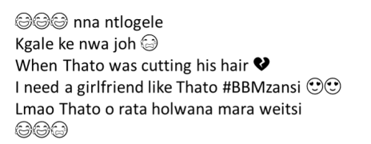
Figure 1: Examples of tweets with emojis
Table 2 presents a summary of the distribution of the tweets in this annotated subset that are monolingual and code-switched. The total monolingual tweets cover 64.4% (32,261) and 35.6% (18,223) of code-switched tweets. As demonstrated in Table 2, our corpus consists of a large number of code-switched tweets for Sepedi-English, Setswana- English and Sesotho-English. Code-switching is common between English and South African Bantu languages. 23.6% of those tweets contain code-switches of Sepedi and English. 5.7% of those tweets contain code switches of Setswana and English. 6.3% of those tweets contain code switches of Sesotho and English. Sepedi, Setswana and Sesotho share some common words since the languages are closely related. In our case, a tweet is considered a code-switched tweet if it has more than 3 English words in Sepedi, Setswana and Sesotho tweets.
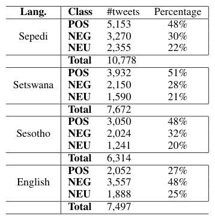
Table 1: Statistical summary of monolingual tweets for Sepedi, Setswana, Sesotho and English languages.
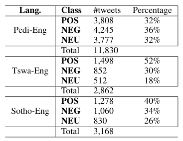
Table 2: Statistical summary of code-switched tweets for Sepedi-English (Pedi-Eng), Setswana-English (Tswa-Eng) and Sesotho-English (Sotho-Eng) languages.
4 Methodology
In this section, we will present the different sentiment annotation strategies that we will utilise for this study. For this, we describe how we employ our sentiment lexicons, and morphological sentiment taggers for the target languages and then also explain how we generate our novel emoji sentiment lexicons from the SAfriSenti corpus.
4.1 Words-Based Sentiment Lexicon
Numerous sentiment lexicons have been produced in various ways, including; manual creation—which is deemed to be a time-consuming and expensive process, and automatic and semi-automatic. Sentiment lexica are typically lists of words with values assigned to them that indicate the word's sentiment. Typically, these are integer values that express the polarity and intensity of the polarity as increasing or decreasing absolute values. For example, values usually range from -5: (very negative) to -1: (weakly negative) and +5: (very positive) to +1: (weakly positive). Sentiment lexicons have been used in many sentiment systems to help determine the semantic orientation of the texts (Nielsen, 2011; Hutto and Gilbert, 2015).
These sentiment lexicons have demonstrated that it is possible to combine the polarity values from a sentence and compute the sentiment on a continuous scale (Kaity and Balakrishnan, 2020). To generate word lexicon entries are chosen as a unit to associate opinion words more accurately. We used a cross-lingual approach by translating the existing English sentiment lexicons such as NRC (Mohammad and Turney, 2013), VADER (Hutto and Gilbert, 2015) and AFFIN (Nielsen, 2011) to Sepedi, Setswana and Sesotho. Our sentiment lexicons for these targeted languages were constructed and verified by language experts. We still kept the English lexicon as our tweets contain English words. Additionally, some of the sentiment-bearing words were tagged by the annotators during the sentiment annotation process. Table 3 shows the distribution of our sentiment lexicons with words marked with sentiment polarity scores. The total number of words in the sentiment lexicon is 17,715.
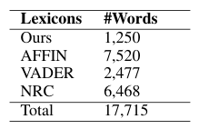
Table 3: Distribution of translated words in the sentiment lexicon for Sepedi, Setswana, and Sesotho.
Additionally, we used morphological sentiment taggers to tag the positive and negative tweets using morphemes with negative or positive moods. This is added to our sentiment lexicon. For example, the word rata, which means /love or like/ often ends with /-a/ but the ending /-e/ can signify a negation when used with the negative morphemes like /ga se/ and /rate/ which means /ga se rate/. However, the verbal ending with a vowel /-e/ can be the last component of the past tense forms as well as one of the markers of a negative mood (Prinsloo, 2020). In cases where tweets contain /ha se/ (e.g. bona ha se wena fela motho waka /you are not my only person/) from Sesotho (i.e. Southern Sotho) rather than /ga se/, our sentiment taggers presented limitations. We improved this by incorporating extra grammatical rules to compensate for this Sotho-Tswana language group scenario.
4.2 Emoji-Based Sentiment lexicons
Figure 2 shows the method for obtaining the emojis from tweets. To create the emoji sentiment lexicons, we leverage the information of the existing emoji sentiment lexicon created by (Kralj Novak et al., 2015), (Hakami et al., 2021), and (Haak, 2021). At this point, our emoji approach runs algorithms on both the tweets, emojis, and the description to automatically determine whether an emoji expresses a positive, negative, or neutral sentiment. To extract emoji-containing tweets from the SAfriSenti corpus, we only selected a subset of tweets with emojis by searching for any tweets with emojis. To create our unlabeled emoji sentiment lexicon, we follow the steps summarised below:
- We automatically extract emoji characters from the SAfriSenti corpus using regular expressions and then convert the emojis into a Unicode representation. A Unicode is a string encoding schema that translates characters into bytes.
- We create a list of unique emojis to avoid repetition in the emoji sentiment lexicons. That means emoji that repeats itself only appears once in the lexicon.
- Next, we retrieve the emoji descriptions from the python emoji translation and Emojipedia platform-an emoji dictionary in English with emoji images from different platforms. This is done by searching for the corresponding Unicode to match its description.
- To predict whether an emoji expresses a positive, negative, or neutral sentiment, we follow the approach by (Gavilanes et al., 2018) and also perform a lookup in the existing emoji sentiment lexicon and utilise the word sentiment lexicons to look up the words' polarities from their description without human intervention.
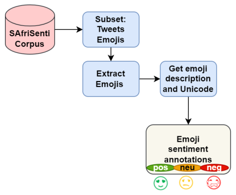
Figure 2: A process to obtain emojis and their description
In addition, we employ emoji sentiment lexicons which were obtained as follows:
- First methods are described in (Kralj Novak et al., 2015; Hakami et al., 2021). This emoji sentiment lexicon was obtained from 4% of 1.6 million tweets that were annotated (i.e. negative, neutral, positive) by 83 different native annotators for 13 European languages. It contains 751 most frequently used emojis on Twitter. The emoji sentiment lexicons were proposed as emoji sentiment rank language-independent resources for automatic sentiment analysis.
- The second method is in (Haak, 2021). This method is based on the intentions of the use of emojis for expressing the sentiment together with the methods used in (Kralj Novak et al., 2015). The emojis are statistically derived by occurrences in sentiment-bearing texts. In this case, the sentiment of the emojis is derived from the texts containing them and the sentiments are determined by using the English VADER lexicon.
4.3 Distant Supervision
In addition to our investigation, we looked at a simple and cheap process of developing an emoji and sentiment lexicon that is language-independent. As illustrated in Figure 3, 4, 5 and 6, we propose the following algorithm for sentiment labelling that leverages the information from emoji sentiment ranking with sentiment-bearing emojis and words (Kranjc et al., 2015):
- Step 1emojitweets: Use emoji unicode to identify and extract a subset of tweets with emojis (see Figure 3).
- Step 2emojis: classify tweets with sentiment-bearing emojis into the classes negative, neutral and positive (Figure 3).
- Step 3lists: create lists with sentiment-bearing words and assign a score from the translated word lexicon (Figure 4):
- collect all words from negative, neutral and positive tweets.
- Then remove words that occur in one or both other lists (Figure 5).
- Step 4words: classify remaining tweets without sentiment-bearing emojis (e.g. tweets with no sentiment-bearing emojis) into the classes negative, neutral and positive based on highest word coverage with the lists of sentiment-bearing words.
- Step 5words+emojis: classify all the tweets with and without sentiment-bearing emojis into the classes negative, neutral and positive based on highest word coverage with the lists of sentiment-bearing words and utilising the emoji sentiment lexicon scores (i.e. sentiment score [-1...+1]) from emoji sentiment lexicon (Kralj Novak et al., 2015; Hakami et al., 2021).
5 Experiments and Evaluations
In this section, we will describe our experimental setup, evaluation metrics, and the results. We also show that by acquiring the emoji sentiment lexicon from their descriptions, we then evaluate the proposed sentiment labeling framework in this section.
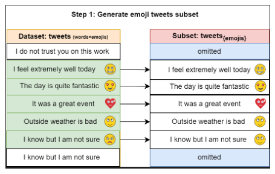
Figure 3: Use unicode to generate emoji tweets subset(step1emojisttweets).
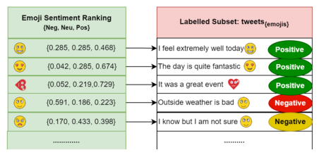
Figure 4: Classify tweets with sentiment-bearing emojis into the 3 classes (step2emojis).
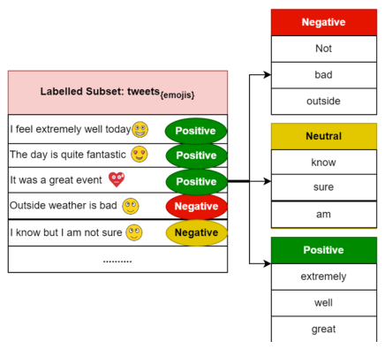
Figure 5: create lists with sentiment-bearing words (step3words).
Our objective is to reduce manual annotation effort in creating training datasets for training NLP systems. Additionally, we investigated how to automatically create a sentiment lexicon using emoji scores from the existing emoji sentiment lexicon.
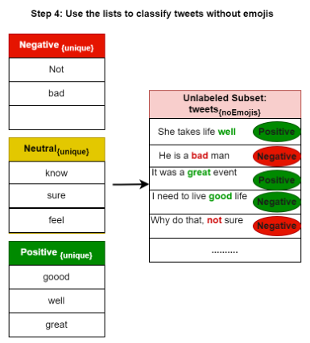
Figure 6: Sentiment-bearing words as indicators for remaining tweets' sentiment classes (step3lists).
5.1 Experimental Setup and Metrics
We extracted the tweets with sentiment-bearing emojis for experimentation as in Figure 3. For quality assurance, all tweets have undergone a rigorous pre-processing step to remove noise, punctuations, and superfluous characters without any vital information (Mabokela and Schlippe, 2022b). In total, tweets with emojis are 34,269 which then constitute 72% of tweets in the SAfriSenti corpus. Only a small set of about 2.9% and 5.43% was found in the Setswana-English and Sesotho-English code-switched tweets while the rest of the monolingual tweets contain about 10%-24% of the tweets with emojis. Table 4 demonstrates the distributions of tweets with emojis. A total of 686 unique emojis are identified from SAfriSenti Corpus across all the target languages. We also extracted emojis from code-switched tweets as well. We assessed our emoji tweets with the sentiment annotation methods defined in Section 4. Additionally, we use sentiment lexicon together with morpheme-based sentiment taggers to accurately label the positive and negative moods.
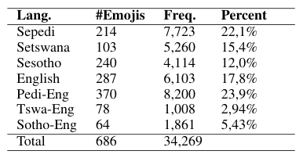
Table 4: Distribution of unique emojis and tweets with emojis per language.
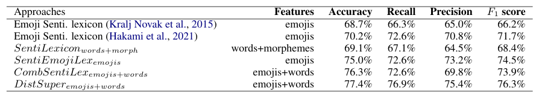
Table 5: Accuracy, recall, precision, and macro-F1 score of the sentiment annotation methods.
We adhere to the metrics used in previous work (Gavilanes et al., 2018). We evaluated our sentiment labelling approach with accuracy, precision, recall, and macro-F1. We evaluate our sentiment labelling strategies against manual annotations. We evaluated our approaches using accuracy, precision, recall, and macro-F1 score using all labels as a multi-class task i.e. positive, neutral, and negative.
To obtain the tweet sentiment score associated with the sentiment label (i.e. negative, neutral, or positive), we used the discrete emoji distribution formula used in (Kralj Novak et al., 2015; Hakami et al., 2021). n emoji may appear in multiple tweets, each of which has been labeled with a sentiment. This creates a discrete distribution:
The components of the distribution (i.e., P-, P0, P+) denote the sentiment class (negative, neutral, or positive) of the emoji being identified. Then, we estimated the probabilities from relative frequencies:
∑N(c)= N, c ∈ {-1, 0, +1} which records the distribution of sentiment for the relevant set of tweets. The N denotes the number of all the occurrences of the emojis in the tweets, and N(c) are the occurrences in tweets with the sentiment label c. We considered the multiple occurrences of an emoji in a single tweet. From the above, we formed a discrete probability distribution: (P-, P0, P+), ∑P(c) = 1.
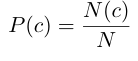
Then, the sentiment score S of the emoji was calculated as the mean of the distribution:
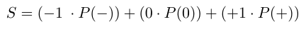
In addition, the labels of the emojis are also determined from the existing emoji lexicons, and their agreement is then tested.
5.2 Results
Table 5 shows the percentages of the accuracies, recall, precision, and F1 score measures for the 4 methods. Our results indicate that the emoji lexicon provided by (Hakami et al., 2021) performs slightly better as compared to the emoji lexicon developed by (Kralj Novak et al., 2015). Furthermore, this is because the emoji sentiment lexicon by (Kralj Novak et al., 2015) has few emojis than the one presented by (Hakami et al., 2021). The accuracy of 68.7% and F1 score of 66.2% is considered comparable as per the previous work (Gavilanes et al., 2018). We used the sentiment lexicon (SentiLexiconwords+morph)) to classify the sentiments contained in the tweets based on words. Our SentiLexiconwords+morph approach achieved an accuracy of 69.1% with a macro-F1 score of 68.4%. Thus, the SentiLexiconwords+morph performs slightly better with an increased margin of (+0.4%) compared to the emoji lexicon provided by (Kralj Novak et al., 2015).
As per the previous work (Hakami et al., 2021), emojis are classified according to categories namely; facial expressions, body language, human activity, hearts, nature, food, object and symbols, and flags. 50% of our emojis fall within the category of facial expressions having strong indicators for emotions. As shown in Table 5, Distant supervision (DistSuperemojis+words) methods perform significantly better than the two existing emoji lexicons and word-based sentiment lexicon. Comparing our emoji sentiment lexicon (SentiEmojiLexemojis) with the two existing emoji lexicons (Kralj Novak et al., 2015; Hakami et al., 2021), SentiEmojiLexemojis performs way better with an accuracy of 75%. This means that our SentiEmojiLexemojis approach is more effective in determining the sentiments of the tweets. Furthermore, we tested with DistSuperemojis+words approach-the combination of emoji-bearing sentiment and sentiment-bearing words. This DistSuperemojis+words approach achieved an accuracy of 77.4% as well as an F-score of 76.3%. Our results further show that our SentiEmojiLexemojis together with DistSuperemojis+words approach can be used to do language-independent sentiment labelling of tweets with and without emojis. Comparing DistSuperemojis+words with DistSuperemojis+words, we obtained an increased margin of more than (+1.4%).
In addition, a combination of word-based sentiment lexicon and morphological sentiment tagger (SentiLexiconwords+morph ) yielded an increase in accuracy. Our DistSuperemojis+words approach outperforms all the sentiment lexicon approaches used in the experiments. Our results show that obtaining the sentiment labels using emoji definitions performed better. However, using the SentiEmojiLexemojis approach achieved a good F1 score of 73.9%. It is worth noting that combining emojis and words (i.e CombSentiLexemojis+words) also improves accuracy by 1.3% compared to SentiEmojiLexemojis. Furthermore, we were able to achieve superior results using CombSentiLexemojis+words compared to utilising the SentiLexiconwords+morph approach. Additionally, there is no significant difference in the results obtained for F1 score, Precision, and Recall in this corpus. This confirms the quality of the SAfriSenti corpus.
6 Conclusion
In this paper, we describe the different sentiment labelling strategies that involve the utilisation of emojis and words to automatically prelabel tweets for low-resource languages. Additionally, we utilised the SentiLexiconwords+morph plus the sentiment taggers to perform sentiment labelling. We create our SentiEmojiLexemojis from the existing manually annotated tweets in the SAfriSenti corpus-a multilingual Twitter sentiment corpus for South African languages (i.e. Sepedi, Setswana, Sesotho and English) which will later be extended to other South African languages. We created our SentiEmojiLexemojis by extracting only the tweets that contain emojis and converting the emojis to their corresponding textual descriptions. Furthermore, we leverage the approach by (Gavilanes et al., 2018) to develop our emoji sentiment lexicon. We achieved better accuracy and F1 score with our DistSuperemojis+words. Comparing our SentiLexiconwords+morph with the sentiment-bearing words lexicon, our results show that the SentiEmojiLexemojis strategy is more effective and reliable. In addition, by comparing our labelling strategies to existing emoji sentiment lexicons, we obtained comparable results with an accuracy of 75% for SentiEmojiLexemojis and 77% of accuracy for the DistSuperemojis+words approach. Furthermore, we used the CombSentiLexemojis+words and DistSuperemojis+words approaches to label the remaining tweets in the SAfriSenti corpus (i.e. 32% (16,215 tweets)). Therefore, developing an automatic sentiment annotation strategy for tweets with emojis is more likely to reduce human annotation effort. Additionally, these methodologies can be readily adapted to other under-resourced African languages, provided the data gathered contains emojis. Our future endeavors include leveraging emoji embedding to formulate context-sensitive sentiment labeling techniques for specialized systems. Moreover, we aim to enhance sentiment classification by incorporating various active learning approaches that incorporate emojis.
7 Acknowledgments
This research work is supported by the National Research Foundation (NRF). First, we acknowledge the NRF for the Black Academics Advancement Programme (BAAP) award (No: BAAP200225506825). We also want to express our deepest gratitude to the annotators who devoted their time and effort, the language experts, and the session facilitators. Finally, we thank the valuable feedback provided by the reviewers.
Notes
1 https://emojipedia.org/stats/
2 http://emojipedia.org/
3 Our dataset will be made available here: https://github.com/Mabokela/SAfriSenti-Corpus
4 https://saifmohammad.com/WebPages/lexicons.html
5 https://github.com/cjhutto/vaderSentiment.git
6 https://github.com/fnielsen/afinn.git
7 https://kt.ijs.si/data/Emoji_sentiment_ranking/
References
Nur Atiqah Sia Abdullah and Nur Ida Aniza Rusli. 2021. Multilingual sentiment analysis: A systematic literature review. pertanika journal of science and technology, 29.
Marvin M. Aguero-Torales, Jose I. Abreu Salas, and Antonio G. Lopez-Herrera. 2021. Deep learning and multilingual sentiment analysis on social media data: An overview. Applied Soft Computing, 107:107373.
Jesujoba O. Alabi, David Ifeoluwa Adelani, Marius Mosbach, and Dietrich Klakow. 2022. Multilingual Language Model Adaptive Fine-Tuning: A Study on African Languages. arXiv e-prints, page arXiv:2204.06487.
Serkan Ayvaz and Mohammed Shiha. 2017. The effects of emoji in sentiment analysis. International Journal of Computer and Electrical Engineering, 9:360-369.
Bharathi Raja Chakravarthi, Ruba Priyadharshini, Vigneshwaran Muralidaran, Navya Jose, Shardul Suryawanshi, Elizabeth Sherly, and John P. McCrae. 2022. Dravidiancodemix: sentiment analysis and offensive language identification dataset for dravidian languages in code-mixed text. Language Resources and Evaluation, 56:765 - 806.
Yuxiao Chen, Jianbo Yuan, Quanzeng You, and Jiebo Luo. 2018. Twitter sentiment analysis via bi-sense emoji embedding and attention-based lstm. Proceedings of the 26th ACM international conference on Multimedia.
Keith Cortis and Brian Davis. 2020. Over a decade of social opinion mining. Artificial Intelligence Review, abs/2012.03091:4873-4965.
Mountaga Diallo, Chayma Fourati, and Hatem Haddad. 2021. Bambara language dataset for sentiment analysis. In Practical ML for Developing Countries Workshop. ICLR 2021, Virtual Event.
Ben Eisner, Tim Rocktäschel, Isabelle Augenstein, Matko Bosnjak, and Sebastian Riedel. 2016. emoji2vec: Learning emoji representations from their description. In SocialNLP@EMNLP.
Milagros Fernández Gavilanes, Jonathan Juncal-Martínez, Silvia García-Méndez, Enrique Costa-Montenegro, and Francisco Javier González-Castaño. 2018. Creating emoji lexica from unsupervised sentiment analysis of their descriptions. Expert Syst. Appl., 103:74-91.
Alec Go, Richa Bhayani, and Lei Huang. 2009. Twitter sentiment classification using distant supervision. Processing, 150.
Vandita Grover. 2021. Exploiting emojis in sentiment analysis: A survey. Journal of The Institution of Engineers : Series B, pages 1-14.
Gaël Guibon, Magalie Ochs, and Patrice Bellot. 2016. From Emojis to Sentiment Analysis. In WACAI 2016, Brest, France. Lab-STICC and ENIB and LITIS.
Fabian Haak. 2021. Emojis in lexicon-based sentiment analysis: Creating emoji sentiment lexicons from unlabeled corpora. In Proceedings of the LWDA 2021 Workshops: FGWM, KDML, FGWI-BIA, and FGIR, pages 279-286. CEUR-WS.
Shatha Ali A. Hakami, Robert Hendley, and Phillip Smith. 2021. Arabic emoji sentiment lexicon (ArabESL): A comparison between Arabic and European emoji sentiment lexicons. In Proceedings of the Sixth Arabic Natural Language Processing Workshop, pages 60-71, Kyiv, Ukraine (Virtual). Association for Computational Linguistics.
C.J. Hutto and Eric Gilbert. 2015. Vader: A parsimonious rule-based model for sentiment analysis of social media text. In Proceedings of the 8th International Conference on Weblogs and Social Media, ICWSM 2014, pages 218-225.
Kanika Jindal and Rajni Aron. 2021. A systematic study of sentiment analysis for social media data. Materials Today: Proceedings.
Mohammed Kaity and Vimala Balakrishnan. 2020. Sentiment lexicons and non-English languages: A survey. Knowledge and Information Systems, 62:4445-4480.
Mayank Kejriwal, Qile Wang, Hongyu Li, and Lu Wang. 2021. An empirical study of emoji usage on twitter in linguistic and national contexts. Online Social Networks and Media, 24:100149.
Mayu Kimura and Marie Katsurai. 2017. Automatic construction of an emoji sentiment lexicon. Proceedings of the 2017 IEEE/ACM International Conference on Advances in Social Networks Analysis and Mining 2017, page 1033-1036.
Petra Kralj Novak, Jasmina Smailovic, Borut Sluban, and Igor Mozetic. 2015. Sentiment of emojis. PloS one, 10.
Janez Kranjc, Jasmina Smailovic, Vid Podpecan, Miha Grcar, Martin Znidari, and Nada Lavrac. 2015. Active learning for sentiment analysis on data streams: Methodology and workflow implementation in the clowdflows platform. Inf. Process. Manag., 51:187-203.
Byung kwan Yoo and Julia Taylor Rayz. 2021. Understanding emojis for sentiment analysis. In FLAIRS Conference.
Chuchu Liu, Fan Fang, Xu Lin, Tie Cai, Xu Tan, Jianguo Liu, and Xin Lu. 2021. Improving sentiment analysis accuracy with emoji embedding. Journal of Safety Science and Resilience, 2:246-252.
Koena Ronny Mabokela, Turgay Celik, and Mpho Raborife. 2022a. Multilingual Sentiment Analysis for Under-Resourced Languages: A Systematic Review of the Landscape. IEEE Access, 11:15996 - 16020.
Koena Ronny Mabokela and Madimetja Jonas Manamela. 2013. An integrated language identification for code-switched speech using decoded-phonemes and support vector machine. In 2013 7th Conference on Speech Technology and Human - Computer Dialogue (SpeD), pages 1-6.
Koena Ronny Mabokela, Mpho Raborife, and Turgay Celik. 2022b. Safrisenti: Towards a creation of multilingual sentiment corpus for south african under-resourced languages. ACM Trans. Asian Low-Resour. Lang. Inf. Process.
Koena Ronny Mabokela and Tim Schlippe. 2022a. AI for Social Good: Sentiment Analysis to Detect Social Challenges in South Africa. In The South African Conference for Artificial Intelligence Research (SACAIR 2022).
Koena Ronny Mabokela and Tim Schlippe. 2022b. A Sentiment Corpus for South African Under-Resourced Languages in a Multilingual Context. In The 1st Annual Meeting of the ELRA/ISCA Special Interest Group on Under-Resourced Languages (SIGUL 2022), page 70-77.
Gati Lother Martin, Medard Edmund Mswahili, and Young-Seob Jeong. 2021. Sentiment Classification in Swahili Language Using Multilingual BERT. African NLP Workshop, EACL 2021, abs/2104.09006.
Salima Medhaffar, Fethi Bougares, Y. Estève, and Lamia Hadrich Belguith. 2017. Sentiment analysis of tunisian dialects: Linguistic ressources and experiments. In WANLP@EACL.
Saif M. Mohammad and Peter D. Turney. 2013. Crowdsourcing a word-emotion association lexicon. Computational Intelligence, 29(3):436-465.
Shamsuddeen Hassan Muhammad, David Ifeoluwa Adelani, Sebastian Ruder, Ibrahim Said Ahmad, Idris Abdulmumin, Bello Shehu Bello, Monojit Choudhury, Chris Chinenye Emezue, Saheed Salahudeen Abdullahi, Anuoluwapo Aremu, Alipio Jeorge, and Pavel Brazdil. 2022. NaijaSenti: A Nigerian Sentiment Corpus for Multilingual Sentiment Analysis.
Finn Årup Nielsen. 2011. A new ANEW: evaluation of a word list for sentiment analysis in microblogs. CoRR, abs/1103.2903.
Alexander Pak and Patrick Paroubek. 2010. Twitter as a corpus for sentiment analysis and opinion mining. In LREc, pages 1320-1326.
D.J. Prinsloo. 2020. Lexicographic treatment of negation in sepedi paper dictionaries. Lexikos, 30:1-25.
Abhishek Singh, Eduardo Blanco, and Wei Jin. 2019. Incorporating emoji descriptions improves tweet classification. In Proceedings of NAACL-HLT, page 2096-2101.
Statista. 2022. African countries with the largest population as of 2020.
Hao Wang and Jorge A. Castanon. 2015. Sentiment expression via emoticons on social media. In 2015 IEEE International Conference on Big Data (Big Data), pages 2404-2408.
Mayur Wankhade, Annavarapu Rao, and Chaitanya Kulkarni. 2022. A Survey on Sentiment Analysis Methods, Applications, and Challenges. Artificial Intelligence Review, pages 1-50.
A Appendix: Language Information
Northern Sotho, also known as Sesotho sa Leboa, is a Sotho-Tswana language primarily spoken in the northeastern regions of South Africa. It is also commonly referred to as Sepedi or Pedi. The South African National Census of 2011 reports that it is the first language of over 4.6 million people, accounting for 9.1% of the population, thus ranking it as the 5th most spoken language in South Africa. The Sepedi language is most frequently used in the Mpumalanga, Gauteng, and Limpopo provinces.
Tswana, known by its indigenous name Setswana, is a Bantu language spoken in Southern Africa by approximately 8.2 million individuals. It belongs to the Bantu language family within the Sotho-Tswana branch of Zone S, and shares close ties with the Northern Sotho, Southern Sotho, Kgalagadi, and Lozi languages. Setswana is an official language in Botswana and South Africa and serves as a lingua franca in Botswana and certain parts of South Africa, particularly in the North West Province. Tswana-speaking ethnic groups can be found across more than two provinces in South Africa, mainly in the North West, where approximately four million people speak the language.
Sesotho, also referred to as Southern Sotho, is a Southern Bantu language belonging to the Sotho-Tswana ("S.30") group. It is primarily spoken in Lesotho, where it serves as both the national and official language, as well as in South Africa (particularly in the Vaal and Free State), where it is one of the 11 official languages. It is also recognized as one of the 16 official languages of Zimbabwe. As with all Bantu languages, Sesotho is an agglutinative language that utilizes numerous affixes, and derivational and inflectional rules to construct complete words.
Investigating Sentiment-Bearing Words- and Emoji-based Distant Supervision Approaches for Sentiment Analysis
Étude des approches de supervision à distance basées sur des mots et des emojis pour l'analyse des sentiments
Affiliations
Koena Ronny Mabokela1,3
Mpho Raborife2
Turgay Celik3
1University of Johannesburg, Applied Information Systems
2University of Johannesburg, Institute for Intelligent Systems
3University of the Witwatersrand, School of Electrical and Information Engineering
{}
Affiliations
Koena Ronny Mabokela1,3
Mpho Raborife2
Turgay Celik3
1University of Johannesburg, Applied Information Systems
2University of Johannesburg, Institute for Intelligent Systems
3University of the Witwatersrand, School of Electrical and Information Engineering
{}
Abstract
Résumé
Sentiment analysis focuses on the automatic detection and classification of opinions expressed in texts. Emojis can be used to determine the sentiment polarities of the texts (i.e. positive, negative, or neutral). Several studies demonstrated how sentiment analysis is accurate when emojis are used (Kaity and Balakrishnan, 2020). While they have used emojis as features to improve the performance of sentiment analysis systems, in this paper we analyse the use of emojis to reduce the manual effort in labelling text for training those systems. Furthermore, we investigate the manual effort reduction in the sentiment labelling process with the help of sentiment-bearing words as well as the combination of sentiment-bearing words and emojis. In addition to English, we evaluated the approaches with the low-resource African languages Sepedi, Setswana, and Sesotho. The combination of emojis and words sentiment lexicon shows better performance compared to emojis-only lexicons and words-based lexicons. Our results show that our emoji sentiment lexicon approach is effective, with an accuracy of 75% more than other sentiment lexicon approaches, which have an average accuracy of 69.1%. Furthermore, our distant supervision method obtained an accuracy of 77.0%. We anticipate that only 23% of the tweets will need to be changed as a result of our annotation strategies.
L'analyse des sentiments se concentre sur la détection et la classification automatiques des opinions exprimées dans les textes. Les emojis peuvent être utilisés pour déterminer les polarités de sentiment des textes (c'est-à-dire positives, négatives ou neutres). Plusieurs études ont démontré comment l'analyse des sentiments est précise lorsque les emojis sont utilisés (Kaity et Balakrishnan, 2020). Alors qu'ils ont utilisé les emojis comme caractéristiques pour améliorer les performances des systèmes d'analyse de sentiment, dans cet article, nous analysons l'utilisation des emojis pour réduire l'effort manuel dans l'étiquetage du texte pour l'entraînement de ces systèmes. De plus, nous étudions la réduction de l'effort manuel dans le processus d'étiquetage des sentiments à l'aide de mots porteurs de sentiments ainsi que de la combinaison de mots porteurs de sentiments et d'emojis. En plus de l'anglais, nous avons évalué les approches avec les langues africaines à ressources limitées Sepedi, Setswana et Sesotho. La combinaison des emojis et des mots dans le lexique des sentiments montre de meilleures performances par rapport aux lexiques basés uniquement sur les emojis et les lexiques basés sur les mots. Nos résultats montrent que notre approche de lexique du sentiment emoji est efficace, avec une précision de 75% de plus que les autres approches de lexique du sentiment, qui ont une précision moyenne de 69,1%. De plus, notre méthode de supervision à distance a obtenu une précision de 77,0 %. Nous anticipons que seulement 23 % des tweets devront être modifiés en conséquence de nos stratégies d'annotation.
1 Introduction
1 Introduction
South African population is widely diverse and highly multilingual (i.e. origins, cultures, languages, and religions) with distinct language groups including English and Afrikaans (Statista, 2022). The Nguni group is the largest group which includes Seswati, isiNdebele, isiXhosa, and isiZulu. In this instance, our study focuses on the second-largest group-the Sotho-Tswana group comprising Sepedi (Northern Sotho) (Mabokela and Manamela, 2013), Sesotho (Southern Sotho), and Setswana (Statista, 2022).
La population sud-africaine est largement diversifiée et très multilingue (c'est-à-dire origines, cultures, langues et religions) avec des groupes linguistiques distincts incluant l'anglais et l'afrikaans (Statista, 2022). Le groupe Nguni est le plus grand groupe qui comprend Seswati, isiNdebele, isiXhosa, et isiZulu. Dans ce cas, notre étude se concentre sur le deuxième plus grand groupe, le groupe Sotho-Tswana comprenant le Sepedi (Sotho du Nord) (Mabokela et Manamela, 2013), le Sesotho (Sotho du Sud) et le Setswana (Statista, 2022).
Sentiment analysis is a branch of natural language processing (NLP) that studies the emotion (opinions or attitudes) of text. This field has received a lot of attention which led to its numerous successful NLP technologies in various areas (Aguero-Torales et al., 2021; Mabokela et al., 2022a). For example, its popular application has been in social media monitoring, support management, customer feedback (Wankhade et al., 2022) and AI for social good (Mabokela and Schlippe, 2022a).
L'analyse des sentiments est une branche du traitement automatique du langage naturel (TALN) qui étudie l'émotion (opinions ou attitudes) d'un texte. Ce domaine a reçu beaucoup d'attention, ce qui a conduit à de nombreuses technologies TAL réussies dans divers domaines (Aguero-Torales et al., 2021 ; Mabokela et al., 2022a). Par exemple, son application populaire a été dans la surveillance des médias sociaux, la gestion du support, les retours clients (Wankhade et al., 2022) et l'IA pour le bien social (Mabokela et Schlippe, 2022a).
Emojis being used alongside text messages on social media has become increasingly popular (Jindal and Aron, 2021; Grover, 2021). In recent years there has been more work on sentiment analysis with the use of emojis or emoticons (Grover, 2021; Hakami et al., 2021; Haak, 2021). Emojis have recently become an alternative to emoticons but they differ from emoticons in that emoticons are typographical facial representations (Gavilanes et al., 2018). Emojis are used to express feelings, moods, and emotions in a written message with non-verbal elements (Kralj Novak et al., 2015; Gavilanes et al., 2018).
Les emojis utilisés aux côtés des messages texte sur les médias sociaux sont devenus de plus en plus populaires (Jindal et Aron, 2021; Grover, 2021). Ces dernières années, davantage de travaux ont été réalisés sur l'analyse de sentiment avec l'utilisation d'emojis ou d'emoticônes (Grover, 2021; Hakami et al., 2021; Haak, 2021). Les emojis sont récemment devenus une alternative aux emoticônes, mais ils diffèrent des emoticônes en ce que ces dernières sont des représentations faciales typographiques (Gavilanes et al., 2018). Les emojis sont utilisés pour exprimer des sentiments, des humeurs et des émotions dans un message écrit avec des éléments non verbaux (Kralj Novak et al., 2015; Gavilanes et al., 2018).
The use of emojis-as a standardised collection of tiny visual pictograms portrays everything from happy smiles to flags from around the world (Grover, 2021; Gavilanes et al., 2018). The modern-day emojis can be traced back to chatrooms in the 1990s. They were used in conversations to signal a smile, anger or to portray a joke or sarcastic statement (kwan Yoo and Rayz, 2021). According to Emoji Statistics, there were 3,633 emojis in total in the Unicode Standard as of September 2021. That means the sentiment lexicon has to be enriched with new emojis that are frequently on social media (Kralj Novak et al., 2015). Therefore, it is necessary to extend the existing emoji lexicons for sentiment labelling.
L’utilisation d’emojis comme une collection standardisée de minuscules pictogrammes visuels dépeint tout, des sourires heureux aux drapeaux du monde entier (Grover, 2021; Gavilanes et al., 2018). Les emojis modernes remontent aux salons de discussion des années 1990. Ils étaient utilisés dans les conversations pour signaler un sourire, une colère ou pour dépeindre une blague ou une déclaration sarcastique (kwan Yoo et Rayz, 2021). Selon Emoji Statistics, il y avait 3 633 emojis au total dans le standard Unicode en septembre 2021. Cela signifie que le lexique de sentiments doit être enrichi avec de nouveaux émojis fréquemment présents sur les médias sociaux (Kralj Novak et al., 2015). Il est donc nécessaire d'étendre les lexiques d'emojis existants pour le marquage du sentiment.
Many NLP systems require a labelled dataset for machine learning algorithms to produce good results. For this purpose, an annotation method that is not labour-intensive and time-consuming is required. Emojis have received much attention because of their widespread use and popularity in natural language processing (NLP) (Kejriwal et al., 2021). Emoji sentiment lexicons for other languages has been explored as an alternative method which then yielded a significant improvement in sentiment classification (Gavilanes et al., 2018; Haak, 2021; Kralj Novak et al., 2015). However, sentiment annotation and investigation of sentiment via emojis have received little attention for low-resource languages (Hakami et al., 2021).
De nombreux systèmes de traitement automatique du langage naturel nécessitent un ensemble de données étiquetées pour que les algorithmes d'apprentissage automatique produisent de bons résultats. À cette fin, une méthode d'annotation qui ne nécessite pas beaucoup de main-d'œuvre et de temps est nécessaire. Les emojis ont reçu beaucoup d’attention en raison de leur utilisation généralisée et de leur popularité dans le traitement du langage naturel (NLP) (Kejriwal et al., 2021). Les lexiques de sentiment par emojis pour d'autres langues ont été explorés comme une méthode alternative qui a alors donné lieu à une amélioration significative de la classification de sentiment (Gavilanes et al., 2018; Haak, 2021; Kralj Novak et al., 2015). Cependant, l’annotation des sentiments et l’étude des sentiments via les emojis ont reçu peu d’attention pour les langues à faibles ressources (Hakami et al., 2021).
Several emoji sentiment lexicons were produced by manual construction involving human annotators, automatically and semi-automatic with little human intervention (Grover, 2021). According to our knowledge, there is no published work on analysing the sentiment of emojis in the Bantu languages. In addition, since emojis are perceived as an important part of social media communications, incorporating them is likely to yield a higher-quality sentiment classification (Kejriwal et al., 2021).
Plusieurs lexiques de sentiments d'emojis ont été produits par construction manuelle impliquant des annotateurs humains, automatiquement et de manière semi-automatique avec peu d'intervention humaine (Grover, 2021). À notre connaissance, il n’existe aucun travail publié sur l’analyse du sentiment des emojis dans les langues bantoues. De plus, étant donné que les emojis sont perçus comme une partie importante des communications sur les médias sociaux, leur intégration est susceptible de donner une classification des sentiments de meilleure qualité (Kejriwal et al., 2021).
Interestingly, emojis have been able to provide more information towards an accurate sentiment of the texts (Ayvaz and Shiha, 2017). Related work has shown that emojis help to detect and determine the sentiment label of the tweets (Go et al., 2009; Wang and Castanon, 2015; Ayvaz and Shiha, 2017; Singh et al., 2019). For this reason, it is interesting that we adopt an automatic approach that employs emoji information to reduce manual effort.
Fait intéressant, les emojis ont été en mesure de fournir plus d’informations pour un sentiment précis des textes (Ayvaz et Shiha, 2017). Les travaux connexes ont montré que les emojis aident à détecter et à déterminer l'étiquette de sentiment des tweets (Go et al., 2009; Wang et Castanon, 2015; Ayvaz et Shiha, 2017; Singh et al., 2019). Pour cette raison, il est intéressant que nous adoptions une approche automatique qui utilise des informations emoji pour réduire l’effort manuel.
The main objective is to investigate the impact of emojis in the context of sentiment analysis. This comprises two tasks: (i) the usage of emojis to lower the manual effort in creating training data for sentiment analysis systems and (ii) the impact of emojis on the final accuracy of final sentiment analysis systems. For the pre-labelling, we even investigate a novel distance supervision approach to use emoji-based tweets to build a sentiment lexicon from scratch completely language-independent. We evaluate and compare our pre-labelling strategies with frequently used emoji sentiment lexicons provided by (Kralj Novak et al., 2015; Haak, 2021; Hakami et al., 2021). We contribute the following through our study:
L'objectif principal est d'étudier l'impact des emojis dans le contexte de l'analyse des sentiments. Cela comprend deux tâches : (i) l'utilisation des emojis pour réduire l'effort manuel de création de données d'entraînement pour les systèmes d'analyse de sentiments et (ii) l'impact des emojis sur l'exactitude finale des systèmes d'analyse de sentiments. Pour le pré-étiquetage, nous étudions même une nouvelle approche de supervision à distance pour utiliser les tweets basés sur les emojis afin de construire un lexique de sentiments à partir de zéro, complètement indépendant de la langue. Nous évaluons et comparons nos stratégies de pré-étiquetage avec les lexiques du sentiment emoji fréquemment utilisés fournis par (Kralj Novak et al., 2015; Haak, 2021; Hakami et al., 2021). Nous contribuons ce qui suit grâce à notre étude :
We collected a new sentiment analysis corpus for Sesotho (i.e. 6,314 tweets and 3,168 Sotho-English tweets ) and added it to the SAfriSenti corpus.
Nous avons collecté un nouveau corpus d'analyse de sentiments pour le sesotho (c'est-à-dire 6 314 tweets et 3 168 tweets sotho-anglais) et l'avons ajouté au corpus SAfriSenti.
We investigate the usage of emoji sentiment lexicons in sentiment labelling strategies to reduce manual annotation effort.
Nous étudions l'utilisation des lexiques de sentiment emoji dans les stratégies d'étiquetage de sentiment pour réduire l'effort d'annotation manuelle.
We leverage the existing emoji sentiment lexicons (Kralj Novak et al., 2015; Hakami et al., 2021; Haak, 2021) to generate a suitable sentiment lexicon for our target languages and provide a solution for the newer emojis which are not yet in the emoji sentiment lexicon.
Nous nous appuyons sur les lexiques de sentiment d'emoji existants (Kralj Novak et al., 2015; Hakami et al., 2021; Haak, 2021) pour générer un lexique de sentiment adapté à nos langues cibles et fournir une solution pour les emojis plus récents qui ne figurent pas encore dans le lexique de sentiment d'emoji.
To cover tweets without emojis, we leverage sentiment lexicons in a cross-lingual way.
Pour couvrir les tweets sans émojis, nous exploitons les lexiques de sentiments de manière interlingue.
Since, specific morphemes indicate a mood in our target languages, we also built and analyse morpheme-based language-specific sentiment taggers.
Puisque des morphèmes spécifiques indiquent une tonalité affective dans nos langues cibles, nous avons également construit et analysé des étiqueteurs de sentiment spécifiques à la langue basés sur les morphèmes.
The structure of this paper is as follows: The related work will be discussed in Section 2. In Section 3, we will describe our SAfriSenti sentiment corpus and data collection strategies, as well as quality assurance. In Section 4, we describe the different sentiment annotation strategies. In Section 5, we will present the experiments and evaluation. Section 6, presents the conclusion and future work.
La structure du présent document est la suivante : Les travaux connexes seront examinés dans la section 2. Dans la section 3, nous décrirons notre corpus de sentiments SAfriSenti et nos stratégies de collecte de données, ainsi que l'assurance qualité. Dans la section 4, nous décrivons les différentes stratégies d'annotation du sentiment. Dans la Section 5, nous présenterons les expériences et l'évaluation. La section 6 présente la conclusion et les travaux futurs.
2 Related Studies
2 Études connexes
Recent efforts have been made to address the challenges of sentiment analysis for under-resourced languages (Mabokela et al., 2022a; Abdullah and Rusli, 2021). For example, a small number of African languages, including a few Nigerian languages (i.e. NaijaSenti Corpus) (Muhammad et al., 2022; Alabi et al., 2022) Swahili (Martin et al., 2021), Tunisian dialects (Medhaffar et al., 2017) and Bambara (Diallo et al., 2021) have been studied for sentiment analysis. Recently, SAfriSenti corpus (Mabokela and Schlippe, 2022b; Mabokela et al., 2022b) was created -it is a multilingual sentiment corpus for South African under-resourced languages. SAfriSenti Corpus is the largest Twitter sentiment corpus to date, with the goal of addressing the challenges of 11 South African languages.
Des efforts récents ont été faits pour aborder les défis de l'analyse de sentiment pour les langues sous-dotées en ressources (Mabokela et al., 2022a ; Abdullah et Rusli, 2021). Par exemple, un petit nombre de langues africaines, y compris quelques langues nigérianes (c.-à-d. NaijaSenti Corpus) (Muhammad et al., 2022; Alabi et al., 2022) Swahili (Martin et al., 2021), dialectes tunisiens (Medhaffar et al., 2017) et Bambara (Diallo et al., 2021) ont été étudiés pour l’analyse des sentiments. Récemment, le corpus SAfriSenti (Mabokela et Schlippe, 2022b ; Mabokela et al., 2022b) a été créé — il s'agit d'un corpus de sentiments multilingue pour les langues sous-dotées d'Afrique du Sud. Le corpus SAfriSenti est le plus grand corpus de sentiment Twitter à ce jour, avec pour objectif de relever les défis de 11 langues sud-africaines.
Many current NLP applications are employed for social media data which solely rely on the labelled dataset, preferably manual annotation (Chakravarthi et al., 2022). However, no work has been done for these low-resource languages in the aspect of utilising emoticons or emojis for sentiment labelling. Moreover, high-resourced languages such as English, Spanish, and Arabic explored the emoji- or emoticon-based sentiment analysis with promising progress (Gavilanes et al., 2018; Hakami et al., 2021).
De nombreuses applications TAL actuelles sont employées pour les données des médias sociaux, qui reposent uniquement sur le jeu de données étiqueté, de préférence par annotation manuelle (Chakravarthi et al., 2022). Cependant, aucun travail n'a été fait pour ces langues à faibles ressources dans l'aspect de l'utilisation d'émoticônes ou d'emojis pour l'étiquetage des sentiments. De plus, des langues riches en ressources comme l’anglais, l’espagnol et l’arabe ont exploré l’analyse des sentiments basée sur les emoji ou les émoticônes avec des progrès prometteurs (Gavilanes et al., 2018; Hakami et al., 2021).
Many studies investigated emojis and word-based sentiment lexicons for sentiment analysis (Cortis and Davis, 2020; Grover, 2021). Additionally, some researchers used sentiment-bearing emojis to collect tweets from Twitter (Go et al., 2009; Pak and Paroubek, 2010). However, emojis for sentiment analysis of low-resource languages have received little research attention (kwan Yoo and Rayz, 2021) and a combination of emojis with sentiment lexicon for sentiment labelling is still an area for investigation. Moreover, only a few studies explored emoji sentiment lexicons for multilingual sentiment analysis (Kralj Novak et al., 2015; Gavilanes et al., 2018). A previous study by (Kralj Novak et al., 2015) created sentiment lexicons by involving 83 annotators to rate each of the 840 emoji as positive, neutral and negative.
De nombreuses études ont étudié les emojis et les lexiques de sentiments basés sur des mots pour l’analyse des sentiments (Cortis et Davis, 2020; Grover, 2021). De plus, certains chercheurs ont utilisé des emojis porteurs de sentiments pour collecter des tweets sur Twitter (Go et al., 2009; Pak et Paroubek, 2010). Cependant, les emojis pour l’analyse des sentiments des langues à faibles ressources ont reçu peu d’attention de la recherche (kwan Yoo et Rayz, 2021) et une combinaison d’emojis avec le lexique des sentiments pour l’étiquetage des sentiments est encore un domaine d’investigation. De plus, seules quelques études ont exploré les lexiques de sentiments d'emoji pour l'analyse de sentiments multilingue (Kralj Novak et al., 2015 ; Gavilanes et al., 2018). Une étude précédente de (Kralj Novak et al., 2015) a créé des lexiques du sentiment en impliquant 83 annotateurs pour évaluer chacun des 840 emoji comme positif, neutre et négatif.
Similarly, (Wang and Castanon, 2015) further analysed the impact of emoticons in constructing sentiment lexicons and also training the sentiment classifier. Although it was observed that the performance of the sentiment model increased by 15%, the findings support their claim that a small number of emoticons are powerful and accurate indicators of sentiment polarity. But according to (Guibon et al., 2016), the usage of the emojis can be expanded to numerous additional avenues such as sentiment enhancement and sentiment modification and are not only limited to sentiment expression. Similarly, (Ayvaz and Shiha, 2017) explored the impact of emojis in sentiment analysis but only focused on positive and negative sentiment polarity for the English language. (Kimura and Katsurai, 2017) investigated an automatic construction of an emoji sentiment lexicon. This technique takes the sentiment words from WordNet-Affect and determines how often they occur alongside each emoji.
De même, (Wang et Castanon, 2015) ont analysé davantage l'impact des émoticônes dans la construction de lexiques de sentiments et également dans l'entraînement du classificateur de sentiments. Bien qu'il ait été observé que la performance du modèle de sentiment a augmenté de 15%, les résultats appuient leur affirmation selon laquelle un petit nombre d'émoticônes sont des indicateurs puissants et précis de la polarité du sentiment. Mais selon (Guibon et al., 2016), l’utilisation des emojis peut être étendue à de nombreuses voies supplémentaires telles que l’amélioration du sentiment et la modification du sentiment et ne se limite pas à l’expression du sentiment. De même, (Ayvaz et Shiha, 2017) ont exploré l’impact des emojis dans l’analyse des sentiments, mais ne se sont concentrés que sur la polarité des sentiments positifs et négatifs pour la langue anglaise. (Kimura et Katsurai, 2017) ont enquêté sur une construction automatique d’un lexique du sentiment emoji. Cette technique prend les mots de sentiment de WordNet-Affect et détermine à quelle fréquence ils se produisent aux côtés de chaque emoji.
Consequently, (Gavilanes et al., 2018) created an emoji sentiment lexicon using an unsupervised method based on the emoji descriptions. Based on the analyses of the sentiment of informal texts in English and Spanish, they automatically created sentiment lexica with 840 emojis using the unsupervised system with sentiment propagation across dependencies (USSPAD) approach.
Par conséquent, (Gavilanes et al., 2018) ont créé un lexique de sentiments d'emoji en utilisant une méthode non supervisée basée sur les descriptions des emojis. Sur la base des analyses du sentiment de textes informels en anglais et en espagnol, ils ont créé automatiquement des lexiques de sentiment avec 840 emojis en utilisant l'approche USSPAD (unsupervised system with sentiment propagation across dependencies).
Recently, (Haak, 2021) demonstrated a technique that accurately and quickly identifies the emotions conveyed by emojis without manual annotation. However, a study by (kwan Yoo and Rayz, 2021) examined how emojis are used in tweets and how they can affect the tone and the sentiment of a sentence in the tweets and improved the sentiment analysis accuracy using machine learning techniques. (Hakami et al., 2021) examined the consistency of contextual emoji sentiment analysis in Arabic and European languages. They created the Arabic emoji sentiment lexicon and then compared the sentiment expressed in each of the two language families and cultures.
Récemment, (Haak, 2021) a démontré une technique qui identifie avec précision et rapidité les émotions transmises par les emojis sans annotation manuelle. Cependant, une étude de (kwan Yoo et Rayz, 2021) a examiné comment les emojis sont utilisés dans les tweets et comment ils peuvent affecter le ton et le sentiment d'une phrase dans les tweets et a amélioré la précision de l'analyse des sentiments en utilisant des techniques d'apprentissage automatique. (Hakami et al., 2021) ont examiné la cohérence de l'analyse des sentiments contextuels des emojis dans les langues arabes et européennes. Ils ont créé le lexique du sentiment emoji arabe, puis comparé le sentiment exprimé dans chacune des deux familles linguistiques et cultures.
Some studies attempted to learn emoji embeddings to complement text word embeddings for sentiment classification tasks (Grover, 2021). First, (Eisner et al., 2016) employed a pre-trained emoji embedding strategy using positive and negative, randomly selected Unicode emoji descriptions. (Chen et al., 2018) learnt bi-sense emoji embeddings and train an attention-based LSTM for sentiment classification. By considering only the positive and negative descriptions for each Unicode emoji, the fine-tuning of emoji embeddings can be expedited. However, (Singh et al., 2019) proposed a straightforward method for processing emojis by replacing emojis with their descriptions in tweets and using a pre-trained word embedding strategy that is similar to that of the standard words. Furthermore (Liu et al., 2021) examined and evaluated the impact of supplementing emojis as additional features to improve the sentiment analysis performance. They developed an improved emoji-embedding model based on Bi-LSTM which in turn achieved the best sentiment analysis accuracy on online Chinese texts.
Certaines études ont tenté d'apprendre des embeddings d'emojis pour compléter les embeddings de mots textuels dans des tâches de classification de sentiment (Grover, 2021). Tout d'abord, (Eisner et al., 2016) ont employé une stratégie d'embedding d'emojis pré-entraînés en utilisant des descriptions d'emojis Unicode positives et négatives, sélectionnées aléatoirement. (Chen et al., 2018) ont appris des embeddings d'emojis bi-sens et entraîné un LSTM basé sur l'attention pour la classification de sentiment. En considérant uniquement les descriptions positives et négatives pour chaque emoji Unicode, le réglage fin des embeddings d'emojis peut être accéléré. Cependant, (Singh et al., 2019) ont proposé une méthode simple pour traiter les emojis en remplaçant les emojis par leurs descriptions dans les tweets et en utilisant une stratégie d'embedding de mots pré-entraînés similaire à celle des mots standards. De plus, (Liu et al., 2021) ont examiné et évalué l'impact de l'ajout d'emojis comme caractéristiques supplémentaires pour améliorer les performances de l'analyse de sentiment. Ils ont développé un modèle de plongement d'emojis amélioré basé sur Bi-LSTM, qui a à son tour atteint la meilleure exactitude d'analyse de sentiments sur des textes chinois en ligne.
Our study is similar to (Gavilanes et al., 2018), and (Hakami et al., 2021) in that they utilised emoji sentiment lexicons to perform sentiment analysis on tweets with emojis. In this research, we adopt their approach, but we provide some additional steps to construct our emoji sentiment lexicon. Comparing the above-mentioned studies to our study, we utilised the existing emoji sentiment lexicons by (Kralj Novak et al., 2015; Haak, 2021) to construct the initial emoji sentiment lexicon. Simply put, we translate emojis found in the tweets into their textual descriptions and leverage existing emoji sentiment lexicons to create a novel method for effective sentiment annotation of tweets.
Notre étude est similaire à (Gavilanes et al., 2018) et (Hakami et al., 2021) dans le sens où elles ont utilisé des lexiques de sentiments d'emojis pour effectuer une analyse de sentiments sur des tweets contenant des emojis. Dans cette recherche, nous adoptons leur approche, mais nous fournissons quelques étapes supplémentaires pour construire notre lexique du sentiment emoji. En comparant les études susmentionnées à notre étude, nous avons utilisé les lexiques de sentiment emoji existants (Kralj Novak et al., 2015; Haak, 2021) pour construire le lexique de sentiment emoji initial. En termes simples, nous traduisons les emojis trouvés dans les tweets dans leurs descriptions textuelles et tirons parti des lexiques de sentiments emoji existants pour créer une nouvelle méthode d'annotation efficace des sentiments des tweets.
3 Languages and Dataset
3 Langues et ensembles de données
This section includes statistics regarding our SAfriSenti corpus, from the initial collecting of raw data to the final tweets using Twitter API for Academic Research. SAfriSenti (Mabokela et al., 2022b; Mabokela and Schlippe, 2022b) corpus was manually annotated by 3 native speakers per target language following strict annotation guidelines. The annotators labelled tweets into 3-classes; positive, negative, and neutral. The corpus contains over 50,000 tweets. About 4% of the tweets were removed for various good reasons while 2% was retained after review. Positive tweets dominate negative tweets in Sepedi, Setswana, and Sesotho monolingual tweets by a higher margin. In addition, we evaluated our annotated sentiment corpus using the inter-annotation agreement metric (i.e., Krippendorff's average value of α=0.7695) which is deemed acceptable.
Cette section comprend des statistiques concernant notre corpus SAfriSenti, de la collecte initiale des données brutes aux tweets finaux en utilisant l'API Twitter pour la recherche académique. Le corpus SAfriSenti (Mabokela et al., 2022b; Mabokela et Schlippe, 2022b) a été annoté manuellement par 3 locuteurs natifs par langue cible en suivant des directives d'annotation strictes. Les annotateurs ont étiqueté les tweets en 3 classes : positives, négatives et neutres. Le corpus contient plus de 50 000 tweets. Environ 4% des tweets ont été supprimés pour diverses bonnes raisons, tandis que 2% ont été conservés après examen. Les tweets positifs dominent les tweets négatifs dans les tweets monolingues en Sepedi, Setswana et Sesotho par une marge plus élevée. De plus, nous avons évalué notre corpus de sentiments annoté en utilisant la métrique d'accord inter-annotation (c'est-à-dire la valeur moyenne de Krippendorff α=0.7695) qui est considérée comme acceptable.
With a total of about 36% tweets alternating between Sepedi and English and 6% between Setswana and English, code-switching between native languages and English is common.
Avec un total d'environ 36% de tweets alternant entre le Sepedi et l'anglais et 6% entre le Setswana et l'anglais, le code-switching entre les langues maternelles et l'anglais est fréquent.
Table 2 shows an extract from the dataset with examples of tweets in Sepedi, Setswana, Sesotho, and English with emojis. We further provide an example for Sepedi and English code-switched tweets with their associated sentiments. Figure 1 shows examples of tweets with emojis.
Le tableau 2 montre un extrait de l'ensemble de données avec des exemples de tweets en Sepedi, Setswana, Sesotho et en anglais avec des emojis. Nous fournissons également un exemple de tweets en Sepedi et anglais avec alternance de code et leurs sentiments associés. La figure 1 montre des exemples de tweets avec emojis.
Figure 1: Examples of tweets with emojis
Figure 1: Exemples de tweets avec des emojis
Table 2 presents a summary of the distribution of the tweets in this annotated subset that are monolingual and code-switched. The total monolingual tweets cover 64.4% (32,261) and 35.6% (18,223) of code-switched tweets. As demonstrated in Table 2, our corpus consists of a large number of code-switched tweets for Sepedi-English, Setswana- English and Sesotho-English. Code-switching is common between English and South African Bantu languages. 23.6% of those tweets contain code-switches of Sepedi and English. 5.7% of those tweets contain code switches of Setswana and English. 6.3% of those tweets contain code switches of Sesotho and English. Sepedi, Setswana and Sesotho share some common words since the languages are closely related. In our case, a tweet is considered a code-switched tweet if it has more than 3 English words in Sepedi, Setswana and Sesotho tweets.
Le tableau 2 présente un résumé de la distribution des tweets de ce sous-ensemble annoté qui sont monolingues et à code commuté. Le total des tweets monolingues couvre 64,4 % (32 261) et 35,6 % (18 223) des tweets en commutation de code. Comme le montre le tableau 2, notre corpus comprend un grand nombre de tweets à code commuté pour Sepedi-anglais, Setswana-anglais et Sesotho-anglais. Le code-switching est fréquent entre l'anglais et les langues bantoues d'Afrique du Sud. 23,6 % de ces tweets contiennent des alternances codiques de Sepedi et d'Anglais. 5,7% de ces tweets contiennent des changements de code entre le Setswana et l’anglais. 6,3% de ces tweets contiennent des changements de code entre le sesotho et l’anglais. Sepedi, Setswana et Sesotho partagent quelques mots communs puisque les langues sont étroitement liées. Dans notre cas, un tweet est considéré comme un tweet à alternance codique s'il contient plus de 3 mots anglais dans les tweets en Sepedi, Setswana et Sesotho.
Table 1: Statistical summary of monolingual tweets for Sepedi, Setswana, Sesotho and English languages.
Tableau 1 : Résumé statistique des tweets monolingues pour les langues Sepedi, Setswana, Sesotho et Anglais.
Table 2: Statistical summary of code-switched tweets for Sepedi-English (Pedi-Eng), Setswana-English (Tswa-Eng) and Sesotho-English (Sotho-Eng) languages.
Tableau 2 : Résumé statistique des tweets à code commuté pour les langues Sepedi-anglais (Pedi-Eng), Setswana-anglais (Tswa-Eng) et Sesotho-anglais (Sotho-Eng).
4 Methodology
4 Méthodologie
In this section, we will present the different sentiment annotation strategies that we will utilise for this study. For this, we describe how we employ our sentiment lexicons, and morphological sentiment taggers for the target languages and then also explain how we generate our novel emoji sentiment lexicons from the SAfriSenti corpus.
Dans cette section, nous présenterons les différentes stratégies d'annotation des sentiments que nous utiliserons pour cette étude. Pour cela, nous décrivons comment nous employons nos lexiques de sentiment et nos étiqueteurs morphologiques de sentiment pour les langues cibles, puis nous expliquons également comment nous générons nos nouveaux lexiques de sentiment par emojis à partir du corpus SAfriSenti.
4.1 Words-Based Sentiment Lexicon
4.1 Lexique de sentiment basé sur les mots
Numerous sentiment lexicons have been produced in various ways, including; manual creation—which is deemed to be a time-consuming and expensive process, and automatic and semi-automatic. Sentiment lexica are typically lists of words with values assigned to them that indicate the word's sentiment. Typically, these are integer values that express the polarity and intensity of the polarity as increasing or decreasing absolute values. For example, values usually range from -5: (very negative) to -1: (weakly negative) and +5: (very positive) to +1: (weakly positive). Sentiment lexicons have been used in many sentiment systems to help determine the semantic orientation of the texts (Nielsen, 2011; Hutto and Gilbert, 2015).
De nombreux lexiques de sentiments ont été produits de diverses manières, y compris la création manuelle — qui est considérée comme un processus long et coûteux —, et les créations automatique et semi-automatique. Les lexiques de sentiment sont typiquement des listes de mots avec des valeurs qui leur sont assignées et qui indiquent le sentiment du mot. Typiquement, ce sont des valeurs entières qui expriment la polarité et l'intensité de la polarité comme des valeurs absolues croissantes ou décroissantes. Par exemple, les valeurs vont généralement de -5: (très négatif) à -1: (faiblement négatif) et de +5: (très positif) à +1: (faiblement positif). Les lexiques de sentiment ont été utilisés dans de nombreux systèmes de sentiment pour aider à déterminer l'orientation sémantique des textes (Nielsen, 2011 ; Hutto et Gilbert, 2015).
These sentiment lexicons have demonstrated that it is possible to combine the polarity values from a sentence and compute the sentiment on a continuous scale (Kaity and Balakrishnan, 2020). To generate word lexicon entries are chosen as a unit to associate opinion words more accurately. We used a cross-lingual approach by translating the existing English sentiment lexicons such as NRC (Mohammad and Turney, 2013), VADER (Hutto and Gilbert, 2015) and AFFIN (Nielsen, 2011) to Sepedi, Setswana and Sesotho. Our sentiment lexicons for these targeted languages were constructed and verified by language experts. We still kept the English lexicon as our tweets contain English words. Additionally, some of the sentiment-bearing words were tagged by the annotators during the sentiment annotation process. Table 3 shows the distribution of our sentiment lexicons with words marked with sentiment polarity scores. The total number of words in the sentiment lexicon is 17,715.
Ces lexiques de sentiments ont démontré qu'il est possible de combiner les valeurs de polarité d'une phrase et de calculer le sentiment sur une échelle continue (Kaity et Balakrishnan, 2020). Pour générer le lexique des mots, les entrées sont choisies comme une unité pour associer les mots d'opinion plus précisément. Nous avons utilisé une approche interlingue en traduisant les lexiques de sentiment anglais existants tels que NRC (Mohammad and Turney, 2013), VADER (Hutto and Gilbert, 2015) et AFFIN (Nielsen, 2011) vers le sepedi, le setswana et le sesotho. Nos lexiques de sentiment pour ces langues ciblées ont été construits et vérifiés par des experts en langues. Nous avons gardé le lexique anglais car nos tweets contiennent des mots anglais. De plus, certains des mots porteurs de sentiment ont été étiquetés par les annotateurs lors du processus d'annotation du sentiment. Le tableau 3 montre la distribution de nos lexiques de sentiments avec des mots marqués de scores de polarité de sentiment. Le nombre total de mots dans le lexique des sentiments est de 17 715.
Table 3: Distribution of translated words in the sentiment lexicon for Sepedi, Setswana, and Sesotho.
Tableau 3 : Distribution des mots traduits dans le lexique de sentiment pour le Sepedi, le Setswana et le Sesotho.
Additionally, we used morphological sentiment taggers to tag the positive and negative tweets using morphemes with negative or positive moods. This is added to our sentiment lexicon. For example, the word rata, which means /love or like/ often ends with /-a/ but the ending /-e/ can signify a negation when used with the negative morphemes like /ga se/ and /rate/ which means /ga se rate/. However, the verbal ending with a vowel /-e/ can be the last component of the past tense forms as well as one of the markers of a negative mood (Prinsloo, 2020). In cases where tweets contain /ha se/ (e.g. bona ha se wena fela motho waka /you are not my only person/) from Sesotho (i.e. Southern Sotho) rather than /ga se/, our sentiment taggers presented limitations. We improved this by incorporating extra grammatical rules to compensate for this Sotho-Tswana language group scenario.
De plus, nous avons utilisé des étiqueteurs de sentiment morphologiques pour étiqueter les tweets positifs et négatifs en utilisant des morphèmes avec des modes négatifs ou positifs. Ceci est ajouté à notre lexique de sentiment. Par exemple, le mot rata, qui signifie /aimer ou apprécier/, se termine souvent par /-a/ mais la terminaison /-e/ peut signifier une négation lorsqu'elle est utilisée avec les morphèmes négatifs comme /ga se/ et /rate/ qui signifie /ga se rate/. Cependant, la terminaison verbale avec une voyelle /-e/ peut être la dernière composante des formes du temps passé ainsi que l'un des marqueurs d'un mode négatif (Prinsloo, 2020). Dans les cas où les tweets contiennent /ha se/ (par exemple, bona ha se wena fela motho waka /tu n'es pas ma seule personne/) du sesotho (c'est-à-dire le sotho du sud) plutôt que /ga se/, nos étiqueteurs de sentiment ont présenté des limitations. Nous avons amélioré cela en incorporant des règles grammaticales supplémentaires pour compenser ce scénario de groupe linguistique Sotho-Tswana.
4.2 Emoji-Based Sentiment lexicons
4.2 Lexiques du sentiment emoji
Figure 2 shows the method for obtaining the emojis from tweets. To create the emoji sentiment lexicons, we leverage the information of the existing emoji sentiment lexicon created by (Kralj Novak et al., 2015), (Hakami et al., 2021), and (Haak, 2021). At this point, our emoji approach runs algorithms on both the tweets, emojis, and the description to automatically determine whether an emoji expresses a positive, negative, or neutral sentiment. To extract emoji-containing tweets from the SAfriSenti corpus, we only selected a subset of tweets with emojis by searching for any tweets with emojis. To create our unlabeled emoji sentiment lexicon, we follow the steps summarised below:
La figure 2 montre la méthode d'obtention des emojis à partir des tweets. Pour créer les lexiques du sentiment emoji, nous tirons parti des informations du lexique du sentiment emoji existant créé par (Kralj Novak et al., 2015), (Hakami et al., 2021) et (Haak, 2021). À ce stade, notre approche d'emoji exécute des algorithmes sur les tweets, les emojis et la description pour déterminer automatiquement si un emoji exprime un sentiment positif, négatif ou neutre. Pour extraire les tweets contenant des emojis du corpus SAfriSenti, nous avons sélectionné uniquement un sous-ensemble de tweets avec des emojis en recherchant tous les tweets avec des emojis. Pour créer notre lexique de sentiments emoji non étiquetés, nous suivons les étapes résumées ci-dessous:
We automatically extract emoji characters from the SAfriSenti corpus using regular expressions and then convert the emojis into a Unicode representation. A Unicode is a string encoding schema that translates characters into bytes.
Nous extrayons automatiquement les caractères emoji du corpus SAfriSenti à l'aide d'expressions régulières, puis convertissons les emojis en une représentation Unicode. Un Unicode est un schéma d'encodage de chaîne qui traduit des caractères en octets.
We create a list of unique emojis to avoid repetition in the emoji sentiment lexicons. That means emoji that repeats itself only appears once in the lexicon.
Nous créons une liste d'emojis uniques pour éviter la répétition dans les lexiques du sentiment emoji. Cela signifie qu'un emoji qui se répète n'apparaît qu'une seule fois dans le lexique.
Next, we retrieve the emoji descriptions from the python emoji translation and Emojipedia platform-an emoji dictionary in English with emoji images from different platforms. This is done by searching for the corresponding Unicode to match its description.
Ensuite, nous récupérons les descriptions des emojis à partir de la traduction des emojis Python et de la plateforme Emojipedia - un dictionnaire d'emojis en anglais avec des images d'emojis provenant de différentes plateformes. Cela se fait en recherchant le Unicode correspondant pour faire correspondre sa description.
To predict whether an emoji expresses a positive, negative, or neutral sentiment, we follow the approach by (Gavilanes et al., 2018) and also perform a lookup in the existing emoji sentiment lexicon and utilise the word sentiment lexicons to look up the words' polarities from their description without human intervention.
Pour prédire si un emoji exprime un sentiment positif, négatif ou neutre, nous suivons l'approche de (Gavilanes et al., 2018) et effectuons également une recherche dans le lexique de sentiment des emojis existant et utilisons les lexiques de sentiment des mots pour rechercher les polarités des mots à partir de leur description sans intervention humaine.
Figure 2: A process to obtain emojis and their description
Figure 2 : Un processus pour obtenir des emojis et leur description
In addition, we employ emoji sentiment lexicons which were obtained as follows:
En outre, nous employons des lexiques de sentiment emoji qui ont été obtenus comme suit:
First methods are described in (Kralj Novak et al., 2015; Hakami et al., 2021). This emoji sentiment lexicon was obtained from 4% of 1.6 million tweets that were annotated (i.e. negative, neutral, positive) by 83 different native annotators for 13 European languages. It contains 751 most frequently used emojis on Twitter. The emoji sentiment lexicons were proposed as emoji sentiment rank language-independent resources for automatic sentiment analysis.
Les premières méthodes sont décrites dans (Kralj Novak et al., 2015; Hakami et al., 2021). Ce lexique de sentiments d'emoji a été obtenu à partir de 4% des 1,6 million de tweets qui ont été annotés (c'est-à-dire négatifs, neutres, positifs) par 83 annotateurs natifs différents pour 13 langues européennes. Il contient 751 emojis les plus fréquemment utilisés sur Twitter. Les lexiques de sentiments emoji ont été proposés comme des ressources indépendantes de la langue de type emoji sentiment rank pour l'analyse de sentiments automatique.
The second method is in (Haak, 2021). This method is based on the intentions of the use of emojis for expressing the sentiment together with the methods used in (Kralj Novak et al., 2015). The emojis are statistically derived by occurrences in sentiment-bearing texts. In this case, the sentiment of the emojis is derived from the texts containing them and the sentiments are determined by using the English VADER lexicon.
La deuxième méthode se trouve dans (Haak, 2021). Cette méthode repose sur les intentions d'utilisation des emojis pour exprimer le sentiment, ainsi que sur les méthodes utilisées dans (Kralj Novak et al., 2015). Les emojis sont dérivés statistiquement par des occurrences dans des textes porteurs de sentiments. Dans ce cas, le sentiment des emojis est dérivé des textes les contenant et les sentiments sont déterminés en utilisant le lexique VADER en anglais.
4.3 Distant Supervision
4.3 Supervision à distance
In addition to our investigation, we looked at a simple and cheap process of developing an emoji and sentiment lexicon that is language-independent. As illustrated in Figure 3, 4, 5 and 6, we propose the following algorithm for sentiment labelling that leverages the information from emoji sentiment ranking with sentiment-bearing emojis and words (Kranjc et al., 2015):
En plus de notre investigation, nous avons examiné un processus simple et peu coûteux de développement d'un lexique d'emojis et de sentiments indépendant de la langue. Comme l’illustrent les Figures 3, 4, 5 et 6, nous proposons l’algorithme suivant pour l’étiquetage des sentiments qui exploite les informations du classement des sentiments emoji avec des emojis et des mots porteurs de sentiments (Kranjc et al., 2015) :
Step 1emojitweets: Use emoji unicode to identify and extract a subset of tweets with emojis (see Figure 3).
Étape 1emojitweets : Utilisez l'Unicode des emojis pour identifier et extraire un sous-ensemble de tweets contenant des emojis (voir Figure 3).
Step 2emojis: classify tweets with sentiment-bearing emojis into the classes negative, neutral and positive (Figure 3).
Étape 2emojis : classer les tweets avec des emojis porteurs de sentiments dans les classes négative, neutre et positive (Figure 3).
Step 3lists: create lists with sentiment-bearing words and assign a score from the translated word lexicon (Figure 4):
Étape 3lists : créer des listes avec des mots porteurs de sentiment et attribuer un score à partir du lexique de mots traduits (Figure 4) :
collect all words from negative, neutral and positive tweets.
collecter tous les mots des tweets négatifs, neutres et positifs.
Then remove words that occur in one or both other lists (Figure 5).
Ensuite, retirez les mots qui apparaissent dans une ou les deux autres listes (Figure 5).
Step 4words: classify remaining tweets without sentiment-bearing emojis (e.g. tweets with no sentiment-bearing emojis) into the classes negative, neutral and positive based on highest word coverage with the lists of sentiment-bearing words.
Étape 4words : classer les tweets restants sans emojis porteurs de sentiments (par exemple, les tweets sans emojis porteurs de sentiments) dans les classes négatif, neutre et positif en fonction de la couverture de mots la plus élevée avec les listes de mots porteurs de sentiments.
Step 5words+emojis: classify all the tweets with and without sentiment-bearing emojis into the classes negative, neutral and positive based on highest word coverage with the lists of sentiment-bearing words and utilising the emoji sentiment lexicon scores (i.e. sentiment score [-1...+1]) from emoji sentiment lexicon (Kralj Novak et al., 2015; Hakami et al., 2021).
Étape 5words+emojis : classer tous les tweets avec et sans emojis porteurs de sentiments dans les classes négative, neutre et positive en fonction de la couverture de mots la plus élevée avec les listes de mots porteurs de sentiments et en utilisant les scores du lexique de sentiments emoji (c'est-à-dire le score de sentiment [-1...+1]) du lexique de sentiments emoji (Kralj Novak et al., 2015; Hakami et al., 2021).
5 Experiments and Evaluations
5 Expériences et Évaluations
In this section, we will describe our experimental setup, evaluation metrics, and the results. We also show that by acquiring the emoji sentiment lexicon from their descriptions, we then evaluate the proposed sentiment labeling framework in this section.
Dans cette section, nous allons décrire notre configuration expérimentale, nos métriques d'évaluation et les résultats. Nous montrons également que, en acquérant le lexique de sentiment des emojis à partir de leurs descriptions, nous évaluons ensuite le cadre de marquage de sentiment proposé dans cette section.
Figure 3: Use unicode to generate emoji tweets subset(step1emojisttweets).
Figure 3 : Utiliser Unicode pour générer un sous-ensemble de tweets emoji (step1emojisttweets).
Figure 4: Classify tweets with sentiment-bearing emojis into the 3 classes (step2emojis).
Figure 4 : Classer les tweets avec des emojis porteurs de sentiments dans les 3 classes (step2emojis).
Figure 5: create lists with sentiment-bearing words (step3words).
Figure 5 : créer des listes avec des mots porteurs de sentiment (step3words).
Our objective is to reduce manual annotation effort in creating training datasets for training NLP systems. Additionally, we investigated how to automatically create a sentiment lexicon using emoji scores from the existing emoji sentiment lexicon.
Notre objectif est de réduire l'effort d'annotation manuelle dans la création de jeux de données d'entraînement pour l'entraînement des systèmes de TAL. De plus, nous avons étudié comment créer automatiquement un lexique de sentiment en utilisant les scores d'emoji provenant du lexique de sentiment d'emoji existant.
Figure 6: Sentiment-bearing words as indicators for remaining tweets' sentiment classes (step3lists).
Figure 6 : Mots porteurs de sentiment comme indicateurs pour les classes de sentiment des tweets restants (step3lists).
5.1 Experimental Setup and Metrics
5.1 Configuration et métriques expérimentales
We extracted the tweets with sentiment-bearing emojis for experimentation as in Figure 3. For quality assurance, all tweets have undergone a rigorous pre-processing step to remove noise, punctuations, and superfluous characters without any vital information (Mabokela and Schlippe, 2022b). In total, tweets with emojis are 34,269 which then constitute 72% of tweets in the SAfriSenti corpus. Only a small set of about 2.9% and 5.43% was found in the Setswana-English and Sesotho-English code-switched tweets while the rest of the monolingual tweets contain about 10%-24% of the tweets with emojis. Table 4 demonstrates the distributions of tweets with emojis. A total of 686 unique emojis are identified from SAfriSenti Corpus across all the target languages. We also extracted emojis from code-switched tweets as well. We assessed our emoji tweets with the sentiment annotation methods defined in Section 4. Additionally, we use sentiment lexicon together with morpheme-based sentiment taggers to accurately label the positive and negative moods.
Nous avons extrait les tweets avec des emojis porteurs de sentiments pour l'expérimentation comme dans la Figure 3. Pour l'assurance qualité, tous les tweets ont subi une étape de pré-traitement rigoureuse afin de supprimer le bruit, les ponctuations et les caractères superflus sans aucune information vitale (Mabokela et Schlippe, 2022b). Au total, les tweets avec emojis sont au nombre de 34 269 qui constituent alors 72% des tweets du corpus SAfriSenti. Seulement un petit ensemble d'environ 2,9% et 5,43% a été trouvé dans les tweets à code commuté Setswana-anglais et Sesotho-anglais tandis que le reste des tweets monolingues contiennent environ 10%-24% des tweets avec des emojis. Le tableau 4 démontre les distributions des tweets avec des emojis. Au total, 686 emojis uniques sont identifiés à partir de SAfriSenti Corpus dans toutes les langues cibles. Nous avons également extrait des emojis de tweets en code-switching. Nous avons évalué nos tweets emoji avec les méthodes d'annotation des sentiments définies dans la Section 4. De plus, nous utilisons un lexique de sentiments avec des étiqueteurs de sentiments basés sur les morphèmes pour étiqueter avec précision les humeurs positive et négative.
Table 4: Distribution of unique emojis and tweets with emojis per language.
Tableau 4 : Distribution des emojis uniques et des tweets avec emojis par langue.
Table 5: Accuracy, recall, precision, and macro-F1 score of the sentiment annotation methods.
Tableau 5 : Exactitude, rappel, précision et score macro-F1 des méthodes d'annotation des sentiments.
We adhere to the metrics used in previous work (Gavilanes et al., 2018). We evaluated our sentiment labelling approach with accuracy, precision, recall, and macro-F1. We evaluate our sentiment labelling strategies against manual annotations. We evaluated our approaches using accuracy, precision, recall, and macro-F1 score using all labels as a multi-class task i.e. positive, neutral, and negative.
Nous nous conformons aux métriques utilisées dans les travaux antérieurs (Gavilanes et al., 2018). Nous avons évalué notre approche d'étiquetage du sentiment avec l'exactitude, la précision, le rappel et la macro-F1. Nous évaluons nos stratégies d'étiquetage de sentiment par rapport aux annotations manuelles. Nous avons évalué nos approches en utilisant l'exactitude, la précision, le rappel et le score macro-F1 en considérant toutes les étiquettes comme une tâche multi-classe, c'est-à-dire positive, neutre et négative.
To obtain the tweet sentiment score associated with the sentiment label (i.e. negative, neutral, or positive), we used the discrete emoji distribution formula used in (Kralj Novak et al., 2015; Hakami et al., 2021). n emoji may appear in multiple tweets, each of which has been labeled with a sentiment. This creates a discrete distribution:
Pour obtenir le score de sentiment des tweets associé à l’étiquette de sentiment (c.-à-d. négatif, neutre ou positif), nous avons utilisé la formule de distribution discrète des emoji utilisée dans (Kralj Novak et coll., 2015; Hakami et coll., 2021). n emoji peuvent apparaître dans plusieurs tweets, chacun ayant été étiqueté avec un sentiment. Cela crée une distribution discrète:
The components of the distribution (i.e., P-, P0, P+) denote the sentiment class (negative, neutral, or positive) of the emoji being identified. Then, we estimated the probabilities from relative frequencies:
Les composantes de la distribution (c'est-à-dire P-, P0, P+) désignent la classe de sentiment (négative, neutre ou positive) de l'emoji identifié. Ensuite, nous avons estimé les probabilités à partir des fréquences relatives :
∑N(c)= N, c ∈ {-1, 0, +1} which records the distribution of sentiment for the relevant set of tweets. The N denotes the number of all the occurrences of the emojis in the tweets, and N(c) are the occurrences in tweets with the sentiment label c. We considered the multiple occurrences of an emoji in a single tweet. From the above, we formed a discrete probability distribution: (P-, P0, P+), ∑P(c) = 1.
∑N(c)= N, c ∈ {-1, 0, +1} qui enregistre la distribution de sentiment pour l'ensemble pertinent de tweets. Le N désigne le nombre de toutes les occurrences des emojis dans les tweets, et N(c) sont les occurrences dans les tweets avec l'étiquette de sentiment c. Nous avons considéré les occurrences multiples d’un emoji dans un seul tweet. De ce qui précède, nous avons formé une distribution de probabilité discrète: (P-, P0, P+), ∑P(c) = 1.
Then, the sentiment score S of the emoji was calculated as the mean of the distribution:
Ensuite, le score de sentiment S de l'emoji a été calculé comme la moyenne de la distribution :
In addition, the labels of the emojis are also determined from the existing emoji lexicons, and their agreement is then tested.
En outre, les étiquettes des emojis sont également déterminées à partir des lexiques d'emojis existants, et leur accord est ensuite testé.
5.2 Results
5.2 Résultats
Table 5 shows the percentages of the accuracies, recall, precision, and F1 score measures for the 4 methods. Our results indicate that the emoji lexicon provided by (Hakami et al., 2021) performs slightly better as compared to the emoji lexicon developed by (Kralj Novak et al., 2015). Furthermore, this is because the emoji sentiment lexicon by (Kralj Novak et al., 2015) has few emojis than the one presented by (Hakami et al., 2021). The accuracy of 68.7% and F1 score of 66.2% is considered comparable as per the previous work (Gavilanes et al., 2018). We used the sentiment lexicon (SentiLexiconwords+morph)) to classify the sentiments contained in the tweets based on words. Our SentiLexiconwords+morph approach achieved an accuracy of 69.1% with a macro-F1 score of 68.4%. Thus, the SentiLexiconwords+morph performs slightly better with an increased margin of (+0.4%) compared to the emoji lexicon provided by (Kralj Novak et al., 2015).
Le tableau 5 présente les pourcentages des mesures d'exactitude, de rappel, de précision et de score F1 pour les 4 méthodes. Nos résultats indiquent que le lexique emoji fourni par (Hakami et al., 2021) se comporte légèrement mieux que le lexique emoji développé par (Kralj Novak et al., 2015). En outre, cela est dû au fait que le lexique des sentiments emoji de (Kralj Novak et al., 2015) contient moins d’emojis que celui présenté par (Hakami et al., 2021). L'exactitude de 68,7 % et le score F1 de 66,2 % sont considérés comme comparables aux travaux précédents (Gavilanes et al., 2018). Nous avons utilisé le lexique de sentiments (SentiLexiconwords+morph) pour classer les sentiments contenus dans les tweets en fonction des mots. Notre approche SentiLexiconwords+morph a atteint une exactitude de 69,1 % avec un score macro-F1 de 68,4 %. Ainsi, le SentiLexiconwords+morph se comporte légèrement mieux avec une marge accrue de (+0,4%) par rapport au lexique d'emojis fourni par (Kralj Novak et al., 2015).
As per the previous work (Hakami et al., 2021), emojis are classified according to categories namely; facial expressions, body language, human activity, hearts, nature, food, object and symbols, and flags. 50% of our emojis fall within the category of facial expressions having strong indicators for emotions. As shown in Table 5, Distant supervision (DistSuperemojis+words) methods perform significantly better than the two existing emoji lexicons and word-based sentiment lexicon. Comparing our emoji sentiment lexicon (SentiEmojiLexemojis) with the two existing emoji lexicons (Kralj Novak et al., 2015; Hakami et al., 2021), SentiEmojiLexemojis performs way better with an accuracy of 75%. This means that our SentiEmojiLexemojis approach is more effective in determining the sentiments of the tweets. Furthermore, we tested with DistSuperemojis+words approach-the combination of emoji-bearing sentiment and sentiment-bearing words. This DistSuperemojis+words approach achieved an accuracy of 77.4% as well as an F-score of 76.3%. Our results further show that our SentiEmojiLexemojis together with DistSuperemojis+words approach can be used to do language-independent sentiment labelling of tweets with and without emojis. Comparing DistSuperemojis+words with DistSuperemojis+words, we obtained an increased margin of more than (+1.4%).
Selon les travaux précédents (Hakami et al., 2021), les emojis sont classés en catégories à savoir; expressions faciales, langage corporel, activité humaine, cœur, nature, nourriture, objet et symboles, et drapeaux. 50% de nos emojis entrent dans la catégorie des expressions faciales ayant de forts indicateurs d’émotions. Comme le montre le Tableau 5, les méthodes de supervision distante (DistSuperemojis+words) fonctionnent significativement mieux que les deux lexiques emoji existants et le lexique de sentiment basé sur les mots. En comparant notre lexique de sentiment emoji (SentiEmojiLexemojis) avec les deux lexiques emoji existants (Kralj Novak et al., 2015; Hakami et al., 2021), SentiEmojiLexemojis fonctionne bien mieux avec une exactitude de 75%. Cela signifie que notre approche SentiEmojiLexemojis est plus efficace pour déterminer les sentiments des tweets. En outre, nous avons testé avec l'approche DistSuperemojis+words — la combinaison de sentiments portés par des emoji et de sentiments portés par des mots. L'approche DistSuperemojis+words a atteint une exactitude de 77,4 % ainsi qu'un score F de 76,3 %. Nos résultats montrent en outre que notre approche SentiEmojiLexemojis avec DistSuperemojis+words peut être utilisée pour effectuer un étiquetage de sentiments indépendant de la langue des tweets avec et sans emojis. En comparant DistSuperemojis+words avec DistSuperemojis+words, nous avons obtenu une marge accrue de plus de (+1,4%).
In addition, a combination of word-based sentiment lexicon and morphological sentiment tagger (SentiLexiconwords+morph ) yielded an increase in accuracy. Our DistSuperemojis+words approach outperforms all the sentiment lexicon approaches used in the experiments. Our results show that obtaining the sentiment labels using emoji definitions performed better. However, using the SentiEmojiLexemojis approach achieved a good F1 score of 73.9%. It is worth noting that combining emojis and words (i.e CombSentiLexemojis+words) also improves accuracy by 1.3% compared to SentiEmojiLexemojis. Furthermore, we were able to achieve superior results using CombSentiLexemojis+words compared to utilising the SentiLexiconwords+morph approach. Additionally, there is no significant difference in the results obtained for F1 score, Precision, and Recall in this corpus. This confirms the quality of the SAfriSenti corpus.
De plus, une combinaison de lexique de sentiment basé sur les mots et d'étiqueteur de sentiment morphologique (SentiLexiconwords+morph) a permis d'augmenter l'exactitude. Notre approche DistSuperemojis+words surpasse toutes les approches de lexique de sentiments utilisées dans les expériences. Nos résultats montrent que l'obtention des étiquettes de sentiment en utilisant des définitions d'emoji a mieux fonctionné. Cependant, l'approche SentiEmojiLexemojis a obtenu un bon score F1 de 73,9 %. Il convient de noter que la combinaison d'emojis et de mots (c'est-à-dire CombSentiLexemojis+words) améliore également l'exactitude de 1,3 % par rapport à SentiEmojiLexemojis. En outre, nous avons pu obtenir des résultats supérieurs en utilisant CombSentiLexemojis+words par rapport à l'utilisation de l'approche SentiLexiconwords+morph. De plus, il n'y a pas de différence significative dans les résultats obtenus pour le score F1, la précision et le rappel dans ce corpus. Cela confirme la qualité du corpus SAfriSenti.
6 Conclusion
6 Conclusion
In this paper, we describe the different sentiment labelling strategies that involve the utilisation of emojis and words to automatically prelabel tweets for low-resource languages. Additionally, we utilised the SentiLexiconwords+morph plus the sentiment taggers to perform sentiment labelling. We create our SentiEmojiLexemojis from the existing manually annotated tweets in the SAfriSenti corpus-a multilingual Twitter sentiment corpus for South African languages (i.e. Sepedi, Setswana, Sesotho and English) which will later be extended to other South African languages. We created our SentiEmojiLexemojis by extracting only the tweets that contain emojis and converting the emojis to their corresponding textual descriptions. Furthermore, we leverage the approach by (Gavilanes et al., 2018) to develop our emoji sentiment lexicon. We achieved better accuracy and F1 score with our DistSuperemojis+words. Comparing our SentiLexiconwords+morph with the sentiment-bearing words lexicon, our results show that the SentiEmojiLexemojis strategy is more effective and reliable. In addition, by comparing our labelling strategies to existing emoji sentiment lexicons, we obtained comparable results with an accuracy of 75% for SentiEmojiLexemojis and 77% of accuracy for the DistSuperemojis+words approach. Furthermore, we used the CombSentiLexemojis+words and DistSuperemojis+words approaches to label the remaining tweets in the SAfriSenti corpus (i.e. 32% (16,215 tweets)). Therefore, developing an automatic sentiment annotation strategy for tweets with emojis is more likely to reduce human annotation effort. Additionally, these methodologies can be readily adapted to other under-resourced African languages, provided the data gathered contains emojis. Our future endeavors include leveraging emoji embedding to formulate context-sensitive sentiment labeling techniques for specialized systems. Moreover, we aim to enhance sentiment classification by incorporating various active learning approaches that incorporate emojis.
Dans cet article, nous décrivons les différentes stratégies d'étiquetage des sentiments qui impliquent l'utilisation d'emojis et de mots pour pré-étiqueter automatiquement les tweets pour les langues à faibles ressources. De plus, nous avons utilisé SentiLexiconwords+morph ainsi que les étiqueteurs de sentiment pour effectuer l'étiquetage de sentiment. Nous créons notre SentiEmojiLexemojis à partir des tweets annotés manuellement existants dans le corpus SAfriSenti — un corpus de sentiment Twitter multilingue pour les langues sud-africaines (c'est-à-dire le sepedi, le setswana, le sesotho et l'anglais) qui sera étendu ultérieurement à d'autres langues sud-africaines. Nous avons créé notre SentiEmojiLexemojis en extrayant uniquement les tweets qui contiennent des emojis et en convertissant les emojis en leurs descriptions textuelles correspondantes. En outre, nous tirons parti de l’approche de (Gavilanes et al., 2018) pour développer notre lexique du sentiment emoji. Nous avons obtenu une meilleure exactitude et un meilleur score F1 avec notre DistSuperemojis+words. En comparant notre SentiLexiconwords+morph avec le lexique des mots porteurs de sentiments, nos résultats montrent que la stratégie SentiEmojiLexemojis est plus efficace et fiable. De plus, en comparant nos stratégies d'étiquetage aux lexiques de sentiment existants par emojis, nous avons obtenu des résultats comparables avec une exactitude de 75 % pour SentiEmojiLexemojis et une exactitude de 77 % pour l'approche DistSuperemojis+words. De plus, nous avons utilisé les approches CombSentiLexemojis+words et DistSuperemojis+words pour étiqueter les tweets restants dans le corpus SAfriSenti (c'est-à-dire 32 % (16 215 tweets)). Par conséquent, le développement d’une stratégie d’annotation automatique des sentiments pour les tweets avec des emojis est plus susceptible de réduire l’effort d’annotation humaine. De plus, ces méthodologies peuvent être facilement adaptées à d'autres langues africaines sous-dotées, à condition que les données recueillies contiennent des emojis. Nos travaux futurs incluent l'exploitation du plongement d'emojis pour formuler des techniques d'étiquetage de sentiment sensibles au contexte pour des systèmes spécialisés. De plus, nous visons à améliorer la classification des sentiments en intégrant diverses approches d'apprentissage actif qui intègrent des emojis.
7 Acknowledgments
7 Remerciements
This research work is supported by the National Research Foundation (NRF). First, we acknowledge the NRF for the Black Academics Advancement Programme (BAAP) award (No: BAAP200225506825). We also want to express our deepest gratitude to the annotators who devoted their time and effort, the language experts, and the session facilitators. Finally, we thank the valuable feedback provided by the reviewers.
Ce travail de recherche est soutenu par la National Research Foundation (NRF). Tout d'abord, nous reconnaissons la NRF pour l'attribution du Black Academics Advancement Programme (BAAP) (No: BAAP200225506825). Nous tenons également à exprimer notre plus profonde gratitude aux annotateurs qui ont consacré leur temps et leurs efforts, aux experts linguistiques et aux animateurs de sessions. Enfin, nous remercions les précieux retours fournis par les évaluateurs.
Notes
Notes
1 https://emojipedia.org/stats/
2 http://emojipedia.org/
3 Our dataset will be made available here: https://github.com/Mabokela/SAfriSenti-Corpus
3 Notre ensemble de données sera disponible ici: https://github.com/Mabokela/SAfriSenti-Corpus
4 https://saifmohammad.com/WebPages/lexicons.html
5 https://github.com/cjhutto/vaderSentiment.git
6 https://github.com/fnielsen/afinn.git
7 https://kt.ijs.si/data/Emoji_sentiment_ranking/
References
Références
Nur Atiqah Sia Abdullah and Nur Ida Aniza Rusli. 2021. Multilingual sentiment analysis: A systematic literature review. pertanika journal of science and technology, 29.
Marvin M. Aguero-Torales, Jose I. Abreu Salas, and Antonio G. Lopez-Herrera. 2021. Deep learning and multilingual sentiment analysis on social media data: An overview. Applied Soft Computing, 107:107373.
Jesujoba O. Alabi, David Ifeoluwa Adelani, Marius Mosbach, and Dietrich Klakow. 2022. Multilingual Language Model Adaptive Fine-Tuning: A Study on African Languages. arXiv e-prints, page arXiv:2204.06487.
Serkan Ayvaz and Mohammed Shiha. 2017. The effects of emoji in sentiment analysis. International Journal of Computer and Electrical Engineering, 9:360-369.
Bharathi Raja Chakravarthi, Ruba Priyadharshini, Vigneshwaran Muralidaran, Navya Jose, Shardul Suryawanshi, Elizabeth Sherly, and John P. McCrae. 2022. Dravidiancodemix: sentiment analysis and offensive language identification dataset for dravidian languages in code-mixed text. Language Resources and Evaluation, 56:765 - 806.
Yuxiao Chen, Jianbo Yuan, Quanzeng You, and Jiebo Luo. 2018. Twitter sentiment analysis via bi-sense emoji embedding and attention-based lstm. Proceedings of the 26th ACM international conference on Multimedia.
Keith Cortis and Brian Davis. 2020. Over a decade of social opinion mining. Artificial Intelligence Review, abs/2012.03091:4873-4965.
Mountaga Diallo, Chayma Fourati, and Hatem Haddad. 2021. Bambara language dataset for sentiment analysis. In Practical ML for Developing Countries Workshop. ICLR 2021, Virtual Event.
Ben Eisner, Tim Rocktäschel, Isabelle Augenstein, Matko Bosnjak, and Sebastian Riedel. 2016. emoji2vec: Learning emoji representations from their description. In SocialNLP@EMNLP.
Milagros Fernández Gavilanes, Jonathan Juncal-Martínez, Silvia García-Méndez, Enrique Costa-Montenegro, and Francisco Javier González-Castaño. 2018. Creating emoji lexica from unsupervised sentiment analysis of their descriptions. Expert Syst. Appl., 103:74-91.
Alec Go, Richa Bhayani, and Lei Huang. 2009. Twitter sentiment classification using distant supervision. Processing, 150.
Vandita Grover. 2021. Exploiting emojis in sentiment analysis: A survey. Journal of The Institution of Engineers : Series B, pages 1-14.
Gaël Guibon, Magalie Ochs, and Patrice Bellot. 2016. From Emojis to Sentiment Analysis. In WACAI 2016, Brest, France. Lab-STICC and ENIB and LITIS.
Fabian Haak. 2021. Emojis in lexicon-based sentiment analysis: Creating emoji sentiment lexicons from unlabeled corpora. In Proceedings of the LWDA 2021 Workshops: FGWM, KDML, FGWI-BIA, and FGIR, pages 279-286. CEUR-WS.
Shatha Ali A. Hakami, Robert Hendley, and Phillip Smith. 2021. Arabic emoji sentiment lexicon (ArabESL): A comparison between Arabic and European emoji sentiment lexicons. In Proceedings of the Sixth Arabic Natural Language Processing Workshop, pages 60-71, Kyiv, Ukraine (Virtual). Association for Computational Linguistics.
C.J. Hutto and Eric Gilbert. 2015. Vader: A parsimonious rule-based model for sentiment analysis of social media text. In Proceedings of the 8th International Conference on Weblogs and Social Media, ICWSM 2014, pages 218-225.
Kanika Jindal and Rajni Aron. 2021. A systematic study of sentiment analysis for social media data. Materials Today: Proceedings.
Mohammed Kaity and Vimala Balakrishnan. 2020. Sentiment lexicons and non-English languages: A survey. Knowledge and Information Systems, 62:4445-4480.
Mayank Kejriwal, Qile Wang, Hongyu Li, and Lu Wang. 2021. An empirical study of emoji usage on twitter in linguistic and national contexts. Online Social Networks and Media, 24:100149.
Mayu Kimura and Marie Katsurai. 2017. Automatic construction of an emoji sentiment lexicon. Proceedings of the 2017 IEEE/ACM International Conference on Advances in Social Networks Analysis and Mining 2017, page 1033-1036.
Petra Kralj Novak, Jasmina Smailovic, Borut Sluban, and Igor Mozetic. 2015. Sentiment of emojis. PloS one, 10.
Janez Kranjc, Jasmina Smailovic, Vid Podpecan, Miha Grcar, Martin Znidari, and Nada Lavrac. 2015. Active learning for sentiment analysis on data streams: Methodology and workflow implementation in the clowdflows platform. Inf. Process. Manag., 51:187-203.
Byung kwan Yoo and Julia Taylor Rayz. 2021. Understanding emojis for sentiment analysis. In FLAIRS Conference.
Chuchu Liu, Fan Fang, Xu Lin, Tie Cai, Xu Tan, Jianguo Liu, and Xin Lu. 2021. Improving sentiment analysis accuracy with emoji embedding. Journal of Safety Science and Resilience, 2:246-252.
Koena Ronny Mabokela, Turgay Celik, and Mpho Raborife. 2022a. Multilingual Sentiment Analysis for Under-Resourced Languages: A Systematic Review of the Landscape. IEEE Access, 11:15996 - 16020.
Koena Ronny Mabokela and Madimetja Jonas Manamela. 2013. An integrated language identification for code-switched speech using decoded-phonemes and support vector machine. In 2013 7th Conference on Speech Technology and Human - Computer Dialogue (SpeD), pages 1-6.
Koena Ronny Mabokela, Mpho Raborife, and Turgay Celik. 2022b. Safrisenti: Towards a creation of multilingual sentiment corpus for south african under-resourced languages. ACM Trans. Asian Low-Resour. Lang. Inf. Process.
Koena Ronny Mabokela and Tim Schlippe. 2022a. AI for Social Good: Sentiment Analysis to Detect Social Challenges in South Africa. In The South African Conference for Artificial Intelligence Research (SACAIR 2022).
Koena Ronny Mabokela and Tim Schlippe. 2022b. A Sentiment Corpus for South African Under-Resourced Languages in a Multilingual Context. In The 1st Annual Meeting of the ELRA/ISCA Special Interest Group on Under-Resourced Languages (SIGUL 2022), page 70-77.
Gati Lother Martin, Medard Edmund Mswahili, and Young-Seob Jeong. 2021. Sentiment Classification in Swahili Language Using Multilingual BERT. African NLP Workshop, EACL 2021, abs/2104.09006.
Salima Medhaffar, Fethi Bougares, Y. Estève, and Lamia Hadrich Belguith. 2017. Sentiment analysis of tunisian dialects: Linguistic ressources and experiments. In WANLP@EACL.
Saif M. Mohammad and Peter D. Turney. 2013. Crowdsourcing a word-emotion association lexicon. Computational Intelligence, 29(3):436-465.
Shamsuddeen Hassan Muhammad, David Ifeoluwa Adelani, Sebastian Ruder, Ibrahim Said Ahmad, Idris Abdulmumin, Bello Shehu Bello, Monojit Choudhury, Chris Chinenye Emezue, Saheed Salahudeen Abdullahi, Anuoluwapo Aremu, Alipio Jeorge, and Pavel Brazdil. 2022. NaijaSenti: A Nigerian Sentiment Corpus for Multilingual Sentiment Analysis.
Finn Årup Nielsen. 2011. A new ANEW: evaluation of a word list for sentiment analysis in microblogs. CoRR, abs/1103.2903.
Alexander Pak and Patrick Paroubek. 2010. Twitter as a corpus for sentiment analysis and opinion mining. In LREc, pages 1320-1326.
D.J. Prinsloo. 2020. Lexicographic treatment of negation in sepedi paper dictionaries. Lexikos, 30:1-25.
Abhishek Singh, Eduardo Blanco, and Wei Jin. 2019. Incorporating emoji descriptions improves tweet classification. In Proceedings of NAACL-HLT, page 2096-2101.
Statista. 2022. African countries with the largest population as of 2020.
Hao Wang and Jorge A. Castanon. 2015. Sentiment expression via emoticons on social media. In 2015 IEEE International Conference on Big Data (Big Data), pages 2404-2408.
Mayur Wankhade, Annavarapu Rao, and Chaitanya Kulkarni. 2022. A Survey on Sentiment Analysis Methods, Applications, and Challenges. Artificial Intelligence Review, pages 1-50.
A Appendix: Language Information
A Annexe : Informations linguistiques
Northern Sotho, also known as Sesotho sa Leboa, is a Sotho-Tswana language primarily spoken in the northeastern regions of South Africa. It is also commonly referred to as Sepedi or Pedi. The South African National Census of 2011 reports that it is the first language of over 4.6 million people, accounting for 9.1% of the population, thus ranking it as the 5th most spoken language in South Africa. The Sepedi language is most frequently used in the Mpumalanga, Gauteng, and Limpopo provinces.
Le sotho du Nord, également connu sous le nom de sesotho sa Leboa, est une langue sotho-tswana principalement parlée dans les régions du nord-est de l'Afrique du Sud. Il est aussi communément appelé Sepedi ou Pedi. Le recensement national sud-africain de 2011 indique qu'il s'agit de la langue maternelle de plus de 4,6 millions de personnes, représentant 9,1 % de la population, ce qui en fait le 5e langage parlé le plus répandu en Afrique du Sud. La langue Sepedi est la plus fréquemment utilisée dans les provinces du Mpumalanga, du Gauteng et du Limpopo.
Tswana, known by its indigenous name Setswana, is a Bantu language spoken in Southern Africa by approximately 8.2 million individuals. It belongs to the Bantu language family within the Sotho-Tswana branch of Zone S, and shares close ties with the Northern Sotho, Southern Sotho, Kgalagadi, and Lozi languages. Setswana is an official language in Botswana and South Africa and serves as a lingua franca in Botswana and certain parts of South Africa, particularly in the North West Province. Tswana-speaking ethnic groups can be found across more than two provinces in South Africa, mainly in the North West, where approximately four million people speak the language.
Le tswana, connu sous son nom indigène Setswana, est une langue bantoue parlée en Afrique australe par environ 8,2 millions d'individus. Il appartient à la famille des langues bantoues au sein de la branche sotho-tswana de la zone S, et partage des liens étroits avec les langues sotho du nord, sotho du sud, kgalagadi et lozi. Le setswana est une langue officielle au Botswana et en Afrique du Sud et sert de lingua franca au Botswana et dans certaines parties de l'Afrique du Sud, en particulier dans la province du Nord-Ouest. Les groupes ethniques parlant le tswana se trouvent dans plus de deux provinces en Afrique du Sud, principalement dans le Nord-Ouest, où environ quatre millions de personnes parlent la langue.
Sesotho, also referred to as Southern Sotho, is a Southern Bantu language belonging to the Sotho-Tswana ("S.30") group. It is primarily spoken in Lesotho, where it serves as both the national and official language, as well as in South Africa (particularly in the Vaal and Free State), where it is one of the 11 official languages. It is also recognized as one of the 16 official languages of Zimbabwe. As with all Bantu languages, Sesotho is an agglutinative language that utilizes numerous affixes, and derivational and inflectional rules to construct complete words.
Le sesotho, également appelé sotho du sud, est une langue bantoue du sud appartenant au groupe sotho-tswana ("S.30"). Il est principalement parlé au Lesotho, où il sert à la fois de langue nationale et officielle, ainsi qu'en Afrique du Sud (en particulier dans le Vaal et l'État libre), où il est l'une des 11 langues officielles. Elle est également reconnue comme l'une des 16 langues officielles du Zimbabwe. Comme toutes les langues bantoues, le sesotho est une langue agglutinante qui utilise de nombreux affixes ainsi que des règles dérivationnelles et flexionnelles pour construire des mots complets.
Investigating Sentiment-Bearing Words- and Emoji-based Distant Supervision Approaches for Sentiment Analysis
Kuchunguza Mbinu za Usimamizi wa Mbali Zinazotegemea Maneno Yenye Hisia na Emoji kwa Uchambuzi wa Hisia
Affiliations
Koena Ronny Mabokela1,3
Mpho Raborife2
Turgay Celik3
1University of Johannesburg, Applied Information Systems
2University of Johannesburg, Institute for Intelligent Systems
3University of the Witwatersrand, School of Electrical and Information Engineering
{}
Taasisi
Koena Ronny Mabokela1,3
Mpho Raborife2
Turgay Celik3
1University of Johannesburg, Applied Information Systems
2University of Johannesburg, Institute for Intelligent Systems
3University of the Witwatersrand, School of Electrical and Information Engineering
{}
Abstract
Muhtasari
Sentiment analysis focuses on the automatic detection and classification of opinions expressed in texts. Emojis can be used to determine the sentiment polarities of the texts (i.e. positive, negative, or neutral). Several studies demonstrated how sentiment analysis is accurate when emojis are used (Kaity and Balakrishnan, 2020). While they have used emojis as features to improve the performance of sentiment analysis systems, in this paper we analyse the use of emojis to reduce the manual effort in labelling text for training those systems. Furthermore, we investigate the manual effort reduction in the sentiment labelling process with the help of sentiment-bearing words as well as the combination of sentiment-bearing words and emojis. In addition to English, we evaluated the approaches with the low-resource African languages Sepedi, Setswana, and Sesotho. The combination of emojis and words sentiment lexicon shows better performance compared to emojis-only lexicons and words-based lexicons. Our results show that our emoji sentiment lexicon approach is effective, with an accuracy of 75% more than other sentiment lexicon approaches, which have an average accuracy of 69.1%. Furthermore, our distant supervision method obtained an accuracy of 77.0%. We anticipate that only 23% of the tweets will need to be changed as a result of our annotation strategies.
Uchambuzi wa hisia hulenga katika utambuzi wa kiotomatiki na uainishaji wa maoni yanayoonyeshwa katika maandishi. Emoji zinaweza kutumika kubainisha mielekeo ya hisia za maandishi (yaani, chanya, hasi, au isiyoegemea upande wowote). Utafiti kadhaa ulionyesha jinsi uchambuzi wa hisia unavyokuwa sahihi wakati emojis zinapotumika (Kaity na Balakrishnan, 2020). Ingawa wametumia emoji kama vipengele ili kuboresha utendaji wa mifumo ya uchambuzi wa hisia, katika makala hii tunachambua matumizi ya emoji ili kupunguza juhudi za kibinadamu katika kuweka lebo kwenye maandishi kwa ajili ya kufunza mifumo hiyo. Zaidi ya hayo, tunachunguza upunguzaji wa juhudi za kibinadamu katika mchakato wa kuweka lebo za hisia kwa msaada wa maneno yenye hisia pamoja na mchanganyiko wa maneno yenye hisia na emoji. Mbali na Kiingereza, tulitathmini mbinu hizo kwa Lugha za Afrika zenye rasilimali chache Sepedi, Setswana, na Sesotho. Mchanganyiko wa leksimu ya hisia za emoji na maneno unaonyesha utendaji bora ikilinganishwa na leksimu za emoji pekee na leksimu zinazotegemea maneno. Matokeo yetu yanaonyesha kuwa njia yetu ya kamusi ya hisia ya emojis ni yenye ufanisi, ikiwa na usahihi wa 75% zaidi ya njia nyingine za kamusi ya hisia, ambazo zina wastani wa usahihi wa 69.1%. Aidha, mbinu yetu ya usimamizi wa mbali ilipata usahihi wa 77.0%. Tunatarajia kuwa ni 23% tu ya twiti zitakazohitaji kubadilishwa kutokana na mikakati yetu ya ufafanuzi.
1 Introduction
1 Utangulizi
South African population is widely diverse and highly multilingual (i.e. origins, cultures, languages, and religions) with distinct language groups including English and Afrikaans (Statista, 2022). The Nguni group is the largest group which includes Seswati, isiNdebele, isiXhosa, and isiZulu. In this instance, our study focuses on the second-largest group-the Sotho-Tswana group comprising Sepedi (Northern Sotho) (Mabokela and Manamela, 2013), Sesotho (Southern Sotho), and Setswana (Statista, 2022).
Idadi ya watu wa Afrika Kusini ni ya aina mbalimbali na inazungumza lugha nyingi sana (yaani, asili, tamaduni, lugha, na dini) ikiwa na makundi maalum ya lugha ikiwemo Kiingereza na Afrikaans (Statista, 2022). Kundi la Nguni ni kundi kubwa zaidi ambalo linajumuisha Seswati, isiNdebele, isiXhosa, na isiZulu. Katika mfano huu, utafiti wetu unazingatia kundi la pili kwa ukubwa - kundi la Sotho-Tswana linalojumuisha Sepedi (Sotho ya Kaskazini) (Mabokela na Manamela, 2013), Sesotho (Sotho ya Kusini), na Setswana (Statista, 2022).
Sentiment analysis is a branch of natural language processing (NLP) that studies the emotion (opinions or attitudes) of text. This field has received a lot of attention which led to its numerous successful NLP technologies in various areas (Aguero-Torales et al., 2021; Mabokela et al., 2022a). For example, its popular application has been in social media monitoring, support management, customer feedback (Wankhade et al., 2022) and AI for social good (Mabokela and Schlippe, 2022a).
Uchambuzi wa hisia ni tawi la usindikaji wa lugha asilia (NLP) ambalo huchunguza hisia (maoni au mitazamo) ya maandishi. Uga huu umepokea umakini mwingi ambao ulisababisha teknolojia zake nyingi za NLP zenye mafanikio katika maeneo mbalimbali (Aguero-Torales et al., 2021; Mabokela et al., 2022a). Kwa mfano, maombi yake maarufu yamekuwa katika ufuatiliaji wa vyombo vya habari vya kijamii, usimamizi wa msaada, maoni ya wateja (Wankhade et al., 2022) na AI kwa ajili ya mema ya kijamii (Mabokela na Schlippe, 2022a).
Emojis being used alongside text messages on social media has become increasingly popular (Jindal and Aron, 2021; Grover, 2021). In recent years there has been more work on sentiment analysis with the use of emojis or emoticons (Grover, 2021; Hakami et al., 2021; Haak, 2021). Emojis have recently become an alternative to emoticons but they differ from emoticons in that emoticons are typographical facial representations (Gavilanes et al., 2018). Emojis are used to express feelings, moods, and emotions in a written message with non-verbal elements (Kralj Novak et al., 2015; Gavilanes et al., 2018).
Emojis zinazotumiwa pamoja na ujumbe wa maandishi kwenye mitandao ya kijamii zimezidi kuwa maarufu (Jindal and Aron, 2021; Grover, 2021). Katika miaka ya hivi karibuni kumekuwa na kazi zaidi juu ya uchambuzi wa hisia kwa kutumia emojis au emoticons (Grover, 2021; Hakami et al., 2021; Haak, 2021). Emojis hivi karibuni zimekuwa mbadala wa emoticons lakini zinatofautiana na emoticons kwa kuwa emoticons ni uwakilishi wa uso unaotumia herufi za kibodi (Gavilanes et al., 2018). Emojis hutumiwa kueleza hisia, hali, na mihemko katika ujumbe ulioandikwa kwa vipengele visivyo vya maneno (Kralj Novak et al., 2015; Gavilanes et al., 2018).
The use of emojis-as a standardised collection of tiny visual pictograms portrays everything from happy smiles to flags from around the world (Grover, 2021; Gavilanes et al., 2018). The modern-day emojis can be traced back to chatrooms in the 1990s. They were used in conversations to signal a smile, anger or to portray a joke or sarcastic statement (kwan Yoo and Rayz, 2021). According to Emoji Statistics, there were 3,633 emojis in total in the Unicode Standard as of September 2021. That means the sentiment lexicon has to be enriched with new emojis that are frequently on social media (Kralj Novak et al., 2015). Therefore, it is necessary to extend the existing emoji lexicons for sentiment labelling.
Matumizi ya emoji-kama mkusanyiko wa kawaida wa piktogramu ndogo za kuona huonyesha kila kitu kutoka kwa tabasamu za furaha hadi bendera kutoka duniani kote (Grover, 2021; Gavilanes et al., 2018). Emoji za kisasa zinaweza kufuatiliwa nyuma hadi kwenye vyumba vya mazungumzo katika miaka ya 1990. Walitumiwa katika mazungumzo kutoa ishara ya tabasamu, hasira au kuonyesha tamko la mzaha au la kejeli (kwan Yoo na Rayz, 2021). Kulingana na Takwimu za Emoji, kulikuwa na jumla ya emoji 3,633 katika Kiwango cha Unicode kufikia Septemba 2021. Hiyo inamaanisha kuwa kamusi ya hisia inahitaji kuimarishwa na emoji mpya ambazo mara nyingi huonekana kwenye mitandao ya kijamii (Kralj Novak et al., 2015). Kwa hiyo, ni muhimu kupanua leksimu zilizopo za emoji kwa ajili ya uwekaji lebo wa hisia.
Many NLP systems require a labelled dataset for machine learning algorithms to produce good results. For this purpose, an annotation method that is not labour-intensive and time-consuming is required. Emojis have received much attention because of their widespread use and popularity in natural language processing (NLP) (Kejriwal et al., 2021). Emoji sentiment lexicons for other languages has been explored as an alternative method which then yielded a significant improvement in sentiment classification (Gavilanes et al., 2018; Haak, 2021; Kralj Novak et al., 2015). However, sentiment annotation and investigation of sentiment via emojis have received little attention for low-resource languages (Hakami et al., 2021).
Mifumo mingi ya NLP inahitaji seti ya data iliyolebelwa ili algoriti za kujifunza kwa mashine zitoe matokeo mazuri. Kwa kusudi hili, mbinu ya ufafanuzi isiyohitaji nguvu kazi nyingi na isiyochukua muda mrefu inahitajika. Emojis zimepata umakini mwingi kwa sababu ya matumizi yake ya kawaida na umaarufu katika usindikaji wa lugha asilia (NLP) (Kejriwal et al., 2021). Leksimu za hisia za emoji kwa lugha nyingine zimechunguzwa kama mbinu mbadala ambayo ilileta uboreshaji mkubwa katika uainishaji wa hisia (Gavilanes et al., 2018; Haak, 2021; Kralj Novak et al., 2015). Hata hivyo, ufafanuzi wa hisia na uchunguzi wa hisia kupitia emoji umepokea uangalifu mdogo kwa lugha zenye rasilimali chache (Hakami et al., 2021).
Several emoji sentiment lexicons were produced by manual construction involving human annotators, automatically and semi-automatic with little human intervention (Grover, 2021). According to our knowledge, there is no published work on analysing the sentiment of emojis in the Bantu languages. In addition, since emojis are perceived as an important part of social media communications, incorporating them is likely to yield a higher-quality sentiment classification (Kejriwal et al., 2021).
Kamusi kadhaa za hisia za emoji zilitengenezwa kwa ujenzi wa mkono uliounganisha wahasiri wa binadamu, kwa njia ya kiotomatiki na nusu-otomatiki kwa mchango mdogo wa binadamu (Grover, 2021). Kulingana na maarifa yetu, hakuna kazi iliyochapishwa kuhusu uchambuzi wa hisia za emoji katika lugha za Bantu. Aidha, kwa kuwa emoji zinaonekana kama sehemu muhimu ya mawasiliano ya mitandao ya kijamii, kuzijumuisha kuna uwezekano wa kutoa uainishaji wa hisia wa ubora wa juu (Kejriwal et al., 2021).
Interestingly, emojis have been able to provide more information towards an accurate sentiment of the texts (Ayvaz and Shiha, 2017). Related work has shown that emojis help to detect and determine the sentiment label of the tweets (Go et al., 2009; Wang and Castanon, 2015; Ayvaz and Shiha, 2017; Singh et al., 2019). For this reason, it is interesting that we adopt an automatic approach that employs emoji information to reduce manual effort.
Kwa kuvutia, emoji zimeweza kutoa taarifa zaidi kuelekea hisia sahihi ya maandishi (Ayvaz and Shiha, 2017). Kazi zinazohusiana zimeonyesha kwamba emoji husaidia kutambua na kuamua lebo ya hisia ya tweets (Go et al., 2009; Wang na Castanon, 2015; Ayvaz na Shiha, 2017; Singh et al., 2019). Kwa sababu hii, inavutia kwamba tunachukua mkabala otomatiki unaotumia taarifa za emoji ili kupunguza juhudi za mikono.
The main objective is to investigate the impact of emojis in the context of sentiment analysis. This comprises two tasks: (i) the usage of emojis to lower the manual effort in creating training data for sentiment analysis systems and (ii) the impact of emojis on the final accuracy of final sentiment analysis systems. For the pre-labelling, we even investigate a novel distance supervision approach to use emoji-based tweets to build a sentiment lexicon from scratch completely language-independent. We evaluate and compare our pre-labelling strategies with frequently used emoji sentiment lexicons provided by (Kralj Novak et al., 2015; Haak, 2021; Hakami et al., 2021). We contribute the following through our study:
Lengo kuu ni kuchunguza athari za emojis katika muktadha wa uchambuzi wa hisia. Hii inajumuisha kazi mbili: (i) matumizi ya emoji ili kupunguza juhudi za mikono katika kuunda data ya mafunzo kwa mifumo ya uchambuzi wa hisia na (ii) athari za emoji kwenye Usahihi wa mwisho wa mifumo ya mwisho ya uchambuzi wa hisia. Kwa uwekaji lebo wa awali, tunachunguza hata mbinu mpya ya usimamiaji wa umbali kutumia twiti zenye emoji kujenga leksimu ya hisia kutoka mwanzo kabisa bila kutegemea lugha. Tunatathmini na kulinganisha mikakati yetu ya uwekaji lebo wa awali na leksimu za hisia za emoji zinazotumiwa mara kwa mara zilizotolewa na (Kralj Novak et al., 2015; Haak, 2021; Hakami et al., 2021). Tunachangia yafuatayo kupitia utafiti wetu:
We collected a new sentiment analysis corpus for Sesotho (i.e. 6,314 tweets and 3,168 Sotho-English tweets ) and added it to the SAfriSenti corpus.
Tulikusanya korasi mpya ya uchambuzi wa hisia kwa Kisotho (yaani, twiti 6,314 na twiti 3,168 za Kisotho-Kiingereza) na kuiongeza kwenye korasi ya SAfriSenti.
We investigate the usage of emoji sentiment lexicons in sentiment labelling strategies to reduce manual annotation effort.
Sisi kuchunguza matumizi ya emoji hisia lexicons katika hisia labelling mikakati ya kupunguza mwongozo annotation juhudi.
We leverage the existing emoji sentiment lexicons (Kralj Novak et al., 2015; Hakami et al., 2021; Haak, 2021) to generate a suitable sentiment lexicon for our target languages and provide a solution for the newer emojis which are not yet in the emoji sentiment lexicon.
Tunatumia istilahi za hisia za emoji zilizopo (Kralj Novak et al., 2015; Hakami et al., 2021; Haak, 2021) kuunda istilahi ya hisia inayofaa kwa lugha zetu lengwa na kutoa suluhisho kwa emoji mpya ambazo bado hazipo katika istilahi ya hisia ya emoji.
To cover tweets without emojis, we leverage sentiment lexicons in a cross-lingual way.
Kufunika tweets bila emojis, sisi leverage lexicons hisia kwa njia ya kimataifa.
Since, specific morphemes indicate a mood in our target languages, we also built and analyse morpheme-based language-specific sentiment taggers.
Kwa kuwa mofimu maalum zinaonyesha hali ya hisia katika lugha zetu lengwa, pia tulijenga na kuchambua vitambulishi vya hisia vinavyotegemea mofimu na mahususi kwa lugha.
The structure of this paper is as follows: The related work will be discussed in Section 2. In Section 3, we will describe our SAfriSenti sentiment corpus and data collection strategies, as well as quality assurance. In Section 4, we describe the different sentiment annotation strategies. In Section 5, we will present the experiments and evaluation. Section 6, presents the conclusion and future work.
Muundo wa makala hii ni kama ifuatavyo: Kazi zinazohusiana zitajadiliwa katika Sehemu ya 2. Katika Sehemu ya 3, tutaelezea korasi yetu ya hisia ya SAfriSenti na mikakati ya ukusanyaji wa data, pamoja na uhakikisho wa ubora. Katika Sehemu ya 4, tunaelezea mikakati tofauti ya ufafanuzi wa hisia. Katika Sehemu ya 5, tutawasilisha majaribio na tathmini. Sehemu ya 6, inatoa hitimisho na kazi ya baadaye.
2 Related Studies
2 Tafiti Zinazohusiana
Recent efforts have been made to address the challenges of sentiment analysis for under-resourced languages (Mabokela et al., 2022a; Abdullah and Rusli, 2021). For example, a small number of African languages, including a few Nigerian languages (i.e. NaijaSenti Corpus) (Muhammad et al., 2022; Alabi et al., 2022) Swahili (Martin et al., 2021), Tunisian dialects (Medhaffar et al., 2017) and Bambara (Diallo et al., 2021) have been studied for sentiment analysis. Recently, SAfriSenti corpus (Mabokela and Schlippe, 2022b; Mabokela et al., 2022b) was created -it is a multilingual sentiment corpus for South African under-resourced languages. SAfriSenti Corpus is the largest Twitter sentiment corpus to date, with the goal of addressing the challenges of 11 South African languages.
Juhudi za hivi karibuni zimefanywa kushughulikia changamoto za uchambuzi wa hisia kwa lugha zisizo na rasilimali za kutosha (Mabokela et al., 2022a; Abdullah na Rusli, 2021). Kwa mfano, idadi ndogo ya lugha za Afrika, ikiwa ni pamoja na lugha chache za Nigeria (k.mf. NaijaSenti Corpus) (Muhammad et al., 2022; Alabi et al., 2022) Kiswahili (Martin et al., 2021), lahaja za Tunisia (Medhaffar et al., 2017) na Bambara (Diallo et al., 2021) zimechunguzwa kwa uchambuzi wa hisia. Hivi karibuni, korasi ya SAfriSenti (Mabokela na Schlippe, 2022b; Mabokela et al., 2022b) iliundwa - ni korasi ya hisia ya lugha nyingi kwa lugha zenye rasilimali chache za Afrika Kusini. Korasi ya SAfriSenti ndiyo korasi kubwa zaidi ya hisia za Twitter kufikia sasa, ikiwa na lengo la kushughulikia changamoto za Lugha 11 za Afrika Kusini.
Many current NLP applications are employed for social media data which solely rely on the labelled dataset, preferably manual annotation (Chakravarthi et al., 2022). However, no work has been done for these low-resource languages in the aspect of utilising emoticons or emojis for sentiment labelling. Moreover, high-resourced languages such as English, Spanish, and Arabic explored the emoji- or emoticon-based sentiment analysis with promising progress (Gavilanes et al., 2018; Hakami et al., 2021).
Programu nyingi za sasa za NLP hutumika kwa data ya mitandao ya kijamii ambazo hutegemea kabisa seti ya data iliyo na lebo, ikiwezekana ufafanuzi unaofanywa kwa mikono (Chakravarthi et al., 2022). Hata hivyo, hakuna kazi iliyofanywa kwa lugha hizi zenye rasilimali chache katika kipengele cha kutumia emoticons au emoji kwa uwekaji lebo wa hisia. Zaidi ya hayo, lugha zenye rasilimali nyingi kama vile Kiingereza, Kihispania, na Kiarabu zilichunguza uchambuzi wa hisia unaotegemea emoji au emoticon kwa maendeleo ya kuahidi (Gavilanes et al., 2018; Hakami et al., 2021).
Many studies investigated emojis and word-based sentiment lexicons for sentiment analysis (Cortis and Davis, 2020; Grover, 2021). Additionally, some researchers used sentiment-bearing emojis to collect tweets from Twitter (Go et al., 2009; Pak and Paroubek, 2010). However, emojis for sentiment analysis of low-resource languages have received little research attention (kwan Yoo and Rayz, 2021) and a combination of emojis with sentiment lexicon for sentiment labelling is still an area for investigation. Moreover, only a few studies explored emoji sentiment lexicons for multilingual sentiment analysis (Kralj Novak et al., 2015; Gavilanes et al., 2018). A previous study by (Kralj Novak et al., 2015) created sentiment lexicons by involving 83 annotators to rate each of the 840 emoji as positive, neutral and negative.
Tafiti nyingi zilichunguza emoji na leksimu za hisia zenye msingi wa maneno kwa ajili ya uchambuzi wa hisia (Cortis and Davis, 2020; Grover, 2021). Zaidi ya hayo, baadhi ya watafiti walitumia emoji zenye hisia kukusanya twiti kutoka Twitter (Go et al., 2009; Pak and Paroubek, 2010). Hata hivyo, emoji kwa ajili ya uchambuzi wa hisia wa lugha yenye rasilimali chache zimepokea uangalifu mdogo wa utafiti (kwan Yoo and Rayz, 2021) na mchanganyiko wa emoji na leksimu ya hisia kwa ajili ya kuweka lebo za hisia bado ni eneo la uchunguzi. Zaidi ya hayo, ni tafiti chache tu zilizochunguza leksimu za hisia za emoji kwa uchambuzi wa hisia wa lugha nyingi (Kralj Novak et al., 2015; Gavilanes et al., 2018). Utafiti uliopita wa (Kralj Novak et al., 2015) uliunda leksikoni za hisia kwa kuhusisha wafafanuzi 83 kutathmini kila moja ya emoji 840 kama chanya, ya kati na hasi.
Similarly, (Wang and Castanon, 2015) further analysed the impact of emoticons in constructing sentiment lexicons and also training the sentiment classifier. Although it was observed that the performance of the sentiment model increased by 15%, the findings support their claim that a small number of emoticons are powerful and accurate indicators of sentiment polarity. But according to (Guibon et al., 2016), the usage of the emojis can be expanded to numerous additional avenues such as sentiment enhancement and sentiment modification and are not only limited to sentiment expression. Similarly, (Ayvaz and Shiha, 2017) explored the impact of emojis in sentiment analysis but only focused on positive and negative sentiment polarity for the English language. (Kimura and Katsurai, 2017) investigated an automatic construction of an emoji sentiment lexicon. This technique takes the sentiment words from WordNet-Affect and determines how often they occur alongside each emoji.
Vivyo hivyo, (Wang na Castanon, 2015) walichambua zaidi athari za emoticons katika kuunda leksimu za hisia na pia kufunza kiainishaji cha hisia. Ingawa ilionekana kuwa utendaji wa modeli ya hisia uliongezeka kwa 15%, matokeo yanaunga mkono madai yao kwamba idadi ndogo ya emoticons ni viashiria vyenye nguvu na sahihi vya mwelekeo wa hisia. Lakini kulingana na (Guibon et al., 2016), matumizi ya emoji yanaweza kupanuliwa kwa njia nyingi za ziada kama vile uimarishaji wa hisia na urekebishaji wa hisia na hayakomei tu kwa usemi wa hisia. Vivyo hivyo, (Ayvaz na Shiha, 2017) walichunguza athari za emoji katika uchambuzi wa hisia lakini walizingatia tu polariti ya hisia chanya na hasi kwa lugha ya Kiingereza. (Kimura na Katsurai, 2017) walichunguza ujenzi wa kiotomatiki wa istilahi ya hisia ya emoji. Mbinu hii inachukua maneno ya hisia kutoka WordNet-Affect na kuamua mara ngapi yanatokea pamoja na kila emoji.
Consequently, (Gavilanes et al., 2018) created an emoji sentiment lexicon using an unsupervised method based on the emoji descriptions. Based on the analyses of the sentiment of informal texts in English and Spanish, they automatically created sentiment lexica with 840 emojis using the unsupervised system with sentiment propagation across dependencies (USSPAD) approach.
Kwa hivyo, (Gavilanes na wenzake, 2018) waliunda leksimu ya hisia za emoji kwa kutumia mbinu isiyosimamiwa kulingana na maelezo ya emoji. Kulingana na uchambuzi wa hisia za maandishi yasiyo rasmi katika Kiingereza na Kihispania, waliunda kiotomatiki leksimu za hisia zenye emoji 840 kwa kutumia mfumo usiosimamiwa na mbinu ya usambazaji wa hisia katika vitegemezi (USSPAD).
Recently, (Haak, 2021) demonstrated a technique that accurately and quickly identifies the emotions conveyed by emojis without manual annotation. However, a study by (kwan Yoo and Rayz, 2021) examined how emojis are used in tweets and how they can affect the tone and the sentiment of a sentence in the tweets and improved the sentiment analysis accuracy using machine learning techniques. (Hakami et al., 2021) examined the consistency of contextual emoji sentiment analysis in Arabic and European languages. They created the Arabic emoji sentiment lexicon and then compared the sentiment expressed in each of the two language families and cultures.
Hivi karibuni, (Haak, 2021) alionyesha mbinu inayotambua kwa usahihi na haraka hisia zinazowasilishwa na emoji bila ufafanuzi wa mikono. Hata hivyo, utafiti wa (kwan Yoo na Rayz, 2021) ulichunguza jinsi emoji zinavyotumiwa katika twiti na jinsi zinavyoweza kuathiri toni na hisia za sentensi katika twiti na kuboresha usahihi wa uchambuzi wa hisia kwa kutumia mbinu za ujifunzaji wa mashine. (Hakami na wenzake, 2021) walichunguza uthabiti wa uchambuzi wa hisia za emoji kimuktadha katika lugha za Kiarabu na Kizungu. Waliunda kamusi ya hisia za emoji za Kiarabu na kisha kulinganisha hisia zilizoonyeshwa katika kila moja ya familia mbili za lugha na utamaduni.
Some studies attempted to learn emoji embeddings to complement text word embeddings for sentiment classification tasks (Grover, 2021). First, (Eisner et al., 2016) employed a pre-trained emoji embedding strategy using positive and negative, randomly selected Unicode emoji descriptions. (Chen et al., 2018) learnt bi-sense emoji embeddings and train an attention-based LSTM for sentiment classification. By considering only the positive and negative descriptions for each Unicode emoji, the fine-tuning of emoji embeddings can be expedited. However, (Singh et al., 2019) proposed a straightforward method for processing emojis by replacing emojis with their descriptions in tweets and using a pre-trained word embedding strategy that is similar to that of the standard words. Furthermore (Liu et al., 2021) examined and evaluated the impact of supplementing emojis as additional features to improve the sentiment analysis performance. They developed an improved emoji-embedding model based on Bi-LSTM which in turn achieved the best sentiment analysis accuracy on online Chinese texts.
Baadhi ya tafiti zilijaribu kujifunza upachikaji wa emoji ili kukamilisha upachikaji wa maneno ya maandishi kwa kazi za uainishaji wa hisia (Grover, 2021). Kwanza, (Eisner et al., 2016) walitumia mkakati wa upachikaji wa emoji uliofunzwa awali kwa kutumia maelezo chanya na hasi ya emoji za Unicode yaliyochaguliwa kwa nasibu. (Chen et al., 2018) walijifunza upachikaji wa emoji wenye maana mbili na kufunza LSTM inayozingatia umakini kwa uainishaji wa hisia. Kwa kuzingatia tu maelezo chanya na hasi kwa kila emoji ya Unicode, uboreshaji wa upachikaji wa emoji unaweza kuharakishwa. Hata hivyo, (Singh et al., 2019) walipendekeza mbinu ya moja kwa moja ya kuchakata emoji kwa kubadilisha emoji na maelezo yake katika twiti na kutumia mkakati wa upachikaji wa maneno uliofunzwa awali ambao unafanana na ule wa maneno ya kawaida. Zaidi ya hayo (Liu et al., 2021) walichunguza na kutathmini athari za kuongeza emoji kama vipengele vya ziada ili kuboresha utendaji wa uchambuzi wa hisia. Walitengeneza modeli iliyoboreshwa ya upachikaji wa emoji kulingana na Bi-LSTM ambayo nayo ilipata Usahihi bora wa uchambuzi wa hisia kwenye maandishi ya Kichina mtandaoni.
Our study is similar to (Gavilanes et al., 2018), and (Hakami et al., 2021) in that they utilised emoji sentiment lexicons to perform sentiment analysis on tweets with emojis. In this research, we adopt their approach, but we provide some additional steps to construct our emoji sentiment lexicon. Comparing the above-mentioned studies to our study, we utilised the existing emoji sentiment lexicons by (Kralj Novak et al., 2015; Haak, 2021) to construct the initial emoji sentiment lexicon. Simply put, we translate emojis found in the tweets into their textual descriptions and leverage existing emoji sentiment lexicons to create a novel method for effective sentiment annotation of tweets.
Utafiti wetu unafanana na wa (Gavilanes et al., 2018), na (Hakami et al., 2021) kwa kuwa walitumia leksimu za hisia za emoji kufanya uchambuzi wa hisia kwenye twiti zenye emoji. Katika utafiti huu, tunachukua mbinu yao, lakini tunatoa hatua za ziada ili kuunda leksimu yetu ya hisia za emoji. Tukilinganisha tafiti zilizotajwa hapo juu na utafiti wetu, tulitumia leksimu za hisia za emoji zilizopo za (Kralj Novak et al., 2015; Haak, 2021) kuunda leksimu ya awali ya hisia za emoji. Kwa ufupi, tunatafsiri emoji zinazopatikana kwenye twiti kuwa maelezo yao ya kimaandishi na kutumia leksimu za hisia za emoji zilizopo ili kuunda mbinu mpya ya ufafanuzi bora wa hisia za twiti.
3 Languages and Dataset
3 Lugha na Seti ya Data
This section includes statistics regarding our SAfriSenti corpus, from the initial collecting of raw data to the final tweets using Twitter API for Academic Research. SAfriSenti (Mabokela et al., 2022b; Mabokela and Schlippe, 2022b) corpus was manually annotated by 3 native speakers per target language following strict annotation guidelines. The annotators labelled tweets into 3-classes; positive, negative, and neutral. The corpus contains over 50,000 tweets. About 4% of the tweets were removed for various good reasons while 2% was retained after review. Positive tweets dominate negative tweets in Sepedi, Setswana, and Sesotho monolingual tweets by a higher margin. In addition, we evaluated our annotated sentiment corpus using the inter-annotation agreement metric (i.e., Krippendorff's average value of α=0.7695) which is deemed acceptable.
Sehemu hii inajumuisha takwimu kuhusu korasi yetu ya SAfriSenti, kuanzia ukusanyaji wa awali wa data ghafi hadi twiti za mwisho kwa kutumia Twitter API for Academic Research. Korasi ya SAfriSenti (Mabokela et al., 2022b; Mabokela and Schlippe, 2022b) ilifafanuliwa kwa mikono na wazungumzaji asilia 3 kwa kila lugha lengwa kwa kufuata miongozo madhubuti ya ufafanuzi. Wafafanuzi waliweka lebo kwenye twiti katika madarasa 3; chanya, hasi, na upande wowote. Korasi hiyo ina zaidi ya twiti 50,000. Takriban 4% ya tweets ziliondolewa kwa sababu mbalimbali nzuri wakati 2% ilibaki baada ya tathmini. Twiti chanya zinatawala twiti hasi kwa kiasi kikubwa zaidi katika twiti za lugha moja za Sepedi, Setswana, na Sesotho. Aidha, tulitathmini korasi yetu ya hisia iliyofafanuliwa kwa kutumia kipimo cha makubaliano baina ya wafafanuzi (yaani, thamani ya wastani ya Krippendorff ya α=0.7695) ambayo inachukuliwa kuwa inakubalika.
With a total of about 36% tweets alternating between Sepedi and English and 6% between Setswana and English, code-switching between native languages and English is common.
Kwa jumla ya takriban 36% ya twiti zinazopishana kati ya Sepedi na Kiingereza na 6% kati ya Setswana na Kiingereza, ubadilishaji msimbo kati ya lugha za asili na Kiingereza ni jambo la kawaida.
Table 2 shows an extract from the dataset with examples of tweets in Sepedi, Setswana, Sesotho, and English with emojis. We further provide an example for Sepedi and English code-switched tweets with their associated sentiments. Figure 1 shows examples of tweets with emojis.
Jedwali la 2 linaonyesha dondoo kutoka kwenye seti ya data ikiwa na mifano ya twiti katika Sepedi, Setswana, Sesotho, na Kiingereza zenye emoji. Tunatoa zaidi mfano wa twiti zenye ubadilishaji msimbo wa Sepedi na Kiingereza pamoja na hisia zake husika. Kielelezo cha 1 kinaonyesha mifano ya twiti zenye emoji.
Figure 1: Examples of tweets with emojis
Kielelezo 1: Mifano ya twiti zenye emoji
Table 2 presents a summary of the distribution of the tweets in this annotated subset that are monolingual and code-switched. The total monolingual tweets cover 64.4% (32,261) and 35.6% (18,223) of code-switched tweets. As demonstrated in Table 2, our corpus consists of a large number of code-switched tweets for Sepedi-English, Setswana- English and Sesotho-English. Code-switching is common between English and South African Bantu languages. 23.6% of those tweets contain code-switches of Sepedi and English. 5.7% of those tweets contain code switches of Setswana and English. 6.3% of those tweets contain code switches of Sesotho and English. Sepedi, Setswana and Sesotho share some common words since the languages are closely related. In our case, a tweet is considered a code-switched tweet if it has more than 3 English words in Sepedi, Setswana and Sesotho tweets.
Sehemu ya 2 inaonyesha muhtasari wa usambazaji wa tweets katika sehemu hii iliyoelezewa ambayo ni ya lugha moja na iliyobadilishwa. Jumla ya twiti za lugha moja hufunika 64.4% (32,261) na 35.6% (18,223) ya twiti zilizobadilishwa msimbo. Kama inavyoonyeshwa katika Jedwali 2, korasi yetu ina idadi kubwa ya twiti zilizobadilishwa msimbo kwa Sepedi-Kiingereza, Setswana-Kiingereza na Sesotho-Kiingereza. Kubadilishana lugha ni kawaida kati ya Kiingereza na lugha za Bantu za Afrika Kusini. 23.6% ya twiti hizo zina ubadilishaji msimbo wa Sepedi na Kiingereza. 5.7% ya twiti hizo zina ubadilishaji msimbo wa Setswana na Kiingereza. 6.3% ya twiti hizo zina ubadilishaji msimbo wa Sesotho na Kiingereza. Sepedi, Setswana na Sesotho zinashiriki baadhi ya maneno ya kawaida kwa kuwa lugha hizo zinahusiana kwa karibu. Katika kesi yetu, twiti inachukuliwa kuwa twiti yenye mchanganyiko wa msimbo ikiwa ina zaidi ya maneno 3 ya Kiingereza katika twiti za Sepedi, Setswana na Sesotho.
Table 1: Statistical summary of monolingual tweets for Sepedi, Setswana, Sesotho and English languages.
Jedwali 1: Muhtasari wa kitakwimu wa twiti za lugha moja kwa lugha za Sepedi, Setswana, Sesotho na Kiingereza.
Table 2: Statistical summary of code-switched tweets for Sepedi-English (Pedi-Eng), Setswana-English (Tswa-Eng) and Sesotho-English (Sotho-Eng) languages.
Jedwali 2: Muhtasari wa takwimu wa twiti zinazobadilishana lugha kwa lugha za Sepedi-Kiingereza (Pedi-Eng), Setswana-Kiingereza (Tswa-Eng) na Sesotho-Kiingereza (Sotho-Eng).
4 Methodology
4 Mbinu
In this section, we will present the different sentiment annotation strategies that we will utilise for this study. For this, we describe how we employ our sentiment lexicons, and morphological sentiment taggers for the target languages and then also explain how we generate our novel emoji sentiment lexicons from the SAfriSenti corpus.
Katika sehemu hii, tutawasilisha mikakati tofauti ya ufafanuzi wa hisia ambayo tutaitumia kwa utafiti huu. Kwa hili, tunaelezea jinsi tunavyotumia leksika zetu za hisia, na vitambulishi vya hisia vya kimofolojia kwa lugha lengwa na kisha pia tunafafanua jinsi tunavyozalisha leksika zetu mpya za hisia za emoji kutoka kwa korasi ya SAfriSenti.
4.1 Words-Based Sentiment Lexicon
4.1 Maneno-Baseed Sentenment Lexicon
Numerous sentiment lexicons have been produced in various ways, including; manual creation—which is deemed to be a time-consuming and expensive process, and automatic and semi-automatic. Sentiment lexica are typically lists of words with values assigned to them that indicate the word's sentiment. Typically, these are integer values that express the polarity and intensity of the polarity as increasing or decreasing absolute values. For example, values usually range from -5: (very negative) to -1: (weakly negative) and +5: (very positive) to +1: (weakly positive). Sentiment lexicons have been used in many sentiment systems to help determine the semantic orientation of the texts (Nielsen, 2011; Hutto and Gilbert, 2015).
Leksika nyingi za hisia zimetolewa kwa njia mbalimbali, zikiwemo; uundaji kwa mikono—ambao unachukuliwa kuwa mchakato unaotumia muda mwingi na wa gharama kubwa, na uundaji wa kiotomatiki na nusu-otomatiki. Leksika za hisia kwa kawaida ni orodha za maneno yenye thamani zilizopewa ambazo zinaonyesha hisia ya neno. Kwa kawaida, hizi ni thamani kamili zinazoelezea upolariti na ukali wa upolariti kama thamani kamili zinazoongezeka au kupungua. Kwa mfano, thamani kwa kawaida hupatikana kutoka -5: (hasi sana) hadi -1: (hasi dhaifu) na +5: (chanya sana) hadi +1: (chanya dhaifu). Leksika za hisia zimetumika katika mifumo mingi ya hisia kusaidia kubainisha mwelekeo wa semantiki wa maandishi (Nielsen, 2011; Hutto na Gilbert, 2015).
These sentiment lexicons have demonstrated that it is possible to combine the polarity values from a sentence and compute the sentiment on a continuous scale (Kaity and Balakrishnan, 2020). To generate word lexicon entries are chosen as a unit to associate opinion words more accurately. We used a cross-lingual approach by translating the existing English sentiment lexicons such as NRC (Mohammad and Turney, 2013), VADER (Hutto and Gilbert, 2015) and AFFIN (Nielsen, 2011) to Sepedi, Setswana and Sesotho. Our sentiment lexicons for these targeted languages were constructed and verified by language experts. We still kept the English lexicon as our tweets contain English words. Additionally, some of the sentiment-bearing words were tagged by the annotators during the sentiment annotation process. Table 3 shows the distribution of our sentiment lexicons with words marked with sentiment polarity scores. The total number of words in the sentiment lexicon is 17,715.
Leksika hizi za hisia zimeonyesha kuwa inawezekana kuchanganya thamani za upolariti kutoka sentensi na kukokotoa hisia kwenye kipimo endelevu (Kaity na Balakrishnan, 2020). Ili kuzalisha maingizo ya leksika ya neno huchaguliwa kama kitengo ili kuhusisha maneno ya maoni kwa usahihi zaidi. Tulitumia mbinu ya lugha nyingi kwa kutafsiri kamusi za hisia zilizopo za Kiingereza kama vile NRC (Mohammad na Turney, 2013), VADER (Hutto na Gilbert, 2015) na AFFIN (Nielsen, 2011) katika lugha za Sepedi, Setswana na Sesotho. Kamusi zetu za hisia kwa lugha hizi zilizolengwa zilijengwa na kuthibitishwa na wataalamu wa lugha. Bado tuliweka leksimu ya Kiingereza kwa kuwa twiti zetu zina maneno ya Kiingereza. Zaidi ya hayo, baadhi ya maneno yenye hisia yalibainishwa na wahifadhi wakati wa mchakato wa kufafanua hisia. Jedwali la 3 linaonyesha mgawanyo wa leksimu zetu za hisia pamoja na maneno yaliyowekwa alama za viwango vya mwelekeo wa hisia. Jumla ya idadi ya maneno katika leksimu ya hisia ni 17,715.
Table 3: Distribution of translated words in the sentiment lexicon for Sepedi, Setswana, and Sesotho.
Jedwali la 3: Mgawanyo wa maneno yaliyotafsiriwa katika leksimu ya hisia kwa Sepedi, Setswana, na Sesotho.
Additionally, we used morphological sentiment taggers to tag the positive and negative tweets using morphemes with negative or positive moods. This is added to our sentiment lexicon. For example, the word rata, which means /love or like/ often ends with /-a/ but the ending /-e/ can signify a negation when used with the negative morphemes like /ga se/ and /rate/ which means /ga se rate/. However, the verbal ending with a vowel /-e/ can be the last component of the past tense forms as well as one of the markers of a negative mood (Prinsloo, 2020). In cases where tweets contain /ha se/ (e.g. bona ha se wena fela motho waka /you are not my only person/) from Sesotho (i.e. Southern Sotho) rather than /ga se/, our sentiment taggers presented limitations. We improved this by incorporating extra grammatical rules to compensate for this Sotho-Tswana language group scenario.
Kwa kuongezea, tulitumia hisia za kubadilika kwa hali ili kutangaza jumbe chanya na hasi kwa kutumia minong'ono yenye hisia hasi au chanya. Hii inaongezwa kwenye leksimu yetu ya hisia. Kwa mfano, neno rata, linalomaanisha /kupenda au kupenda/ mara nyingi huishia kwa /-a/ lakini mwisho /-e/ unaweza kuashiria ukanushaji unapotumiwa na mofimu hasi kama /ga se/ na /rate/ zinazomaanisha /ga se rate/. Hata hivyo, maneno yanayomalizika kwa vokali /-e/ yanaweza kuwa sehemu ya mwisho ya namna za misuguano iliyopita na pia moja ya alama za hisia hasi (Prinsloo, 2020). Katika kesi ambapo tweets zina /ha se/ (mfano bona ha se wena fela motho waka /wewe si mtu wangu pekee/) kutoka Sesotho (yaani Sotho Kusini) badala ya /ga se/, vitambulisho vyetu vya hisia vilionyesha vikwazo. Tumeboresha hili kwa kujumuisha kanuni za sarufi za ziada ili kukabiliana na hali hii ya kundi la lugha ya Sotho-Tswana.
4.2 Emoji-Based Sentiment lexicons
4.2 Leksika za Hisia Zinazotegemea Emoji
Figure 2 shows the method for obtaining the emojis from tweets. To create the emoji sentiment lexicons, we leverage the information of the existing emoji sentiment lexicon created by (Kralj Novak et al., 2015), (Hakami et al., 2021), and (Haak, 2021). At this point, our emoji approach runs algorithms on both the tweets, emojis, and the description to automatically determine whether an emoji expresses a positive, negative, or neutral sentiment. To extract emoji-containing tweets from the SAfriSenti corpus, we only selected a subset of tweets with emojis by searching for any tweets with emojis. To create our unlabeled emoji sentiment lexicon, we follow the steps summarised below:
Kielelezo cha 2 kinaonyesha mbinu ya kupata emoji kutoka kwa twiti. Ili kuunda kamusi za hisia za emoji, tunatumia taarifa za kamusi ya hisia ya emoji iliyopo iliyotengenezwa na (Kralj Novak et al., 2015), (Hakami et al., 2021), na (Haak, 2021). Katika hatua hii, mbinu yetu ya emoji inaendesha algoriti kwenye twiti, emoji, na maelezo ili kubaini kiotomatiki ikiwa emoji inaonyesha hisia chanya, hasi, au zisizoegemea upande wowote. Ili kutoa tweets zenye emoji kutoka kwa SAfriSenti corpus, tulichagua tu sehemu ya tweets zenye emoji kwa kutafuta tweets zozote zenye emoji. Ili kuunda kamusi yetu ya hisia ya emoji isiyo na lebo, tunafuata hatua zilizofupishwa hapa chini:
We automatically extract emoji characters from the SAfriSenti corpus using regular expressions and then convert the emojis into a Unicode representation. A Unicode is a string encoding schema that translates characters into bytes.
Tunatoa kiotomatiki herufi za emoji kutoka kwa korasi ya SAfriSenti kwa kutumia semi za kawaida na kisha tunabadilisha emoji hizo kuwa uwakilishi wa Unicode. Unicode ni mfumo wa kodishaji wa mnyororo unao badilisha herufi kuwa baiti.
We create a list of unique emojis to avoid repetition in the emoji sentiment lexicons. That means emoji that repeats itself only appears once in the lexicon.
Tunaunda orodha ya emoji za kipekee ili kuepuka kurudiarudia katika leksikoni za hisia za emoji. Hiyo inamaanisha kwamba emoji inayojirudia yenyewe inaonekana mara moja tu katika leksikoni.
Next, we retrieve the emoji descriptions from the python emoji translation and Emojipedia platform-an emoji dictionary in English with emoji images from different platforms. This is done by searching for the corresponding Unicode to match its description.
Kisha, tunapata maelezo ya emoji kutoka kwa tafsiri ya emoji ya python na jukwaa la Emojipedia—kamusi ya emoji kwa Kiingereza yenye picha za emoji kutoka majukwaa tofauti. Hili linafanywa kwa kutafuta Unicode inayolingana ili kuendana na maelezo yake.
To predict whether an emoji expresses a positive, negative, or neutral sentiment, we follow the approach by (Gavilanes et al., 2018) and also perform a lookup in the existing emoji sentiment lexicon and utilise the word sentiment lexicons to look up the words' polarities from their description without human intervention.
Ili kutabiri kama emoji inaonyesha hisia chanya, hasi, au zisizoegemea upande wowote, tunafuata mbinu ya (Gavilanes et al., 2018) na pia tunafanya upekuzi katika leksikoni iliyopo ya hisia za emoji na kutumia leksikoni za hisia za maneno kupekua polariti za maneno kutoka kwa maelezo yake bila uingiliaji wa binadamu.
Figure 2: A process to obtain emojis and their description
Kielelezo 2: Mchakato wa kupata emoji na maelezo yake
In addition, we employ emoji sentiment lexicons which were obtained as follows:
Zaidi ya hayo, tunatumia leksimu za hisia za emoji ambazo zilipatikana kama ifuatavyo:
First methods are described in (Kralj Novak et al., 2015; Hakami et al., 2021). This emoji sentiment lexicon was obtained from 4% of 1.6 million tweets that were annotated (i.e. negative, neutral, positive) by 83 different native annotators for 13 European languages. It contains 751 most frequently used emojis on Twitter. The emoji sentiment lexicons were proposed as emoji sentiment rank language-independent resources for automatic sentiment analysis.
Mbinu za kwanza zimeelezwa katika (Kralj Novak et al., 2015; Hakami et al., 2021). Leksimu hii ya hisia za emoji ilipatikana kutoka 4% ya twiti milioni 1.6 ambazo zilifafanuliwa (yaani hasi, zisizoegemea upande wowote, chanya) na wafafanuzi asilia 83 tofauti kwa lugha 13 za Ulaya. Ina emojis 751 zinazotumika mara nyingi zaidi kwenye Twitter. Leksimu za hisia za emoji zilipendekezwa kama nyenzo za cheo cha hisia za emoji zisizotegemea lugha kwa ajili ya uchambuzi wa hisia wa kiotomatiki.
The second method is in (Haak, 2021). This method is based on the intentions of the use of emojis for expressing the sentiment together with the methods used in (Kralj Novak et al., 2015). The emojis are statistically derived by occurrences in sentiment-bearing texts. In this case, the sentiment of the emojis is derived from the texts containing them and the sentiments are determined by using the English VADER lexicon.
Mbinu ya pili iko katika (Haak, 2021). Njia hii inategemea nia ya matumizi ya emojis kwa ajili ya kueleza hisia pamoja na mbinu zinazotumika katika (Kralj Novak et al., 2015). Emoji hizo zinatokana kitakwimu na matukio katika maandishi yenye hisia. Katika hali hii, hisia za emoji zinatokana na maandishi yanayozihusisha na hisia hizo huamuliwa kwa kutumia leksimu ya Kiingereza ya VADER.
4.3 Distant Supervision
4.3 Usimamizi wa mbali
In addition to our investigation, we looked at a simple and cheap process of developing an emoji and sentiment lexicon that is language-independent. As illustrated in Figure 3, 4, 5 and 6, we propose the following algorithm for sentiment labelling that leverages the information from emoji sentiment ranking with sentiment-bearing emojis and words (Kranjc et al., 2015):
Kando na uchunguzi wetu, tuliangalia mchakato rahisi na wa gharama nafuu wa kuunda leksimu ya emoji na hisia isiyotegemea lugha. Kama ilivyoonyeshwa katika Kielelezo 3, 4, 5 na 6, tunapendekeza algorithm zifuatazo kwa ajili ya hisia labeling kwamba leverages taarifa kutoka emoji hisia ranking na hisia-bearing emojis na maneno (Kranjc et al., 2015):
Step 1emojitweets: Use emoji unicode to identify and extract a subset of tweets with emojis (see Figure 3).
Hatua ya 1emojitweets: Tumia Unicode ya emoji kutambua na kutoa kikundi kidogo cha twiti zenye emoji (tazama Kielelezo 3).
Step 2emojis: classify tweets with sentiment-bearing emojis into the classes negative, neutral and positive (Figure 3).
Hatua ya 2emojis: ainisha twiti zenye emoji zenye hisia katika madaraja ya hasi, upande wowote na chanya (Kielelezo 3).
Step 3lists: create lists with sentiment-bearing words and assign a score from the translated word lexicon (Figure 4):
Hatua ya 3lists: unda orodha zenye maneno yenye hisia na weka alama kutoka kwa leksimu ya maneno iliyotafsiriwa (Kielelezo 4):
collect all words from negative, neutral and positive tweets.
kusanya maneno yote kutoka kwa twiti hasi, zisizoegemea upande wowote na chanya.
Then remove words that occur in one or both other lists (Figure 5).
Kisha ondoa maneno yanayotokea katika orodha moja au zote mbili nyingine (Kielelezo 5).
Step 4words: classify remaining tweets without sentiment-bearing emojis (e.g. tweets with no sentiment-bearing emojis) into the classes negative, neutral and positive based on highest word coverage with the lists of sentiment-bearing words.
Hatua ya 4words: ainisha tweet zilizobaki ambazo hazina emoji zinazobeba hisia (k.m., tweet ambazo hazina emoji zinazobeba hisia) katika makundi ya hasi, ya kati na chanya kulingana na ufunikaji wa juu zaidi wa maneno kwa orodha za maneno yanayobeba hisia.
Step 5words+emojis: classify all the tweets with and without sentiment-bearing emojis into the classes negative, neutral and positive based on highest word coverage with the lists of sentiment-bearing words and utilising the emoji sentiment lexicon scores (i.e. sentiment score [-1...+1]) from emoji sentiment lexicon (Kralj Novak et al., 2015; Hakami et al., 2021).
Hatua ya 5words+emojis: ainisha twiti zote zenye na zisizo na emoji zenye hisia katika madaraja hasi, zisizoegemea upande wowote na chanya kulingana na ufunikaji wa juu zaidi wa maneno na orodha za maneno yenye hisia na kutumia alama za leksimu ya hisia za emoji (yaani alama ya hisia [-1...+1]) kutoka leksimu ya hisia za emoji (Kralj Novak et al., 2015; Hakami et al., 2021).
5 Experiments and Evaluations
5 Majaribio na Tathmini
In this section, we will describe our experimental setup, evaluation metrics, and the results. We also show that by acquiring the emoji sentiment lexicon from their descriptions, we then evaluate the proposed sentiment labeling framework in this section.
Katika sehemu hii, tutaelezea mpangilio wetu wa majaribio, vipimo vya tathmini, na matokeo. Pia tunaonyesha kwamba kwa kupata leksimu ya hisia za emoji kutoka kwa maelezo yake, kisha tunatathmini mfumo uliopendekezwa wa kuweka lebo za hisia katika sehemu hii.
Figure 3: Use unicode to generate emoji tweets subset(step1emojisttweets).
Kielelezo 3: Tumia Unicode kuzalisha kikundi kidogo cha twiti za emoji (step1emojisttweets).
Figure 4: Classify tweets with sentiment-bearing emojis into the 3 classes (step2emojis).
Kielelezo 4: Ainisha twiti zenye emoji zenye hisia katika madarasa 3 (step2emojis).
Figure 5: create lists with sentiment-bearing words (step3words).
Kielelezo 5: unda orodha za maneno yenye hisia (step3words).
Our objective is to reduce manual annotation effort in creating training datasets for training NLP systems. Additionally, we investigated how to automatically create a sentiment lexicon using emoji scores from the existing emoji sentiment lexicon.
Lengo letu ni kupunguza juhudi za ufafanuzi wa mikono katika kuunda seti za data za mafunzo kwa ajili ya kufunza mifumo ya NLP. Zaidi ya hayo, tulichunguza jinsi ya kuunda kiotomatiki leksimu ya hisia kwa kutumia alama za emoji kutoka kwa leksimu iliyopo ya hisia za emoji.
Figure 6: Sentiment-bearing words as indicators for remaining tweets' sentiment classes (step3lists).
Kielelezo 6: Maneno yenye hisia kama viashiria vya madarasa ya hisia ya twiti zilizobaki (step3lists).
5.1 Experimental Setup and Metrics
5.1 Mpangilio wa Majaribio na Vipimo
We extracted the tweets with sentiment-bearing emojis for experimentation as in Figure 3. For quality assurance, all tweets have undergone a rigorous pre-processing step to remove noise, punctuations, and superfluous characters without any vital information (Mabokela and Schlippe, 2022b). In total, tweets with emojis are 34,269 which then constitute 72% of tweets in the SAfriSenti corpus. Only a small set of about 2.9% and 5.43% was found in the Setswana-English and Sesotho-English code-switched tweets while the rest of the monolingual tweets contain about 10%-24% of the tweets with emojis. Table 4 demonstrates the distributions of tweets with emojis. A total of 686 unique emojis are identified from SAfriSenti Corpus across all the target languages. We also extracted emojis from code-switched tweets as well. We assessed our emoji tweets with the sentiment annotation methods defined in Section 4. Additionally, we use sentiment lexicon together with morpheme-based sentiment taggers to accurately label the positive and negative moods.
Tulitoa twiti zenye emoji zenye hisia kwa ajili ya majaribio kama ilivyo katika Kielelezo cha 3. Kwa uhakikisho wa ubora, tweet zote zimepitia hatua kali ya uchakataji wa awali ili kuondoa kelele, alama za uakifishaji, na herufi zisizo na umuhimu bila taarifa yoyote muhimu (Mabokela and Schlippe, 2022b). Kwa jumla, twiti zenye emoji ni 34,269 ambazo hufanya 72% ya twiti katika korasi ya SAfriSenti. Seti ndogo tu ya takriban 2.9% na 5.43% ilipatikana katika twiti zilizobadilisha msimbo za Setswana-Kiingereza na Sesotho-Kiingereza huku twiti nyingine za lugha moja zikiwa na takriban 10%-24% ya twiti zenye emoji. Jedwali la 4 linaonyesha mgawanyo wa twiti zenye emoji. Jumla ya emoji 686 za kipekee zimetambuliwa kutoka Korasi ya SAfriSenti katika lugha lengwa zote. Pia tulichimbua emoji kutoka kwa twiti zilizobadilisha msimbo pia. Tulitathmini twiti zetu za emoji kwa mbinu za ufafanuzi wa hisia zilizofafanuliwa katika Sehemu ya 4. Zaidi ya hayo, tunatumia leksimu ya hisia pamoja na vitambulishi vya hisia vinavyotegemea mofimu ili kuweka lebo kwa usahihi hali chanya na hasi.
Table 4: Distribution of unique emojis and tweets with emojis per language.
Jedwali la 4: Mgawanyo wa emoji za kipekee na twiti zenye emoji kwa kila lugha.
Table 5: Accuracy, recall, precision, and macro-F1 score of the sentiment annotation methods.
Jedwali la 5: Usahihi, Kumbuko tambuzi, Ushabaha, na alama ya macro-F1 ya mbinu za ufafanuzi wa hisia.
We adhere to the metrics used in previous work (Gavilanes et al., 2018). We evaluated our sentiment labelling approach with accuracy, precision, recall, and macro-F1. We evaluate our sentiment labelling strategies against manual annotations. We evaluated our approaches using accuracy, precision, recall, and macro-F1 score using all labels as a multi-class task i.e. positive, neutral, and negative.
Tunashikilia vipimo vilivyotumika katika kazi za awali (Gavilanes et al., 2018). Tulitathmini mbinu yetu ya kuweka lebo za hisia kwa Usahihi, Ushabaha, Kumbuko tambuzi, na macro-F1. Tunatathmini mikakati yetu ya kuweka lebo za hisia dhidi ya ufafanuzi wa kibinadamu. Tulitathmini mbinu zetu kwa kutumia Usahihi, Ushabaha, Kumbuko tambuzi, na alama ya macro-F1 kwa kutumia lebo zote kama kazi ya tabaka nyingi yaani chanya, upande wowote, na hasi.
To obtain the tweet sentiment score associated with the sentiment label (i.e. negative, neutral, or positive), we used the discrete emoji distribution formula used in (Kralj Novak et al., 2015; Hakami et al., 2021). n emoji may appear in multiple tweets, each of which has been labeled with a sentiment. This creates a discrete distribution:
Ili kupata alama ya hisia ya twiti inayohusishwa na lebo ya hisia (yaani hasi, upande wowote, au chanya), tulitumia fomula ya usambazaji wa emoji diskreti iliyotumika katika (Kralj Novak et al., 2015; Hakami et al., 2021). n emoji inaweza kuonekana katika twiti nyingi, kila moja ikiwa imewekewa lebo ya hisia. Hii inaunda usambazaji diskreti:
The components of the distribution (i.e., P-, P0, P+) denote the sentiment class (negative, neutral, or positive) of the emoji being identified. Then, we estimated the probabilities from relative frequencies:
Vipengele vya usambazaji (k.m., P-, P0, P +) huonyesha darasa la hisia (hasi, neutral, au chanya) ya emoji inayotambuliwa. Kisha, tulikadiria uwezekano kutoka kwa masafa linganifu:
∑N(c)= N, c ∈ {-1, 0, +1} which records the distribution of sentiment for the relevant set of tweets. The N denotes the number of all the occurrences of the emojis in the tweets, and N(c) are the occurrences in tweets with the sentiment label c. We considered the multiple occurrences of an emoji in a single tweet. From the above, we formed a discrete probability distribution: (P-, P0, P+), ∑P(c) = 1.
∑N(c) = N, c ∈ {-1, 0, +1} ambayo inarekodi usambazaji wa hisia kwa ajili ya seti husika ya tweets. N inaashiria idadi ya matukio yote ya emoji katika twiti, na N(c) ni matukio katika twiti zenye lebo ya hisia c. Tulichukua kama mfano matukio mengi ya emoji moja katika tweet moja. Kutoka hapo juu, tuliunda usambazaji wa uwezekano diskreti: (P-, P0, P+), ∑P(c) = 1.
Then, the sentiment score S of the emoji was calculated as the mean of the distribution:
Kisha, alama ya hisia S ya emoji ilihesabiwa kama wastani wa usambazaji:
In addition, the labels of the emojis are also determined from the existing emoji lexicons, and their agreement is then tested.
Zaidi ya hayo, lebo za emoji pia zinatambuliwa kutoka kwa kamusi za emoji zinazopo, na kisha makubaliano yake yanajaribiwa.
5.2 Results
5.2 Matokeo
Table 5 shows the percentages of the accuracies, recall, precision, and F1 score measures for the 4 methods. Our results indicate that the emoji lexicon provided by (Hakami et al., 2021) performs slightly better as compared to the emoji lexicon developed by (Kralj Novak et al., 2015). Furthermore, this is because the emoji sentiment lexicon by (Kralj Novak et al., 2015) has few emojis than the one presented by (Hakami et al., 2021). The accuracy of 68.7% and F1 score of 66.2% is considered comparable as per the previous work (Gavilanes et al., 2018). We used the sentiment lexicon (SentiLexiconwords+morph)) to classify the sentiments contained in the tweets based on words. Our SentiLexiconwords+morph approach achieved an accuracy of 69.1% with a macro-F1 score of 68.4%. Thus, the SentiLexiconwords+morph performs slightly better with an increased margin of (+0.4%) compared to the emoji lexicon provided by (Kralj Novak et al., 2015).
Jedwali la 5 linaonyesha asilimia za vipimo vya usahihi, Kumbuko tambuzi, Ushabaha, na alama ya F1 kwa mbinu 4. Matokeo yetu yanaashiria kuwa kamusi ya emoji iliyotolewa na (Hakami et al., 2021) inafanya kazi kidogo bora ikilinganishwa na kamusi ya emoji iliyotengenezwa na (Kralj Novak et al., 2015). Pia, hii ni kwa sababu kamusi ya hisia za emoji ya (Kralj Novak et al., 2015) ina emoji chache kuliko ile iliyowasilishwa na (Hakami et al., 2021). Usahihi wa 68.7% na alama ya F1 ya 66.2% inachukuliwa kuwa inalinganishwa kulingana na kazi ya awali (Gavilanes et al., 2018). Tulitumia leksimu ya hisia (SentiLexiconwords+morph) kuainisha hisia zilizomo kwenye twiti kulingana na maneno. Mbinu yetu ya SentiLexiconwords+morph ilipata Usahihi wa 69.1% ikiwa na alama ya macro-F1 ya 68.4%. Hivyo, SentiLexiconwords+morph inafanya vizuri kidogo kwa kiwango kilichoongezeka cha (+0.4%) ikilinganishwa na leksimu ya emoji iliyotolewa na (Kralj Novak et al., 2015).
As per the previous work (Hakami et al., 2021), emojis are classified according to categories namely; facial expressions, body language, human activity, hearts, nature, food, object and symbols, and flags. 50% of our emojis fall within the category of facial expressions having strong indicators for emotions. As shown in Table 5, Distant supervision (DistSuperemojis+words) methods perform significantly better than the two existing emoji lexicons and word-based sentiment lexicon. Comparing our emoji sentiment lexicon (SentiEmojiLexemojis) with the two existing emoji lexicons (Kralj Novak et al., 2015; Hakami et al., 2021), SentiEmojiLexemojis performs way better with an accuracy of 75%. This means that our SentiEmojiLexemojis approach is more effective in determining the sentiments of the tweets. Furthermore, we tested with DistSuperemojis+words approach-the combination of emoji-bearing sentiment and sentiment-bearing words. This DistSuperemojis+words approach achieved an accuracy of 77.4% as well as an F-score of 76.3%. Our results further show that our SentiEmojiLexemojis together with DistSuperemojis+words approach can be used to do language-independent sentiment labelling of tweets with and without emojis. Comparing DistSuperemojis+words with DistSuperemojis+words, we obtained an increased margin of more than (+1.4%).
Kulingana na kazi iliyotangulia (Hakami et al., 2021), emoji zimeainishwa kulingana na makundi yaani; uso, lugha ya mwili, shughuli za binadamu, moyo, asili, chakula, vitu na alama, na bendera. Asilimia 50 ya emoji zetu ziko ndani ya kategoria ya sura za uso zenye viashiria vikali vya hisia. Kama inavyoonyeshwa katika Jedwali la 5, mbinu za Usimamiaji wa mbali (DistSuperemojis+words) zinafanya vizuri zaidi kwa kiasi kikubwa kuliko leksimu mbili zilizopo za emoji na leksimu ya hisia inayotegemea neno. Tukilinganisha leksimu yetu ya hisia za emoji (SentiEmojiLexemojis) na leksimu mbili zilizopo za emoji (Kralj Novak et al., 2015; Hakami et al., 2021), SentiEmojiLexemojis inafanya vizuri zaidi kwa Usahihi wa 75%. Hii inamaanisha kwamba mbinu yetu ya SentiEmojiLexemojis ni bora zaidi katika kubainisha hisia za twiti. Zaidi ya hayo, tulijaribu kwa mbinu ya DistSuperemojis+words—mchanganyiko wa hisia zinazobebwa na emoji na maneno yanayobeba hisia. Mbinu hii ya DistSuperemojis+words ilipata Usahihi wa 77.4% pamoja na alama ya F ya 76.3%. Matokeo yetu yanaonyesha zaidi kwamba SentiEmojiLexemojis yetu pamoja na mbinu ya DistSuperemojis+words inaweza kutumika kufanya uwekaji lebo wa hisia usiotegemea lugha wa twiti zenye na zisizo na emoji. Tukilinganisha DistSuperemojis+words na DistSuperemojis+words, tulipata ukingo ulioongezeka wa zaidi ya (+1.4%).
In addition, a combination of word-based sentiment lexicon and morphological sentiment tagger (SentiLexiconwords+morph ) yielded an increase in accuracy. Our DistSuperemojis+words approach outperforms all the sentiment lexicon approaches used in the experiments. Our results show that obtaining the sentiment labels using emoji definitions performed better. However, using the SentiEmojiLexemojis approach achieved a good F1 score of 73.9%. It is worth noting that combining emojis and words (i.e CombSentiLexemojis+words) also improves accuracy by 1.3% compared to SentiEmojiLexemojis. Furthermore, we were able to achieve superior results using CombSentiLexemojis+words compared to utilising the SentiLexiconwords+morph approach. Additionally, there is no significant difference in the results obtained for F1 score, Precision, and Recall in this corpus. This confirms the quality of the SAfriSenti corpus.
Zaidi ya hayo, mchanganyiko wa leksikoni ya hisia inayotegemea maneno na kitambulishi cha kimofolojia cha hisia (SentiLexiconwords+morph) ulileta ongezeko la Usahihi. Mbinu yetu ya DistSuperemojis+words inashinda mbinu zote za leksikoni ya hisia zilizotumika katika majaribio. Matokeo yetu yanaonyesha kwamba kupata lebo za hisia kwa kutumia fasili za emoji kulifanya vizuri zaidi. Hata hivyo, kutumia mbinu ya SentiEmojiLexemojis kulipata alama nzuri ya F1 ya 73.9%. Inafaa kutajwa kwamba kuchanganya emoji na maneno (yaani CombSentiLexemojis+words) pia kunaboresha Usahihi kwa 1.3% ikilinganishwa na SentiEmojiLexemojis. Zaidi ya hayo, tuliweza kupata matokeo bora zaidi kwa kutumia CombSentiLexemojis+words ikilinganishwa na kutumia mbinu ya SentiLexiconwords+morph. Vilevile, hakuna tofauti kubwa katika matokeo yaliyopatikana kwa alama ya F1, Ushabaha, na Kumbuko tambuzi katika korasi hii. Hii inathibitisha ubora wa korasi ya SAfriSenti.
6 Conclusion
6 Hitimisho
In this paper, we describe the different sentiment labelling strategies that involve the utilisation of emojis and words to automatically prelabel tweets for low-resource languages. Additionally, we utilised the SentiLexiconwords+morph plus the sentiment taggers to perform sentiment labelling. We create our SentiEmojiLexemojis from the existing manually annotated tweets in the SAfriSenti corpus-a multilingual Twitter sentiment corpus for South African languages (i.e. Sepedi, Setswana, Sesotho and English) which will later be extended to other South African languages. We created our SentiEmojiLexemojis by extracting only the tweets that contain emojis and converting the emojis to their corresponding textual descriptions. Furthermore, we leverage the approach by (Gavilanes et al., 2018) to develop our emoji sentiment lexicon. We achieved better accuracy and F1 score with our DistSuperemojis+words. Comparing our SentiLexiconwords+morph with the sentiment-bearing words lexicon, our results show that the SentiEmojiLexemojis strategy is more effective and reliable. In addition, by comparing our labelling strategies to existing emoji sentiment lexicons, we obtained comparable results with an accuracy of 75% for SentiEmojiLexemojis and 77% of accuracy for the DistSuperemojis+words approach. Furthermore, we used the CombSentiLexemojis+words and DistSuperemojis+words approaches to label the remaining tweets in the SAfriSenti corpus (i.e. 32% (16,215 tweets)). Therefore, developing an automatic sentiment annotation strategy for tweets with emojis is more likely to reduce human annotation effort. Additionally, these methodologies can be readily adapted to other under-resourced African languages, provided the data gathered contains emojis. Our future endeavors include leveraging emoji embedding to formulate context-sensitive sentiment labeling techniques for specialized systems. Moreover, we aim to enhance sentiment classification by incorporating various active learning approaches that incorporate emojis.
Katika makala haya, tunaeleza mikakati tofauti ya kuweka lebo za hisia ambayo inahusisha matumizi ya emoji na maneno ili kuweka lebo awali kiotomatiki kwenye twiti kwa lugha zenye rasilimali chache. Zaidi ya hayo, tulitumia SentiLexiconwords+morph pamoja na vitambulishi vya hisia kufanya uwekaji wa lebo za hisia. Tunaunda SentiEmojiLexemojis yetu kutoka kwenye twiti zilizopo zilizofafanuliwa kwa mikono katika korasi ya SAfriSenti—korasi ya hisia za Twitter ya lugha nyingi kwa Lugha za Afrika Kusini (yaani Sepedi, Setswana, Sesotho na Kiingereza) ambayo baadaye itapanuliwa kwa Lugha nyingine za Afrika Kusini. Tuliunda SentiEmojiLexemojis yetu kwa kutoa tu twiti zilizo na emoji na kubadilisha emoji hizo kuwa maelezo yake ya kimaandishi yanayolingana. Zaidi ya hayo, tunatumia mbinu ya (Gavilanes et al., 2018) kuendeleza kamusi yetu ya hisia za emoji. Tulipata Usahihi bora na alama ya F1 kwa DistSuperemojis+words yetu. Tukilinganisha SentiLexiconwords+morph yetu na leksikoni ya maneno yenye hisia, matokeo yetu yanaonyesha kuwa mkakati wa SentiEmojiLexemojis ni bora zaidi na wa kuaminika. Zaidi ya hayo, kwa kulinganisha mikakati yetu ya kuweka lebo na leksikoni zilizopo za hisia za emoji, tulipata matokeo yanayolingana kwa Usahihi wa 75% kwa SentiEmojiLexemojis na Usahihi wa 77% kwa mkabala wa DistSuperemojis+words. Zaidi ya hayo, tulitumia mbinu za CombSentiLexemojis+words na DistSuperemojis+words kuweka lebo kwenye twiti zilizobaki katika korasi ya SAfriSenti (yaani 32% (16,215 twiti)). Kwa hiyo, kuunda mkakati wa kiotomatiki wa uwekaji lebo wa hisia kwa twiti zenye emoji kuna uwezekano mkubwa wa kupunguza juhudi za binadamu za uwekaji lebo. Aidha, mbinu hizi zinaweza kutumika kwa urahisi kwa lugha zingine za Afrika ambazo hazina rasilimali za kutosha, ikizingatiwa kuwa data iliyokusanywa ina emoji. Juhudi zetu za baadaye zinajumuisha kutumia upachikaji wa emoji kuunda mbinu za uwekaji lebo wa hisia zinazozingatia muktadha kwa mifumo maalumu. Zaidi ya hayo, tunalenga kuboresha uainishaji wa hisia kwa kujumuisha mbinu mbalimbali za ujifunzaji tendaji zinazojumuisha emoji.
7 Acknowledgments
7 Shukrani
This research work is supported by the National Research Foundation (NRF). First, we acknowledge the NRF for the Black Academics Advancement Programme (BAAP) award (No: BAAP200225506825). We also want to express our deepest gratitude to the annotators who devoted their time and effort, the language experts, and the session facilitators. Finally, we thank the valuable feedback provided by the reviewers.
Kazi hii ya utafiti inasaidiwa na Msingi wa Taifa wa Utafiti (NRF). Kwanza, tunatambua tuzo ya NRF ya Black Academics Advancement Programme (BAAP) (No: BAAP200225506825). Pia tunataka kutoa shukrani zetu za dhati kwa wawekaji lebo waliojitolea muda na juhudi zao, wataalamu wa lugha, na wawezeshaji wa vipindi. Hatimaye, tunashukuru maoni muhimu yaliyotolewa na wakaguzi.
Notes
Maelezo
1 https://emojipedia.org/stats/
2 http://emojipedia.org/
3 Our dataset will be made available here: https://github.com/Mabokela/SAfriSenti-Corpus
3 Dataset yetu itapatikana hapa: https://github.com/Mabokela/SAfriSenti-Corpus
4 https://saifmohammad.com/WebPages/lexicons.html
5 https://github.com/cjhutto/vaderSentiment.git
6 https://github.com/fnielsen/afinn.git
7 https://kt.ijs.si/data/Emoji_sentiment_ranking/
References
Marejeo
Nur Atiqah Sia Abdullah and Nur Ida Aniza Rusli. 2021. Multilingual sentiment analysis: A systematic literature review. pertanika journal of science and technology, 29.
Marvin M. Aguero-Torales, Jose I. Abreu Salas, and Antonio G. Lopez-Herrera. 2021. Deep learning and multilingual sentiment analysis on social media data: An overview. Applied Soft Computing, 107:107373.
Jesujoba O. Alabi, David Ifeoluwa Adelani, Marius Mosbach, and Dietrich Klakow. 2022. Multilingual Language Model Adaptive Fine-Tuning: A Study on African Languages. arXiv e-prints, page arXiv:2204.06487.
Serkan Ayvaz and Mohammed Shiha. 2017. The effects of emoji in sentiment analysis. International Journal of Computer and Electrical Engineering, 9:360-369.
Bharathi Raja Chakravarthi, Ruba Priyadharshini, Vigneshwaran Muralidaran, Navya Jose, Shardul Suryawanshi, Elizabeth Sherly, and John P. McCrae. 2022. Dravidiancodemix: sentiment analysis and offensive language identification dataset for dravidian languages in code-mixed text. Language Resources and Evaluation, 56:765 - 806.
Yuxiao Chen, Jianbo Yuan, Quanzeng You, and Jiebo Luo. 2018. Twitter sentiment analysis via bi-sense emoji embedding and attention-based lstm. Proceedings of the 26th ACM international conference on Multimedia.
Keith Cortis and Brian Davis. 2020. Over a decade of social opinion mining. Artificial Intelligence Review, abs/2012.03091:4873-4965.
Mountaga Diallo, Chayma Fourati, and Hatem Haddad. 2021. Bambara language dataset for sentiment analysis. In Practical ML for Developing Countries Workshop. ICLR 2021, Virtual Event.
Ben Eisner, Tim Rocktäschel, Isabelle Augenstein, Matko Bosnjak, and Sebastian Riedel. 2016. emoji2vec: Learning emoji representations from their description. In SocialNLP@EMNLP.
Milagros Fernández Gavilanes, Jonathan Juncal-Martínez, Silvia García-Méndez, Enrique Costa-Montenegro, and Francisco Javier González-Castaño. 2018. Creating emoji lexica from unsupervised sentiment analysis of their descriptions. Expert Syst. Appl., 103:74-91.
Alec Go, Richa Bhayani, and Lei Huang. 2009. Twitter sentiment classification using distant supervision. Processing, 150.
Vandita Grover. 2021. Exploiting emojis in sentiment analysis: A survey. Journal of The Institution of Engineers : Series B, pages 1-14.
Gaël Guibon, Magalie Ochs, and Patrice Bellot. 2016. From Emojis to Sentiment Analysis. In WACAI 2016, Brest, France. Lab-STICC and ENIB and LITIS.
Fabian Haak. 2021. Emojis in lexicon-based sentiment analysis: Creating emoji sentiment lexicons from unlabeled corpora. In Proceedings of the LWDA 2021 Workshops: FGWM, KDML, FGWI-BIA, and FGIR, pages 279-286. CEUR-WS.
Shatha Ali A. Hakami, Robert Hendley, and Phillip Smith. 2021. Arabic emoji sentiment lexicon (ArabESL): A comparison between Arabic and European emoji sentiment lexicons. In Proceedings of the Sixth Arabic Natural Language Processing Workshop, pages 60-71, Kyiv, Ukraine (Virtual). Association for Computational Linguistics.
C.J. Hutto and Eric Gilbert. 2015. Vader: A parsimonious rule-based model for sentiment analysis of social media text. In Proceedings of the 8th International Conference on Weblogs and Social Media, ICWSM 2014, pages 218-225.
Kanika Jindal and Rajni Aron. 2021. A systematic study of sentiment analysis for social media data. Materials Today: Proceedings.
Mohammed Kaity and Vimala Balakrishnan. 2020. Sentiment lexicons and non-English languages: A survey. Knowledge and Information Systems, 62:4445-4480.
Mayank Kejriwal, Qile Wang, Hongyu Li, and Lu Wang. 2021. An empirical study of emoji usage on twitter in linguistic and national contexts. Online Social Networks and Media, 24:100149.
Mayu Kimura and Marie Katsurai. 2017. Automatic construction of an emoji sentiment lexicon. Proceedings of the 2017 IEEE/ACM International Conference on Advances in Social Networks Analysis and Mining 2017, page 1033-1036.
Petra Kralj Novak, Jasmina Smailovic, Borut Sluban, and Igor Mozetic. 2015. Sentiment of emojis. PloS one, 10.
Janez Kranjc, Jasmina Smailovic, Vid Podpecan, Miha Grcar, Martin Znidari, and Nada Lavrac. 2015. Active learning for sentiment analysis on data streams: Methodology and workflow implementation in the clowdflows platform. Inf. Process. Manag., 51:187-203.
Byung kwan Yoo and Julia Taylor Rayz. 2021. Understanding emojis for sentiment analysis. In FLAIRS Conference.
Chuchu Liu, Fan Fang, Xu Lin, Tie Cai, Xu Tan, Jianguo Liu, and Xin Lu. 2021. Improving sentiment analysis accuracy with emoji embedding. Journal of Safety Science and Resilience, 2:246-252.
Koena Ronny Mabokela, Turgay Celik, and Mpho Raborife. 2022a. Multilingual Sentiment Analysis for Under-Resourced Languages: A Systematic Review of the Landscape. IEEE Access, 11:15996 - 16020.
Koena Ronny Mabokela and Madimetja Jonas Manamela. 2013. An integrated language identification for code-switched speech using decoded-phonemes and support vector machine. In 2013 7th Conference on Speech Technology and Human - Computer Dialogue (SpeD), pages 1-6.
Koena Ronny Mabokela, Mpho Raborife, and Turgay Celik. 2022b. Safrisenti: Towards a creation of multilingual sentiment corpus for south african under-resourced languages. ACM Trans. Asian Low-Resour. Lang. Inf. Process.
Koena Ronny Mabokela and Tim Schlippe. 2022a. AI for Social Good: Sentiment Analysis to Detect Social Challenges in South Africa. In The South African Conference for Artificial Intelligence Research (SACAIR 2022).
Koena Ronny Mabokela and Tim Schlippe. 2022b. A Sentiment Corpus for South African Under-Resourced Languages in a Multilingual Context. In The 1st Annual Meeting of the ELRA/ISCA Special Interest Group on Under-Resourced Languages (SIGUL 2022), page 70-77.
Gati Lother Martin, Medard Edmund Mswahili, and Young-Seob Jeong. 2021. Sentiment Classification in Swahili Language Using Multilingual BERT. African NLP Workshop, EACL 2021, abs/2104.09006.
Salima Medhaffar, Fethi Bougares, Y. Estève, and Lamia Hadrich Belguith. 2017. Sentiment analysis of tunisian dialects: Linguistic ressources and experiments. In WANLP@EACL.
Saif M. Mohammad and Peter D. Turney. 2013. Crowdsourcing a word-emotion association lexicon. Computational Intelligence, 29(3):436-465.
Shamsuddeen Hassan Muhammad, David Ifeoluwa Adelani, Sebastian Ruder, Ibrahim Said Ahmad, Idris Abdulmumin, Bello Shehu Bello, Monojit Choudhury, Chris Chinenye Emezue, Saheed Salahudeen Abdullahi, Anuoluwapo Aremu, Alipio Jeorge, and Pavel Brazdil. 2022. NaijaSenti: A Nigerian Sentiment Corpus for Multilingual Sentiment Analysis.
Finn Årup Nielsen. 2011. A new ANEW: evaluation of a word list for sentiment analysis in microblogs. CoRR, abs/1103.2903.
Alexander Pak and Patrick Paroubek. 2010. Twitter as a corpus for sentiment analysis and opinion mining. In LREc, pages 1320-1326.
D.J. Prinsloo. 2020. Lexicographic treatment of negation in sepedi paper dictionaries. Lexikos, 30:1-25.
Abhishek Singh, Eduardo Blanco, and Wei Jin. 2019. Incorporating emoji descriptions improves tweet classification. In Proceedings of NAACL-HLT, page 2096-2101.
Statista. 2022. African countries with the largest population as of 2020.
Hao Wang and Jorge A. Castanon. 2015. Sentiment expression via emoticons on social media. In 2015 IEEE International Conference on Big Data (Big Data), pages 2404-2408.
Mayur Wankhade, Annavarapu Rao, and Chaitanya Kulkarni. 2022. A Survey on Sentiment Analysis Methods, Applications, and Challenges. Artificial Intelligence Review, pages 1-50.
A Appendix: Language Information
A Kiambatisho: Taarifa za Lugha
Northern Sotho, also known as Sesotho sa Leboa, is a Sotho-Tswana language primarily spoken in the northeastern regions of South Africa. It is also commonly referred to as Sepedi or Pedi. The South African National Census of 2011 reports that it is the first language of over 4.6 million people, accounting for 9.1% of the population, thus ranking it as the 5th most spoken language in South Africa. The Sepedi language is most frequently used in the Mpumalanga, Gauteng, and Limpopo provinces.
Kisotho cha Kaskazini, kinachojulikana pia kama Sesotho sa Leboa, ni lugha ya Kisotho-Tswana inayozungumzwa hasa katika maeneo ya kaskazini-mashariki mwa Afrika Kusini. Pia inaitwa kwa kawaida Sepedi au Pedi. Sensa ya Taifa ya Afrika Kusini ya mwaka 2011 inaripoti kuwa ni lugha ya kwanza ya watu zaidi ya milioni 4.6, ikihesabika kuwa 9.1% ya idadi ya watu, hivyo ikiipanga kama lugha ya 5 inayozungumzwa zaidi katika Afrika Kusini. Lugha ya Sepedi hutumiwa sana katika mikoa ya Mpumalanga, Gauteng, na Limpopopo.
Tswana, known by its indigenous name Setswana, is a Bantu language spoken in Southern Africa by approximately 8.2 million individuals. It belongs to the Bantu language family within the Sotho-Tswana branch of Zone S, and shares close ties with the Northern Sotho, Southern Sotho, Kgalagadi, and Lozi languages. Setswana is an official language in Botswana and South Africa and serves as a lingua franca in Botswana and certain parts of South Africa, particularly in the North West Province. Tswana-speaking ethnic groups can be found across more than two provinces in South Africa, mainly in the North West, where approximately four million people speak the language.
Tswana, inayojulikana kwa jina lake la asili Setswana, ni lugha ya Kibantu inayozungumzwa Afrika Kusini na takriban watu milioni 8.2. Lugha hii ni sehemu ya familia ya lugha za Kibantu ndani ya tawi la Sotho-Tswana la eneo S, na ina uhusiano wa karibu na lugha za Sotho ya Kaskazini, Sotho ya Kusini, Kgalagadi, na lugha za Lozi. Setswana ni lugha rasmi nchini Botswana na Afrika Kusini na hutumika kama lingua franca nchini Botswana na sehemu fulani za Afrika Kusini, hasa katika Mkoa wa North West. Vikundi vya kikabila vinavyozungumza Kitswana vyaweza kupatikana katika zaidi ya mikoa miwili katika Afrika Kusini, hasa katika Magharibi ya Kaskazini, ambako watu wapatao milioni nne huzungumza lugha hiyo.
Sesotho, also referred to as Southern Sotho, is a Southern Bantu language belonging to the Sotho-Tswana ("S.30") group. It is primarily spoken in Lesotho, where it serves as both the national and official language, as well as in South Africa (particularly in the Vaal and Free State), where it is one of the 11 official languages. It is also recognized as one of the 16 official languages of Zimbabwe. As with all Bantu languages, Sesotho is an agglutinative language that utilizes numerous affixes, and derivational and inflectional rules to construct complete words.
Sesotho, ambayo pia inajulikana kama Southern Sotho, ni lugha ya Bantu ya Kusini inayotoka kwenye kikundi cha Sotho-Tswana ("S.30"). Lugha hii huzungumzwa hasa nchini Lesotho, ambako ni lugha ya taifa na lugha rasmi, na pia nchini Afrika Kusini (hasa katika jimbo la Vaal na Jimbo Huru), ambako ni moja kati ya lugha rasmi 11. Pia inatambuliwa kama mojawapo ya lugha rasmi 16 za Zimbabwe. Kama lugha zote za Bantu, Sesotho ni lugha ya agglutinative inayotumia viambishi vingi, na sheria za utolezi na ubadilishaji ili kujenga maneno kamili.
How to cite
Cite the original paper for its content and results. Cite the translation when you quote the translated wording.
Cite the original paper
Mabokela, K. R., Raborife, M., & Celik, T. (2023). Investigating Sentiment-Bearing Words- and Emoji-based Distant Supervision Approaches for Sentiment Analysis. In Proceedings of the Fourth workshop on Resources for African Indigenous Languages (RAIL 2023) (pp. 115-125). https://doi.org/10.18653/v1/2023.rail-1.13
@inproceedings{mabokela-etal-2023-investigating,
title = "Investigating Sentiment-Bearing Words- and Emoji-based Distant Supervision Approaches for Sentiment Analysis",
author = "Mabokela, Ronny and
Roborife, Mpho and
Celik, Turguy",
editor = "Mabuya, Rooweither and
Mthobela, Don and
Setaka, Mmasibidi and
Van Zaanen, Menno",
booktitle = "Proceedings of the Fourth workshop on Resources for {A}frican Indigenous Languages ({RAIL} 2023)",
month = may,
year = "2023",
address = "Dubrovnik, Croatia",
publisher = "Association for Computational Linguistics",
url = "https://aclanthology.org/2023.rail-1.13/",
doi = "10.18653/v1/2023.rail-1.13",
pages = "115--125"
}TY - CONF AU - Mabokela, Koena Ronny AU - Raborife, Mpho AU - Celik, Turgay TI - Investigating Sentiment-Bearing Words- and Emoji-based Distant Supervision Approaches for Sentiment Analysis T2 - Proceedings of the Fourth workshop on Resources for African Indigenous Languages (RAIL 2023) PY - 2023 SP - 115 EP - 125 DO - 10.18653/v1/2023.rail-1.13 UR - https://aclanthology.org/2023.rail-1.13/ LA - en ER -
Translations have their own pages, each with a citation.